00 开篇词：搭建分布式知识体系，挑战高薪 Offer
你好，我是邴越，在一线互联网公司从事分布式开发工作多年，一直关注分布式理论和新技术的发展。
互联网发展到今天，用户数量越来越多，产生的数据规模也越来越大，应用系统必须支持高并发访问和海量数据处理的需求。
对比集中式架构，分布式系统由于具有可扩展性，可以动态扩展服务和存储节点，使用廉价的机器构建高性能的服务，更适合如今的互联网业务。分布式系统技术已经成为微服务架构、大数据、云计算等技术领域的基石，在电商、互联网金融、支付等众多业务中，都离不开分布式技术的有效运用。
掌握分布式技能的后端工程师越来越抢手，不止业务部门、中间件和基础架构等部门也在大规模抢人。分布式技术的应用越来越广泛，各大公司的相关岗位要求也越来越高，然而在面试和工作中，我们却看到各种各样的问题：
- 面试时，可以回答概念性的问题，但问到实质性问题时就懵了，由于缺少相关经验而卡住；
- 工作中对常用分布式技术的原理一知半解，在典型场景下可以应付，但稍微变更业务场景或业务目标后，就开始毫无头绪；
- 系统设计中，没有全面平衡各个设计点，关注了收益，却没考虑到风险，比如增加了缓存，却带来了数据不一致，增加了消息队列，却因为不合理的重试导致服务异常。
总结来说，这往往是从业者没有在实际的分布式业务场景中实践过，或者对分步式技术缺乏体系化的认知，或者对一些原理和底层的内容未曾深入研究，导致可以解决常见问题，而没有系统化的解决思路。
因此，我梳理了一套分布式技术的方法论，希望可以帮助你快速而体系化地补齐分布式知识。此外，一路走来，我在分布式系统设计中踩过的坑，在开发实践中看到和经历过的一些典型问题，也将在这里一并分享给你，希望能够帮到更多开发者，并减轻你学习分布式的畏难心理。
分布式是工程师进阶的必经之路
经常听到一些开发人员，在工作之余感叹自己职业发展的困惑与焦虑，比如每天写业务代码，如何摆脱 CRUD Boy 的标签，去提升技术能力？一直在传统企业工作，怎么才能加入 BAT 等大公司？所有的机遇都是在充分准备后才能获得的，这些问题的关键，就是你在技术上的持续精进。

**如果想在技术线上深耕和谋求发展，成为高级工程师、资深工程师或者架构师，**掌握分布式系统知识已经成为了必要的一环。不管是目前流行的 SOA 架构，还是蓬勃发展的微服务和 Serverless 架构，都是在分布式的基础上构建的，业务开发中的框架选型、注册中心，以及服务拆分之后面临的分布式事务问题、分布式锁，也都是分布式系统所关注的。
想要高薪 Offer，必须掌握分布式
要想进入大公司并拿到高薪 Offer，分布式技术也是一个很好的敲门砖。大型互联网公司每天都要面对海量的业务请求，处理各种复杂的系统问题是工作常态，所以需要应聘人员掌握常用的分布式技术，并在面试过程中重点考察你对分布式系统的理解和经验水平。
针对高级岗位，除了掌握在分布式环境下进行开发的能力，你还需要了解其中的原理、机制，以便能够快速定位线上问题；而对于架构师来说，你还需要具备独立设计分布式系统的能力，这就需要了解高并发、高可用的相关知识了。
在****拉勾网上搜索后端工程师的招聘岗位，可以看到很多岗位都要求掌握缓存、分布式服务、消息队列等分布式组件应用，部分岗位还要求在高并发等分布式设计方向有一定的积累。
结合拉勾对海量招聘启事的大数据分析，我们也总结出了后端开发者在面试中要求掌握的分布式技能点，同时也把它们融入到了课程设计中：
- 分布式系统理论和设计；
- 分布式事务和一致性；
- 分布式服务及微服务架构；
- 分布式缓存和常见 NoSQL 应用；
- 分布式下数据库的拆分，比如读写分离、分库分表；
- 消息中间件的应用，常见组件的选型；
- 合理应用分布式技术，实现系统的高可用。
难点不难，给你学得会的分布式课程
分布式系统在工作和面试中如此重要，但是掌握起来并不容易。
- 理论众多、难以入手。分布式系统不仅涉及一致性、事务等众多的理论知识，还包括非常多的复杂算法，比如 Paxos 和 Zab 算法，如果没有一个明确的抓手，学习起来会很吃力。
- 领域庞杂、关联技术栈多。分布式系统涉及很多领域，比如 RPC 服务调用、分库分表，这些不同的领域需要了解和掌握不同的技术栈。因此我的建议是，要想快速提升分布式技术能力，那么需要明确哪些才是你日常工作中最迫切需要的，从实践中开始体验和学习，积累经验。要知道，分布式不是一堆理论的堆砌，而是和日常开发息息相关。
- 工作特点，接触不到分布式**。鉴于现在一些软件开发公司，或者传统公司的 IT 部门，还在使用集中式系统架构，所以部分开发者平时在工作中很少接触分布式系统，因此，我在这个课程中，将会侧重讲解很多实际场景的实践内容**，以帮助你更有效地掌握分布式。
工作多年，我从一个初入行的新人，一步步晋升一线互联网公司的核心业务负责人，我深知分布式知识的重要性和学习痛点，为了让你在短时间内能够快速掌握分布式知识，我对这门课程进行了精心设计。
（1）知识体系化，快速学习
碎片化知识很难有效学习，体系化的学习才是重点。分布式系统知识足够庞杂，本课程从理论开始，一步一步落地到实践中，帮助你快速构建知识框架，让你对分布式技术有个总体的认知。
（2）选取最常用的知识点
分布式系统博大精深，但并不是每个人都在做基础架构研发，也不是每一项技术都能直接落地，因而本课程选取了在工程开发中最常用的技术栈，比如在分布式服务模块中选取了网关、注册中心、容器化等内容来讲解，在数据库模块中选择了读写分离、分库分表等内容，这些都是在开发中打交道最多的知识点。
（3）拒绝空谈理论，结合实际业务场景
技术是为业务服务的，再高深的技术都要落地，我们的课程内容不是干巴巴的讲理论，而是结合了实际业务场景，带着问题去讲解，让你能够在实际的场景中理解并应用，达到事半功倍的效果。
（4）面试真题解析，帮你赢取高薪 Offer
为了帮助你更好地准备面试，每个模块后面都附上了一个“加餐”内容，并梳理出了面试中经常出现的考点，以及高频面试真题。虽然是加餐，但是内容绝对有料。
当然，快速通关面试只是我们的目标之一，我更希望你在这个课程中，真正学有所得，将知识和经验融入到个人能力中，做一些长期主义的事情。
课程设计
本课程分为 7 个模块，共 45 讲。我将从实际工作和面试出发，从分布式理论开始带你建立知识框架，然后逐个攻破分布式技术的各个核心技术领域。为了让你更清晰地了解本课程中的所有知识点，我还准备了一份思维导图：

- **分布式基础：**扎实的理论是进一步学习分布式知识的钥匙，这一模块将详解分布式的概念，包括 CAP 和 Base 理论、各种数据一致性模型，以及两阶段和三阶段提交协议等。
- **分布式事务：**在电商、金融等业务中都涉及资金往来，事务非常重要，那么分布式事务如何解决、分布式锁如何实现、……，这一模块将会解答。
- **分布式服务：**分布式服务是微服务架构的必要条件，这一模块将讲解如何解决服务拆分后的一系列问题，比如 RPC、网关、注册中心等。
- **分布式存储：**系统架构拆分以后，存储层面的拆分同样重要，数据库层涉及读写分离、分库分表等，这一模块我们来一起来探究这些技术的原理，以及如何在业务中落地。
- **消息队列：**消息中间件是分布式系统架构的整合剂，这一模块将分享消息队列使用的常见问题，比如重复消费、消息时序等。
- 分布式缓存： 缓存的高性能在分布式系统中发挥了更加重要的作用，那么分布式缓存有哪些分类，以及有哪些经典问题，这一模块我们来一起探究。
- **分布式高可用：**高可用是工程师始终追求的目标，最后这个模块，我将会为你分享在分布式系统中如何保障系统可用性，如何做好系统监控和限流降级。
01 如何证明分布式系统的 CAP 理论？
本课时我们主要介绍分布式系统中最基础的 CAP 理论及其应用。 对于开发或设计分布式系统的架构师、工程师来说，CAP 是必须要掌握的基础理论，CAP 理论可以帮助架构师对系统设计中目标进行取舍，合理地规划系统拆分的维度。下面我们先讲讲分布式系统的特点。
分布式系统的特点
随着移动互联网的快速发展，互联网的用户数量越来越多，产生的数据规模也越来越大，对应用系统提出了更高的要求，我们的系统必须支持高并发访问和海量数据处理。 分布式系统技术就是用来解决集中式架构的性能瓶颈问题，来适应快速发展的业务规模，一般来说，分布式系统是建立在网络之上的硬件或者软件系统，彼此之间通过消息等方式进行通信和协调。 分布式系统的核心是可扩展性，通过对服务、存储的扩展，来提高系统的处理能力，通过对多台服务器协同工作，来完成单台服务器无法处理的任务，尤其是高并发或者大数据量的任务。 除了对可扩展性的需求，分布式系统还有不出现单点故障、服务或者存储无状态等特点。
- 单点故障（Single Point Failure）是指在系统中某个组件一旦失效，这会让整个系统无法工作，而不出现单点故障，单点不影响整体，就是分布式系统的设计目标之一；
- 无状态，是因为无状态的服务才能满足部分机器宕机不影响全部，可以随时进行扩展的需求。 由于分布式系统的特点，在分布式环境中更容易出现问题，比如节点之间通信失败、网络分区故障、多个副本的数据不一致等，为了更好地在分布式系统下进行开发，学者们提出了一系列的理论，其中具有代表性的就是 CAP 理论。
CAP 代表什么含义
CAP 理论可以表述为，一个分布式系统最多只能同时满足一致性（Consistency）、可用性（Availability）和分区容忍性（Partition Tolerance）这三项中的两项。

一致性是指“所有节点同时看到相同的数据”，即更新操作成功并返回客户端完成后，所有节点在同一时间的数据完全一致，等同于所有节点拥有数据的最新版本。 可用性是指“任何时候，读写都是成功的”，即服务一直可用，而且是正常响应时间。我们平时会看到一些 IT 公司的对外宣传，比如系统稳定性已经做到 3 个 9、4 个 9，即 99.9%、99.99%，这里的 N 个 9 就是对可用性的一个描述，叫做 SLA，即服务水平协议。比如我们说月度 99.95% 的 SLA，则意味着每个月服务出现故障的时间只能占总时间的 0.05%，如果这个月是 30 天，那么就是 21.6 分钟。 分区容忍性具体是指“当部分节点出现消息丢失或者分区故障的时候，分布式系统仍然能够继续运行”，即系统容忍网络出现分区，并且在遇到某节点或网络分区之间网络不可达的情况下，仍然能够对外提供满足一致性和可用性的服务。 在分布式系统中，由于系统的各层拆分，P 是确定的，CAP 的应用模型就是 CP 架构和 AP 架构。分布式系统所关注的，就是在 Partition Tolerance 的前提下，如何实现更好的 A 和更稳定的 C。
CAP 理论的证明
CAP 理论的证明有多种方式，通过反证的方式是最直观的。反证法来证明 CAP 定理，最早是由 Lynch 提出的，通过一个实际场景，如果 CAP 三者可同时满足，由于允许 P 的存在，则一定存在 Server 之间的丢包，如此则不能保证 C。
 首先构造一个单机系统，如上图，Client A 可以发送指令到 Server 并且设置更新 X 的值，Client 1 从 Server 读取该值，在单点情况下，即没有网络分区的情况下，通过简单的事务机制，可以保证 Client 1 读到的始终是最新值，不存在一致性的问题。
我们在系统中增加一组节点，因为允许分区容错，Write 操作可能在 Server 1 上成功，在 Server 2 上失败，这时候对于 Client 1 和 Client 2，就会读取到不一致的值，出现不一致的情况。如果要保持 X 值的一致性，Write 操作必须同时失败， 也就是降低系统的可用性。
可以看到，在分布式系统中，无法同时满足 CAP 定律中的“一致性”“可用性”和“分区容错性”三者。
在该证明中，对 CAP 的定义进行了更明确的声明：
首先构造一个单机系统，如上图，Client A 可以发送指令到 Server 并且设置更新 X 的值，Client 1 从 Server 读取该值，在单点情况下，即没有网络分区的情况下，通过简单的事务机制，可以保证 Client 1 读到的始终是最新值，不存在一致性的问题。
我们在系统中增加一组节点，因为允许分区容错，Write 操作可能在 Server 1 上成功，在 Server 2 上失败，这时候对于 Client 1 和 Client 2，就会读取到不一致的值，出现不一致的情况。如果要保持 X 值的一致性，Write 操作必须同时失败， 也就是降低系统的可用性。
可以看到，在分布式系统中，无法同时满足 CAP 定律中的“一致性”“可用性”和“分区容错性”三者。
在该证明中，对 CAP 的定义进行了更明确的声明：
- Consistency，一致性被称为原子对象，任何的读写都应该看起来是“原子”的，或串行的，写后面的读一定能读到前面写的内容，所有的读写请求都好像被全局排序；
- Availability，对任何非失败节点都应该在有限时间内给出请求的回应（请求的可终止性）；
- Partition Tolerance，允许节点之间丢失任意多的消息，当网络分区发生时，节点之间的消息可能会完全丢失。
CAP 理论的应用
CAP 理论提醒我们，在架构设计中，不要把精力浪费在如何设计能满足三者的完美分布式系统上，而要合理进行取舍，CAP 理论类似数学上的不可能三角，只能三者选其二，不能全部获得。 不同业务对于一致性的要求是不同的。举个例来讲，在微博上发表评论和点赞，用户对不一致是不敏感的，可以容忍相对较长时间的不一致，只要做好本地的交互，并不会影响用户体验；而我们在电商购物时，产品价格数据则是要求强一致性的，如果商家更改价格不能实时生效，则会对交易成功率有非常大的影响。 需要注意的是，CAP 理论中是忽略网络延迟的，也就是当事务提交时，节点间的数据复制一定是需要花费时间的。即使是同一个机房，从节点 A 复制到节点 B，由于现实中网络不是实时的，所以总会有一定的时间不一致。
CP 和 AP 架构的取舍
在通常的分布式系统中，为了保证数据的高可用，通常会将数据保留多个副本（Replica），网络分区是既成的现实，于是只能在可用性和一致性两者间做出选择。CAP 理论关注的是在绝对情况下，在工程上，可用性和一致性并不是完全对立的，我们关注的往往是如何在保持相对一致性的前提下，提高系统的可用性。 业务上对一致性的要求会直接反映在系统设计中，典型的就是 CP 和 AP 结构。
- CP 架构：对于 CP 来说，放弃可用性，追求一致性和分区容错性。
我们熟悉的 ZooKeeper，就是采用了 CP 一致性，ZooKeeper 是一个分布式的服务框架，主要用来解决分布式集群中应用系统的协调和一致性问题。其核心算法是 Zab，所有设计都是为了一致性。在 CAP 模型中，ZooKeeper 是 CP，这意味着面对网络分区时，为了保持一致性，它是不可用的。关于 Zab 协议，将会在后面的 ZooKeeper 课时中介绍。
- AP 架构：对于 AP 来说，放弃强一致性，追求分区容错性和可用性，这是很多分布式系统设计时的选择，后面的 Base 也是根据 AP 来扩展的。
和 ZooKeeper 相对的是 Eureka，Eureka 是 Spring Cloud 微服务技术栈中的服务发现组件，Eureka 的各个节点都是平等的，几个节点挂掉不影响正常节点的工作，剩余的节点依然可以提供注册和查询服务，只要有一台 Eureka 还在，就能保证注册服务可用，只不过查到的信息可能不是最新的版本，不保证一致性。
02 不同数据一致性模型有哪些应用？
本课时我们主要讲解“不同数据一致性模型有哪些应用”？ 上一课时讲过，对于 CAP 来说，放弃强一致性（这里说的一致性是强一致性），追求分区容错性和可用性，这是很多分布式系统设计时的选择。在工程实践中，基于 CAP 定理逐步演化，就提出了 Base 理论。 那么 Base 理论有哪些内容，Base 理论下的一致性模型又有哪些呢？
Base 理论
Base 是三个短语的简写，即基本可用（Basically Available）、软状态（Soft State）和最终一致性（Eventually Consistent）。 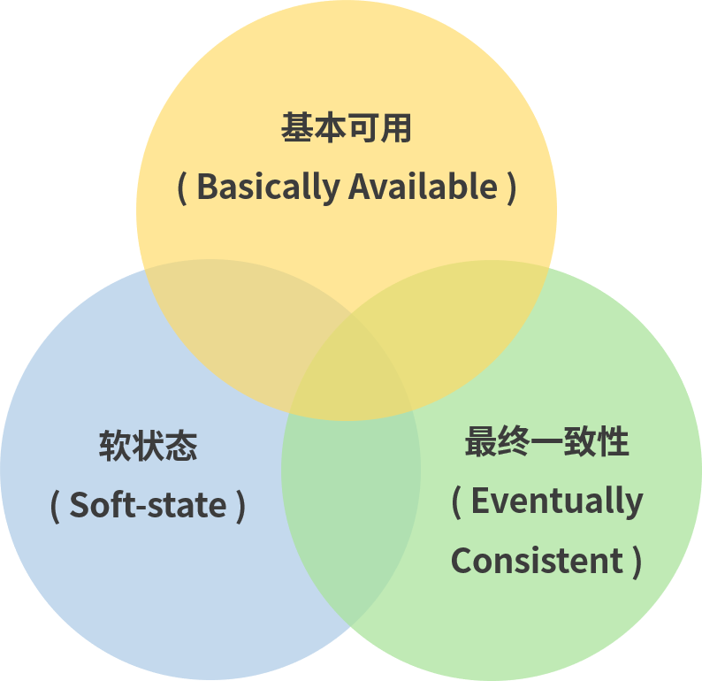 Base 理论的核心思想是最终一致性，即使无法做到强一致性（Strong Consistency），但每个应用都可以根据自身的业务特点，采用适当的方式来使系统达到最终一致性（Eventual Consistency）。 接下来我们着重对 Base 理论中的三要素进行讲解。
三个要素详解
基本可用
基本可用比较好理解，就是不追求 CAP 中的「任何时候，读写都是成功的」，而是系统能够基本运行，一直提供服务。基本可用强调了分布式系统在出现不可预知故障的时候，允许损失部分可用性，相比正常的系统，可能是响应时间延长，或者是服务被降级。 举个例子，在双十一秒杀活动中，如果抢购人数太多超过了系统的 QPS 峰值，可能会排队或者提示限流，这就是通过合理的手段保护系统的稳定性，保证主要的服务正常，保证基本可用。
软状态
软状态可以对应 ACID 事务中的原子性，在 ACID 的事务中，实现的是强制一致性，要么全做要么不做，所有用户看到的数据一致。其中的原子性（Atomicity）要求多个节点的数据副本都是一致的，强调数据的一致性。 原子性可以理解为一种“硬状态”，软状态则是允许系统中的数据存在中间状态，并认为该状态不影响系统的整体可用性，即允许系统在多个不同节点的数据副本存在数据延时。
最终一致性
数据不可能一直是软状态，必须在一个时间期限之后达到各个节点的一致性，在期限过后，应当保证所有副本保持数据一致性，也就是达到数据的最终一致性。 在系统设计中，最终一致性实现的时间取决于网络延时、系统负载、不同的存储选型、不同数据复制方案设计等因素。
全局时钟和逻辑时钟
接下来我会分析不同数据一致性模型的分类，在这之前，我们先来看一个分布式系统中的全局时钟概念。 分布式系统解决了传统单体架构的单点问题和性能容量问题，另一方面也带来了很多新的问题，其中一个问题就是多节点的时间同步问题：不同机器上的物理时钟难以同步，导致无法区分在分布式系统中多个节点的事件时序。 没有全局时钟，绝对的内部一致性是没有意义的，一般来说，我们讨论的一致性都是外部一致性，而外部一致性主要指的是多并发访问时更新过的数据如何获取的问题。 和全局时钟相对的，是逻辑时钟，逻辑时钟描绘了分布式系统中事件发生的时序，是为了区分现实中的物理时钟提出来的概念。 一般情况下我们提到的时间都是指物理时间，但实际上很多应用中，只要所有机器有相同的时间就够了，这个时间不一定要跟实际时间相同。更进一步解释：如果两个节点之间不进行交互，那么它们的时间甚至都不需要同步。 因此问题的关键点在于节点间的交互要在事件的发生顺序上达成一致，而不是对于时间达成一致。 逻辑时钟的概念也被用来解决分布式一致性问题，这里我们不展开，感兴趣的可以找一些相关的资料来学习。
不同数据一致性模型
一般来说，数据一致性模型可以分为强一致性和弱一致性，强一致性也叫做线性一致性，除此以外，所有其他的一致性都是弱一致性的特殊情况。弱一致性根据不同的业务场景，又可以分解为更细分的模型，不同一致性模型又有不同的应用场景。 在互联网领域的绝大多数场景中，都需要牺牲强一致性来换取系统的高可用性，系统往往只需要保证“最终一致性”，只要这个最终时间是在用户可以接受的范围内即可。 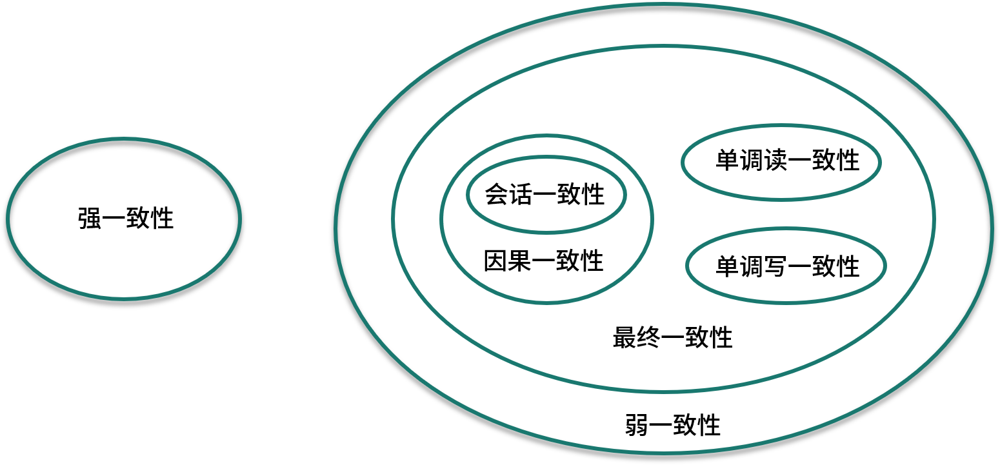 对于一致性，可以分为从服务端和客户端两个不同的视角，上面提到了全局时钟概念，这里关注的主要是外部一致性。
强一致性
当更新操作完成之后，任何多个后续进程的访问都会返回最新的更新过的值，这种是对用户最友好的，就是用户上一次写什么，下一次就保证能读到什么。根据 CAP 理论，这种实现需要牺牲可用性。
弱一致性
系统在数据写入成功之后，不承诺立即可以读到最新写入的值，也不会具体的承诺多久之后可以读到。用户读到某一操作对系统数据的更新需要一段时间，我们称这段时间为“不一致性窗口”。
最终一致性
最终一致性是弱一致性的特例，强调的是所有的数据副本，在经过一段时间的同步之后，最终都能够达到一个一致的状态。因此，最终一致性的本质是需要系统保证最终数据能够达到一致，而不需要实时保证系统数据的强一致性。 到达最终一致性的时间 ，就是不一致窗口时间，在没有故障发生的前提下，不一致窗口的时间主要受通信延迟，系统负载和复制副本的个数影响。 最终一致性模型根据其提供的不同保证可以划分为更多的模型，包括因果一致性和会话一致性等。
- 因果一致性
因果一致性要求有因果关系的操作顺序得到保证，非因果关系的操作顺序则无所谓。 进程 A 在更新完某个数据项后通知了进程 B，那么进程 B 之后对该数据项的访问都应该能够获取到进程 A 更新后的最新值，并且如果进程 B 要对该数据项进行更新操作的话，务必基于进程 A 更新后的最新值。 因果一致性的应用场景可以举个例子，在微博或者微信进行评论的时候，比如你在朋友圈发了一张照片，朋友给你评论了，而你对朋友的评论进行了回复，这条朋友圈的显示中，你的回复必须在朋友之后，这是一个因果关系，而其他没有因果关系的数据，可以允许不一致。
- 会话一致性
会话一致性将对系统数据的访问过程框定在了一个会话当中，约定了系统能保证在同一个有效的会话中实现“读己之所写”的一致性，就是在你的一次访问中，执行更新操作之后，客户端能够在同一个会话中始终读取到该数据项的最新值。 实际开发中有分布式的 Session 一致性问题，可以认为是会话一致性的一个应用。
CAP 及 Base 的关系
Base 理论是在 CAP 上发展的，CAP 理论描述了分布式系统中数据一致性、可用性、分区容错性之间的制约关系，当你选择了其中的两个时，就不得不对剩下的一个做一定程度的牺牲。 Base 理论则是对 CAP 理论的实际应用，也就是在分区和副本存在的前提下，通过一定的系统设计方案，放弃强一致性，实现基本可用，这是大部分分布式系统的选择，比如 NoSQL 系统、微服务架构。在这个前提下，如何把基本可用做到最好，就是分布式工程师们追求的，在这个课程中，我们也会有专门的模块来讲解高可用。 除了 CAP 和 Base，上面还提到了 ACID 原理，ACID 是一种强一致性模型，强调原子性、一致性、隔离性和持久性，主要用于在数据库实现中。Base 理论面向的是高可用、可扩展的分布式系统，ACID 适合传统金融等业务，在实际场景中，不同业务对数据的一致性要求不一样，ACID 和 Base 理论往往会结合使用。
03 如何透彻理解 Paxos 算法？
本课时我们主要讲解“如何透彻理解 Paxos 算法”？ Paxos 算法在分布式领域具有非常重要的地位，开源分布式锁组件 Google Chubby 的作者 Mike Burrows 说过，这个世界上只有一种一致性算法，那就是 Paxos 算法，其他的算法都是残次品。 Paxos 算法虽然重要，但是也因算法复杂而著名，不过 Paxos 算法是学习分布式系统必需的一个知识点，这一课时我们就知难而上，一起来学习下 Paxos 算法。
Quorum 机制
在学习 Paxos 算法之前，我们先来看分布式系统中的 Quorum 选举算法。在各种一致性算法中都可以看到Quorum 机制的身影，主要数学思想来源于抽屉原理，用一句话解释那就是，在 N 个副本中，一次更新成功的如果有 W 个，那么我在读取数据时是要从大于 N－W 个副本中读取，这样就能至少读到一个更新的数据了。 和 Quorum 机制对应的是 WARO，也就是Write All Read one，是一种简单的副本控制协议，当 Client 请求向某副本写数据时（更新数据），只有当所有的副本都更新成功之后，这次写操作才算成功，否则视为失败。 WARO 优先保证读服务，因为所有的副本更新成功，才能视为更新成功，从而保证了
所有的副本一致，这样的话，只需要读任何一个副本上的数据即可。写服务的可用性较低，因为只要有一个副本更新失败，此次写操作就视为失败了。假设有 N 个副本，N－1 个都宕机了，剩下的那个副本仍能提供读服务；但是只要有一个副本宕机了，写服务就不会成功。 WARO 牺牲了更新服务的可用性，最大程度地增强了读服务的可用性，而 Quorum 就是在更新服务和读服务之间进行的一个折衷。
Quorum 定义
Quorum 的定义如下：假设有 N 个副本，更新操作 wi 在 W 个副本中更新成功之后，才认为此次更新操作 wi 成功，把这次成功提交的更新操作对应的数据叫做：“成功提交的数据”。对于读操作而言，至少需要读 R 个副本才能读到此次更新的数据，其中，W+R>N ，即 W 和 R 有重叠，一般，W+R=N+1。
N = 存储数据副本的数量
W = 更新成功所需的副本
R = 一次数据对象读取要访问的副本的数量
Quorum就是限定了一次需要读取至少N+1-w的副本数据,听起来有些抽象，举个例子，我们维护了10个副本，一次成功更新了三个，那么至少需要读取八个副本的数据，可以保证我们读到了最新的数据。
Quorum 的应用
Quorum 机制无法保证强一致性，也就是无法实现任何时刻任何用户或节点都可以读到最近一次成功提交的副本数据。 Quorum 机制的使用需要配合一个获取最新成功提交的版本号的 metadata 服务，这样可以确定最新已经成功提交的版本号，然后从已经读到的数据中就可以确认最新写入的数据。 Quorum 是分布式系统中常用的一种机制，用来保证数据冗余和最终一致性的投票算法，在 Paxos、Raft 和 ZooKeeper 的 Zab 等算法中，都可以看到 Quorum 机制的应用。
Paxos 节点的角色和交互
了解了 Quorum 机制，我们接下来学习 Paxos 算法，首先看一下 Paxos 算法中的节点角色和交互。
Paxos 的节点角色
在 Paxos 协议中，有三类节点角色，分别是 Proposer、Acceptor 和 Learner，另外还有一个 Client，作为产生议题者。 上述三类角色只是逻辑上的划分，在工作实践中，一个节点可以同时充当这三类角色。
Proposer 提案者
Proposer 可以有多个，在流程开始时，Proposer 提出议案，也就是value，所谓 value，在工程中可以是任何操作，比如“修改某个变量的值为某个新值”，Paxos 协议中统一将这些操作抽象为 value。 不同的 Proposer 可以提出不同的甚至矛盾的 value，比如某个 Proposer 提议“将变量 X 设置为 1”，另一个 Proposer 提议“将变量 X 设置为 2”，但对同一轮 Paxos 过程，最多只有一个 value 被批准。
Acceptor 批准者
在集群中，Acceptor 有 N 个，Acceptor 之间完全对等独立，Proposer 提出的 value 必须获得超过半数（N/2+1）的 Acceptor 批准后才能通过。
Learner 学习者
Learner 不参与选举，而是学习被批准的 value，在Paxos中，Learner主要参与相关的状态机同步流程。
这里Leaner的流程就参考了Quorum 议会机制，某个 value 需要获得 W=N/2 + 1 的 Acceptor 批准，Learner 需要至少读取 N/2+1 个 Accpetor，最多读取 N 个 Acceptor 的结果后，才能学习到一个通过的 value。
Client 产生议题者
Client 角色，作为产生议题者，实际不参与选举过程，比如发起修改请求的来源等。
Proposer 与 Acceptor 之间的交互
Paxos 中， Proposer 和 Acceptor 是算法核心角色，Paxos 描述的就是在一个由多个 Proposer 和多个 Acceptor 构成的系统中，如何让多个 Acceptor 针对 Proposer 提出的多种提案达成一致的过程，而 Learner 只是“学习”最终被批准的提案。
Proposer 与 Acceptor 之间的交互主要有 4 类消息通信，如下图：
 这 4 类消息对应于 Paxos 算法的两个阶段 4 个过程，下面在分析选举过程时会讲到。
这 4 类消息对应于 Paxos 算法的两个阶段 4 个过程，下面在分析选举过程时会讲到。
Paxos 选举过程
选举过程可以分为两个部分，准备阶段和选举阶段，可以查看下面的时序图：

Phase 1 准备阶段
Proposer 生成全局唯一且递增的 ProposalID，向 Paxos 集群的所有机器发送 Prepare 请求，这里不携带 value，只携带 N 即 ProposalID。 Acceptor 收到 Prepare 请求后，判断收到的 ProposalID 是否比之前已响应的所有提案的 N 大，如果是，则：
- 在本地持久化 N，可记为 Max_N；
- 回复请求，并带上已经 Accept 的提案中 N 最大的 value，如果此时还没有已经 Accept 的提案，则返回 value 为空；
- 做出承诺，不会 Accept 任何小于 Max_N 的提案。 如果否，则不回复或者回复 Error。
Phase 2 选举阶段
为了方便描述，我们把 Phase 2 选举阶段继续拆分为 P2a、P2b 和 P2c。
P2a：Proposer 发送 Accept
经过一段时间后，Proposer 收集到一些 Prepare 回复，有下列几种情况：
- 若回复数量 > 一半的 Acceptor 数量，且所有回复的 value 都为空时，则 Porposer 发出 accept 请求，并带上自己指定的 value。
- 若回复数量 > 一半的 Acceptor 数量，且有的回复 value 不为空时，则 Porposer 发出 accept 请求，并带上回复中 ProposalID 最大的 value，作为自己的提案内容。
- 若回复数量 <= 一半的 Acceptor 数量时，则尝试更新生成更大的 ProposalID，再转到准备阶段执行。
P2b：Acceptor 应答 Accept
Accpetor 收到 Accpet 请求 后，判断：
- 若收到的 N >= Max_N（一般情况下是等于），则回复提交成功，并持久化 N 和 value；
- 若收到的 N < Max_N，则不回复或者回复提交失败。
P2c: Proposer 统计投票
经过一段时间后，Proposer 会收集到一些 Accept 回复提交成功的情况，比如：
- 当回复数量 > 一半的 Acceptor 数量时，则表示提交 value 成功，此时可以发一个广播给所有的 Proposer、Learner，通知它们已 commit 的 value；
- 当回复数量 <= 一半的 Acceptor 数量时，则尝试更新生成更大的 ProposalID，转到准备阶段执行。
- 当收到一条提交失败的回复时，则尝试更新生成更大的 ProposalID，也会转到准备阶段执行。
Paxos 常见的问题
关于Paxos协议，有几个常见的问题，简单介绍下。 1.如果半数以内的 Acceptor 失效，如何正常运行？
在Paxos流程中，如果出现半数以内的 Acceptor 失效，可以分为两种情况：
第一种，如果半数以内的 Acceptor 失效时还没确定最终的 value，此时所有的 Proposer 会重新竞争提案，最终有一个提案会成功提交。
第二种，如果半数以内的 Acceptor 失效时已确定最终的 value，此时所有的 Proposer 提交前必须以最终的 value 提交，也就是Value实际已经生效，此值可以被获取，并不再修改。 2. Acceptor需要接受更大的N，也就是ProposalID有什么意义？
这种机制可以防止其中一个Proposer崩溃宕机产生阻塞问题，允许其他Proposer用更大ProposalID来抢占临时的访问权。 3. 如何产生唯一的编号，也就是 ProposalID？
在《Paxos made simple》论文中提到，唯一编号是让所有的 Proposer 都从不相交的数据集合中进行选择，需要保证在不同Proposer之间不重复，比如系统有 5 个 Proposer，则可为每一个 Proposer 分配一个标识 j(0~4)，那么每一个 Proposer 每次提出决议的编号可以为 5*i + j，i 可以用来表示提出议案的次数。
总结
这一课时分享了 Paxos 协议相关的知识点，Paxos 是经典的分布式协议，理解了它们以后，学习其他分布式协议会简单很多。
Paxos算法更重要的是理解过程，并不是要把各个流程都背下来，除了文中介绍的，相关的分支判断和选择场景还有很多，如果希望了解Paxos算法相关的推导和证明，我在最后附上了 Paxos 相关的几篇论文地址，感兴趣的同学可以去学习下：
04 ZooKeeper 如何保证数据一致性？
在分布式场景中，ZooKeeper 的应用非常广泛，比如数据发布和订阅、命名服务、配置中心、注册中心、分布式锁等。
ZooKeeper 提供了一个类似于 Linux 文件系统的数据模型，和基于 Watcher 机制的分布式事件通知，这些特性都依赖 ZooKeeper 的高容错数据一致性协议。
那么问题来了，在分布式场景下，ZooKeeper 是如何实现数据一致性的呢？
Zab 一致性协议
ZooKeeper 是通过 Zab 协议来保证分布式事务的最终一致性。Zab（ZooKeeper Atomic Broadcast，ZooKeeper 原子广播协议）支持崩溃恢复，基于该协议，ZooKeeper 实现了一种主备模式的系统架构来保持集群中各个副本之间数据一致性。
系统架构可以参考下面这张图：
在 ZooKeeper 集群中，所有客户端的请求都是写入到 Leader 进程中的，然后，由 Leader 同步到其他节点，称为 Follower。在集群数据同步的过程中，如果出现 Follower 节点崩溃或者 Leader 进程崩溃时，都会通过 Zab 协议来保证数据一致性。
Zab 协议的具体实现可以分为以下两部分：
- 消息广播阶段
Leader 节点接受事务提交，并且将新的 Proposal 请求广播给 Follower 节点，收集各个节点的反馈，决定是否进行 Commit，在这个过程中，也会使用上一课时提到的 Quorum 选举机制。
- 崩溃恢复阶段
如果在同步过程中出现 Leader 节点宕机，会进入崩溃恢复阶段，重新进行 Leader 选举，崩溃恢复阶段还包含数据同步操作，同步集群中最新的数据，保持集群的数据一致性。
整个 ZooKeeper 集群的一致性保证就是在上面两个状态之前切换，当 Leader 服务正常时，就是正常的消息广播模式；当 Leader 不可用时，则进入崩溃恢复模式，崩溃恢复阶段会进行数据同步，完成以后，重新进入消息广播阶段。
Zab 协议中的 Zxid
Zxid 在 ZooKeeper 的一致性流程中非常重要，在详细分析 Zab 协议之前，先来看下 Zxid 的概念。
Zxid 是 Zab 协议的一个事务编号，Zxid 是一个 64 位的数字，其中低 32 位是一个简单的单调递增计数器，针对客户端每一个事务请求，计数器加 1；而高 32 位则代表 Leader 周期年代的编号。
这里 Leader 周期的英文是 epoch，可以理解为当前集群所处的年代或者周期，对比另外一个一致性算法 Raft 中的 Term 概念。在 Raft 中，每一个任期的开始都是一次选举，Raft 算法保证在给定的一个任期最多只有一个领导人。
Zab 协议的实现也类似，每当有一个新的 Leader 选举出现时，就会从这个 Leader 服务器上取出其本地日志中最大事务的 Zxid，并从中读取 epoch 值，然后加 1，以此作为新的周期 ID。总结一下，高 32 位代表了每代 Leader 的唯一性，低 32 位则代表了每代 Leader 中事务的唯一性。
Zab 流程分析
Zab 的具体流程可以拆分为消息广播、崩溃恢复和数据同步三个过程，下面我们分别进行分析。
消息广播
在 ZooKeeper 中所有的事务请求都由 Leader 节点来处理，其他服务器为 Follower，Leader 将客户端的事务请求转换为事务 Proposal，并且将 Proposal 分发给集群中其他所有的 Follower。
完成广播之后，Leader 等待 Follwer 反馈，当有过半数的 Follower 反馈信息后，Leader 将再次向集群内 Follower 广播 Commit 信息，Commit 信息就是确认将之前的 Proposal 提交。
这里的 Commit 可以对比 SQL 中的 COMMIT 操作来理解，MySQL 默认操作模式是 autocommit 自动提交模式，如果你显式地开始一个事务，在每次变更之后都要通过 COMMIT 语句来确认，将更改提交到数据库中。
Leader 节点的写入也是一个两步操作，第一步是广播事务操作，第二步是广播提交操作，其中过半数指的是反馈的节点数 >=N/2+1，N 是全部的 Follower 节点数量。
消息广播的过程描述可以参考下图：

- 客户端的写请求进来之后，Leader 会将写请求包装成 Proposal 事务，并添加一个递增事务 ID，也就是 Zxid，Zxid 是单调递增的，以保证每个消息的先后顺序；
- 广播这个 Proposal 事务，Leader 节点和 Follower 节点是解耦的，通信都会经过一个先进先出的消息队列，Leader 会为每一个 Follower 服务器分配一个单独的 FIFO 队列，然后把 Proposal 放到队列中；
- Follower 节点收到对应的 Proposal 之后会把它持久到磁盘上，当完全写入之后，发一个 ACK 给 Leader；
- 当 Leader 收到超过半数 Follower 机器的 ack 之后，会提交本地机器上的事务，同时开始广播 commit， Follower 收到 commit 之后，完成各自的事务提交。
分析完消息广播，我们再来看一下崩溃恢复。
崩溃恢复
消息广播通过 Quorum 机制，解决了 Follower 节点宕机的情况，但是如果在广播过程中 Leader 节点崩溃呢？
这就需要 Zab 协议支持的崩溃恢复，崩溃恢复可以保证在 Leader 进程崩溃的时候可以重新选出 Leader，并且保证数据的完整性。
崩溃恢复和集群启动时的选举过程是一致的，也就是说，下面的几种情况都会进入崩溃恢复阶段：
- 初始化集群，刚刚启动的时候
- Leader 崩溃，因为故障宕机
- Leader 失去了半数的机器支持，与集群中超过一半的节点断连
崩溃恢复模式将会开启新的一轮选举，选举产生的 Leader 会与过半的 Follower 进行同步，使数据一致，当与过半的机器同步完成后，就退出恢复模式， 然后进入消息广播模式。
Zab 中的节点有三种状态，伴随着的 Zab 不同阶段的转换，节点状态也在变化：
 我们通过一个模拟的例子，来了解崩溃恢复阶段，也就是选举的流程。
我们通过一个模拟的例子，来了解崩溃恢复阶段，也就是选举的流程。
假设正在运行的集群有五台 Follower 服务器，编号分别是 Server1、Server2、Server3、Server4、Server5，当前 Leader 是 Server2，若某一时刻 Leader 挂了，此时便开始 Leader 选举。
选举过程如下：
1**.各个节点变更状态，变更为** Looking
ZooKeeper 中除了 Leader 和 Follower，还有 Observer 节点，Observer 不参与选举，Leader 挂后，余下的 Follower 节点都会将自己的状态变更为 Looking，然后开始进入 Leader 选举过程。
2**.各个** Server 节点都会发出一个投票，参与选举
在第一次投票中，所有的 Server 都会投自己，然后各自将投票发送给集群中所有机器，在运行期间，每个服务器上的 Zxid 大概率不同。
3**.**集群接收来自各个服务器的投票，开始处理投票和选举
处理投票的过程就是对比 Zxid 的过程，假定 Server3 的 Zxid 最大，Server1 判断 Server3 可以成为 Leader，那么 Server1 就投票给 Server3，判断的依据如下：
首先选举 epoch 最大的
如果 epoch 相等，则选 zxid 最大的
若 epoch 和 zxid 都相等，则选择 server id 最大的，就是配置 zoo.cfg 中的 myid
在选举过程中，如果有节点获得超过半数的投票数，则会成为 Leader 节点，反之则重新投票选举。

4**.选举成功，改变服务器的状态，参考上面这张图的状态变更**
数据同步
崩溃恢复完成选举以后，接下来的工作就是数据同步，在选举过程中，通过投票已经确认 Leader 服务器是最大Zxid 的节点，同步阶段就是利用 Leader 前一阶段获得的最新Proposal历史，同步集群中所有的副本。
上面分析了 Zab 协议的具体流程，接下来我们对比一下 Zab 协议和 Paxos 算法。
Zab 与 Paxos 算法的联系与区别
Paxos 的思想在很多分布式组件中都可以看到，Zab 协议可以认为是基于 Paxos 算法实现的，先来看下两者之间的联系：
- 都存在一个 Leader 进程的角色，负责协调多个 Follower 进程的运行
- 都应用 Quorum 机制，Leader 进程都会等待超过半数的 Follower 做出正确的反馈后，才会将一个提案进行提交
- 在 Zab 协议中，Zxid 中通过 epoch 来代表当前 Leader 周期，在 Paxos 算法中，同样存在这样一个标识，叫做 Ballot Number
两者之间的区别是，Paxos 是理论，Zab 是实践，Paxos 是论文性质的，目的是设计一种通用的分布式一致性算法，而 Zab 协议应用在 ZooKeeper 中，是一个特别设计的崩溃可恢复的原子消息广播算法。
Zab 协议增加了崩溃恢复的功能，当 Leader 服务器不可用，或者已经半数以上节点失去联系时，ZooKeeper 会进入恢复模式选举新的 Leader 服务器，使集群达到一个一致的状态。
总结
这一课时的内容分享了 ZooKeeper 一致性实现，包括 Zab 协议中的 Zxid 结构，Zab 协议具体的流程实现，以及 Zab 和原生 Paxos 算法的区别和联系。
Zab 协议在实际处理中有很多的实现细节，由于篇幅原因，这里只分享了核心的流程，若对该协议感兴趣的话，可以在课后继续找些书籍或者资料来学习：
05 共识问题：区块链如何确认记账权？
本课时我们主要讲解“共识问题：区块链如何确认记账权？”
区块链可以说是最近几年最热的技术领域之一，区块链起源于中本聪的比特币，作为比特币的底层技术，本质上是一个去中心化的数据库，其特点是去中心化、公开透明，作为分布式账本技术，每个节点都可以参与数据库的记录。
区块链是一个注重安全和可信度胜过效率的一项技术，如果说互联网技术解决的是通讯问题，区块链技术解决的则是信任问题。
今天我们关注区块链中的核心问题：作为分布式账本，每个参与者都维护了一份数据，那么如何确认记账权，最终的账本以谁为准呢？
区块链的共识
区块链是一种去中心化的分布式账本系统，区块链的共识问题实际上是来源于分布式系统的一致性问题。
共识（Consensus）故名思义，共同的认识，共识问题研究的是多个成员如何达成一致，典型的比如投票选举。
共识机制在区块链中扮演着核心的地位，共识机制决定了谁有记账的权利，以及记账权利的选择过程和理由。不同的虚拟货币采用共识机制也不同，常见的共识机制有 POW、POS、DPOS等。
我们前面提到 CAP 中的 C 是 Consistency（一致性），Consistency 和 Consensus 有什么区别呢？
Consistency 侧重的是内容在时间顺序上的一致和统一，而 Consensus 则是指由许多参与者对某项内容达成共识，所以一般把 Consistency 翻译为“一致性”，把 Consensus 翻译为“共识”。
拜占庭将军问题
前面的课程中我们已经分享了几个经典的一致性算法，如果把共识机制延伸到分布式系统中，就是系统需要有一个主进程来协调，系统的所有决定都由主进程来达成一致性。
到了区块链中，由于区块链是一种去中心化的分布式系统，所以区块链中是没有类似于团队里的领导，以及分布式系统中的 master 角色，这样就需要有某种共识机制，以便保证系统一致性。
一般在网络通信中，把节点故障，也就是信道不可靠的情况称为“非拜占庭错误”，恶意响应，也就是系统被攻击，传递错误消息称为“拜占庭错误”。
为什么叫拜占庭错误呢？实际上是来自于一个故事模型：
拜占庭帝国就是中世纪的土耳其帝国，拥有巨大的财富，周围 10 个邻邦垂诞已久，但拜占庭高墙耸立，固若金汤，没有一个单独的邻邦能够成功入侵。任何单个邻邦入侵都会失败，同时也有可能自身被其他 9 个邻邦入侵。
拜占庭帝国防御能力如此之强，至少要有十个邻邦中的一半以上同时进攻，才有可能攻破。然而，如果其中的一个或者几个邻邦本身答应好一起进攻，但实际过程出现背叛，那么入侵者可能都会被歼灭。
于是每一方都小心行事，不敢轻易相信邻国，这就是拜占庭将军问题。

（图片来自维基百科）
在拜占庭问题里，各邻国最重要的事情是：所有将军如何能过达成共识去攻打拜占庭帝国。拜占庭将军问题核心描述是军中可能有叛徒，却要保证进攻一致，由此引申到计算机领域，发展成了一种容错理论：
一群将军想要实现某一个目标，比如一致进攻或者一致撤退，单独行动是行不通的，必须合作，达成共识；由于叛徒的存在，将军们不知道应该如何达到一致。
其实，拜占庭将军问题（Byzantine Generals Problem）和我们前面提到的 Paxos 算法、逻辑时钟等，都是由 Leslie Lamport 提出的。
Lamport 可以说是分布式系统的奠基人之一，由于在分布式领域的一系列贡献，Lamport 获得了 2013 年的图灵奖。 拜占庭将军问题和我们今天要讨论的记账权有什么联系呢？
在记账权的归属中，关键的是如何避免恶意共识的出现，也就是错误的记账，类似如何处理拜占庭将军中的叛徒。
比特币是区块链技术最广泛的应用，在比特币中如何决定记账权呢？答案就是 POW 机制，接下来我们分析 POW 工作量证明机制。
POW 工作量证明
PoW（Proof of Work，工作量证明）被认为是经过验证最安全的拜占庭解决机制，最早是用来防垃圾邮件的，典型的就是 Google 邮箱的反垃圾邮件系统。
Google 邮箱强制要求每一个给 Google 服务器发送邮件的发送者，必须先完成一定量的计算工作，造成一小段时间的延迟，比如延迟 1 秒，如果是正常的邮件发送，这个时间是可以接受；如果是广告邮件发送者，因为要进行大量的发送工作，这种无价值的计算是无法忍受的。
挖矿的由来
挖矿是比特币系统中一个形象化的表达，那么挖矿是怎么来的呢？
比特币挖矿是将一段时间内比特币系统中发生的交易进行确认，并记录在区块链上形成新区块的过程，由于需要竞争记账权，利用计算机去计算 Hash 数值，随机碰撞解题，这个过程就是挖矿。
换句话说，就是比特币系统出一道数学题，大家抢答最优解，挖矿就是记账的过程，矿工是记账员，区块链就是账本。
比特币的 POW 实现
比特币中的 POW 实现，是通过计算来猜测一个数值（Nonce），得以解决规定的 Hash 问题，下面是比特币的区块结构，可以看到区块头有个随机数字段，这个就是 Nonce 值：

中本聪在比特币系统中设置了一道题目，通过不断调节 Nonce 的值，来对区块头算 Hash，要求找到一个 Nonce 值，使得算出来的 Hash 值满足某个固定值。
具体的 Hash 方法一般是使用 SHA256 算法 ，你可以查看这个小工具来测试 https://tool.oschina.net/encrypt?type=2。
我们来简化一下计算过程，假设第 100 个区块给出的区块值是下列字符串，最早计算出该字符串的节点可以获得比特币：
f7684590e9c732fb3cf4bf0b8e0f5ea9511e8bbaacb589892634ae7938e5700c
由于 Hash 算法是一个不可以逆的算法，没法通过具体的 Hash 值倒推出原文，这样每个节点只能采用穷举的方法，也就是选择各种字符串，比如开始的 a、b、c、1、2、3、…，不断的尝试。
比特币系统自身会调节难度，控制解题的时间，一般来讲，约每 10 分钟挖出一个区块，在这 10 分钟内，计算机只能不停地去计算，去试各种字符串。
这个过程实际上是考验各个节点的服务器性能，也就是算力。如果你算力非常强大，有几万台服务器，可以很快得到 Nonce 值，也就是正确答案：lagou，对应 Hash 值和题目要求一致。
接下来你就可以把这个 Nonce 值放在结构体里，通过 P2P 网络广播出去，其他的系统节点收到后，发现这个 Nonce 值是合法的，能满足要求，会认为你挖矿成功。
由于解出了题目，你会获得系统对应的比特币奖励，以及本区块内所有交易产生的手续费。其他节点发现有人已经算出来了，就会放弃本次计算，然后开启下一个区块的题目，去寻找下一个区块头的 Nonce 值。
作为落地的最大区块链系统，比特币的区块信息一直在动态生成。下面这张截图记录了比特币最近的区块信息，区块信息来自 https://www.blockchain.com/，你也可以点击链接查看最新的区块高度。

区块链分叉和 51% 攻击
Hash 问题具有不可逆的特点，主要依靠暴力计算，谁的算力多，谁最先解决问题的概率就越大。当掌握超过全网一半算力时，就能控制网络中链的走向，这也是所谓 51% 攻击的由来。
前面我们说过，因为区块链中每个节点都可以参与记账，系统中可能出现链的分叉（Fork），最终会有一条链成为最长的链。
但是在现实社会中，牵扯到参与各方巨大的利益关系，算力之间的博弈往往并没有那么简单，以比特币为例，已经分裂出了 BCH（比特币现金）、BTG（比特币黄金）等分叉币。
POW 机制优缺点
POW 的优点有很多，POW 是第一个完全实现去中心化共识算法的，并且节点自由进出，容易实现，由于对算力的高要求，破坏系统花费的成本也巨大。
POW 机制的缺点也是显而易见的，最大的就是浪费能源，巨大的算力被浪费在了无尽的挖矿行为中，并且本身并不产生任何价值。
这也是区块链被很多人指责的一点，浪费了大量的能源，收获的仅仅是一堆无价值的数据存储，换个角度来思考，这也说明了在去中心化的场景下，实现信任是多么的困难。
另一方面也可以看到，大量的数字货币矿场都是建设在西南地区的深山中，利用当地价格低廉的电力资源，或者就直接和发电站建设在一起。
其他共识方法
除了 POW 机制，还有其他的共识方法，典型的就是 POS 和 DPOS 等。
POS 权益证明
POS（Proof of Stake，权益证明）类似现实生活中的股东大会机制，拥有股份越多的人拥有越多的投票权，也就越容易获取记账权。

POS 是通过保证金来对赌一个合法的块成为新的区块，收益为抵押资本的利息和交易服务费。提供证明的保证金越多，则获得记账权的概率就越大，合法记账者可以获得收益。著名的数字货币 ETH（以太坊），就在共识算法中采用了 POS 机制。
DPOS 委托权益证明
采用 DPOS（Delegated Proof of Stake，委托权益证明）机制的典型代表是 EOS，如果说 POS 类似股东大会，比较的是谁持有的股份多，那么 DPOS 类似于公司董事会制度，在 DPOS 共识制度下，会选出一定数量的代表，来负责生产区块。
总结
区块链可以说是分布式系统最广泛的应用之一，今天介绍了区块链共识问题的由来、拜占庭将军问题，以及典型的 POW 解决机制。
区块链是一个非常广的主题，以拜占庭将军问题为例，在区块链之前，还有两种解决方案：口头协议和书面协议。专栏的内容是以分布式系统为主，后面的章节不会继续区块链相关话题的讨论，如果你希望了解更多的区块链技术及应用，下面附上了一些相关的资料：
06 如何准备一线互联网公司面试？
本课时我们来讲讲如何准备一线互联网公司面试。
互联网技术面试的特点
互联网公司的技术面试有一些侧重点，国内互联网公司和外企的侧重点又有不同。BAT 互联网公司看重项目能力，重点考察语言深度和项目能力，国外 IT 公司更看重计算机基础，比如微软和 Amazon 的面试，每轮面试都是算法题的在线测评，针对社招还会有 System Design 题目。
一般来说，一线互联网公司面试都有下面的特点：
1. 看重数据结构和算法等计算机基础知识
一线互联网公司在面试中更加关注计算机基础知识的考察，比如数据结构和算法，操作系统、网络原理，目前，很多国内公司在招聘上也看齐 Google、Facebook 等海外企业，面试重点考察算法，如果没有 ACM 经验，不刷题很难通过。
2. 深入技术栈，考察对原理和源码的掌握程度
深入底层实现，考察对相关组件的原理掌握程度，以及是否读过源码等。因为互联网用户基数比较大，一个细微的优化可能会带来很大的收益，同样，一个很小的问题可能会对线上业务造成毁灭性的影响，所以要知其然还要知其所以然，对技术栈的掌握要求比较深入。
3. 偏向实际问题，考察业务中的应用
面试中通常会结合实际业务场景来提问，其考察的是在真实业务中如何设计。我们知道，条条大路通罗马，一个功能点，技术方案可能有很多，但是从落地到代码实现，就要限制于整体方案、上下游约束等，典型的比如秒杀系统、微博会员关注关系设计等。
4. 重视分布式系统、高可用等设计方向
大型互联网公司，特别是 C 端的业务，面对的是海量的用户和请求，牵一发而动全身，对系统可用性、分布式高可用等有极高的要求，所以在面试中会重点考察分布式系统设计，如何构建高并发高可用的系统。
如何高效准备面试
分析了互联网公司的面试特点，接下来就是有针对性的准备面试。如何快速了解一个公司的招聘要求？答案就是去各大招聘网站，从招聘启事入手，这也是最快、最有效的方式。
我们总结了招聘网站上十几家互联网大厂的招聘启事，从中寻找共性，以 Java 语言为代表，把一线互联网公司后端工程师通用的招聘要求列在了下面：
- 计算机以及相关专业，本科或以上学历；
- 扎实的数据结构与算法基础，熟悉计算机及网络相关知识；
- 熟悉 Java 开发，掌握面向对象思想，具备扎实的抽象能力、设计能力；
- 熟练使用 Spring 或其他 Web 框架，了解其原理；
- 熟练使用 MySQL、Redis、 MongoDB 或者 ElasticSearch 等存储技术；
- 了解 JVM 内存管理，掌握 JVM 调优技能；
- 熟悉分布式系统常见技术，掌握 RPC 框架和微服务架构；
- 良好的沟通交流能力，具备较强的学习能力和责任心，可以编写良好的代码文档。
感兴趣的可以去招聘网站上看一下，对后端开发的要求，基本就是在这个范围里，从这个通用招聘要求上，我们可以逐条拆解，总结如何高效准备面试。

1. 对学历和专业的要求，硬性标准
对学历和专业的要求，这一条一般都会注明，不过计算机行业比较包容，不拘一格，非科班以及转专业的技术大牛也有很多，这里不展开。
2. 加强计算机基础，提高算法和数据结构、操作系统等底层能力
计算机基础能力是面试的重点，在校招中更是着重考察。
数据结构方面，基本的数组、栈和队列、字符串、二叉树等结构，比如二叉树是面试中的重点，手写红黑树有点夸张，不过基本的遍历、二叉树重建、二叉树深度等必须掌握，需要在白纸上写写代码，考的是白板编程能力。
算法方面，基本的排序和查找、递归、分治、动态规划之类都会考察，这方面可以多看看《剑指 offer》《编程珠玑》，国内推荐牛客网，国外就是 LeetCode 的高频题。
操作系统和网络原理，比如基本的调度算法、文件系统，还有各种网络协议，比如 TCP/IP 协议、拥塞控制等。操作系统推荐机械工业出版社的华章系列教材，网络原理也有一些经典书籍，如果觉得《TCP/IP 详解》太厚，可以看《图解 HTTP 协议》和《图解 TCP/IP 协议》。
3. 深入一门编程语言，了解底层实现，各种语法糖和特性
后端工程师不管学习多少语言，都要有一门自己的主编程语言，什么是主编程语言，就是对这个编程语言你可以达到精通的程度，不是只会用，要从代码编译开始就知道程序是怎么运行的。典型的主语言有 Java、C++、PHP 及 Python 等。
针对 Java 语言，要了解 Java 语言的底层机制，字节码怎么用，为什么 Java 是平台无关型语言，这些都要搞明白，应用层面，对集合框架、网络 IO、并发编程、泛型、异常、反射等技术都要有比较深入的了解，一些常见的组件，还要学习源码，优化层面，Java 虚拟机调优、常见 JVM 问题的处理，这些都是面试经常考察的，也是一定要掌握的。
4. 加强数据库和缓存应用，掌握 NoSQL 技术
数据存储是业务的基石，从关系型数据库 MySQL 到 NoSQL，从 Memcached 到 Redis 的各种缓存，这些都是面试的必考题，从应用到底层逻辑都必须了解，数据库本身这块的知识点更是重要，Redis 也是面试的重点，作为应用最多的缓存，Redis 在开发中已经和 MySQL 一样重要。
5. 学习高并发和高可用的分布式系统设计
高并发是技术人一直追求的，为什么我们说双十一是对系统架构的挑战，就是天量的 QPS 请求，在这种情况下，如何保障系统的高可用，保证业务正常，是每个工程师都要思考的。分布式系统架构，以及高并发和高可用知识，则需要在工作中注意积累，如果工作中没有类似的上手锻炼机会，也可以通过各种书籍和专栏等渠道来学习。
6. 增强软性指标，包括快速学习，良好的沟通能力
除了技术实力，软性指标也很重要，在平时的工作中，要注意梳理文档，养成良好的文档能力，和同事的沟通中，多学习下《金字塔原理》等沟通技巧，在面试中就可以更好的表现自己。
另外，要注意工作上业务的连续性，技术为业务服务，更好地了解业务，也可以帮助你拿到心仪的 Offer。
07 分布式事务有哪些解决方案？
本课时我们来讨论下分布式事务的相关知识点。
分布式事务是分布式系统中非常重要的一部分，最典型的例子是银行转账和扣款，A 和 B 的账户信息在不同的服务器上，A 给 B 转账 100 元，要完成这个操作，需要两个步骤，从 A 的账户上扣款，以及在 B 的账户上增加金额，两个步骤必须全部执行成功；否则如果有一个失败，那么另一个操作也不能执行。
那么像这种转账扣款的例子，在业务中如何保证一致性，有哪些解决方案呢？
分布式事务是什么
顾名思义，分布式事务关注的是分布式场景下如何处理事务，是指事务的参与者、支持事务操作的服务器、存储等资源分别位于分布式系统的不同节点之上。
简单来说，分布式事务就是一个业务操作，是由多个细分操作完成的，而这些细分操作又分布在不同的服务器上；事务，就是这些操作要么全部成功执行，要么全部不执行。
数据库事务
数据库事务的特性包括原子性（Atomicity）、一致性（Consistency）、隔离性（Isolation）和持久性（Durabilily），简称 ACID。
在数据库执行中，多个并发执行的事务如果涉及到同一份数据的读写就容易出现数据不一致的情况，不一致的异常现象有以下几种。
脏读，是指一个事务中访问到了另外一个事务未提交的数据。例如事务 T1 中修改的数据项在尚未提交的情况下被其他事务（T2）读取到，如果 T1 进行回滚操作，则 T2 刚刚读取到的数据实际并不存在。
不可重复读，是指一个事务读取同一条记录 2 次，得到的结果不一致。例如事务 T1 第一次读取数据，接下来 T2 对其中的数据进行了更新或者删除，并且 Commit 成功。这时候 T1 再次读取这些数据，那么会得到 T2 修改后的数据，发现数据已经变更，这样 T1 在一个事务中的两次读取，返回的结果集会不一致。
幻读，是指一个事务读取 2 次，得到的记录条数不一致。例如事务 T1 查询获得一个结果集，T2 插入新的数据，T2 Commit 成功后，T1 再次执行同样的查询，此时得到的结果集记录数不同。
脏读、不可重复读和幻读有以下的包含关系，如果发生了脏读，那么幻读和不可重复读都有可能出现。
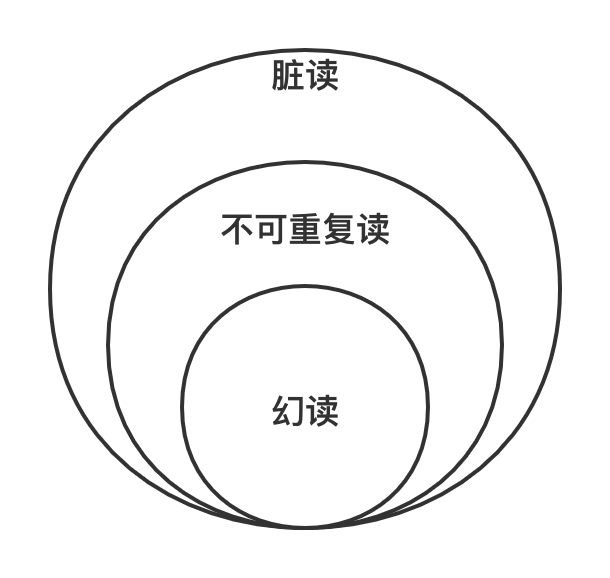
不同隔离级别
SQL 标准根据三种不一致的异常现象，将隔离性定义为四个隔离级别（Isolation Level），隔离级别和数据库的性能呈反比，隔离级别越低，数据库性能越高；而隔离级别越高，数据库性能越差，具体如下：
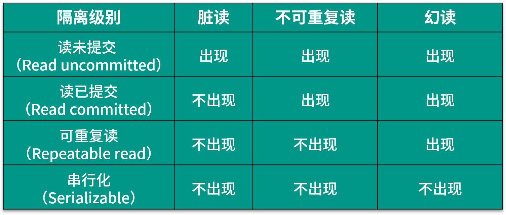 （1）Read uncommitted 读未提交
在该级别下，一个事务对数据修改的过程中，不允许另一个事务对该行数据进行修改，但允许另一个事务对该行数据进行读，不会出现更新丢失，但会出现脏读、不可重复读的情况。
（2）Read committed 读已提交
在该级别下，未提交的写事务不允许其他事务访问该行，不会出现脏读，但是读取数据的事务允许其他事务访问该行数据，因此会出现不可重复读的情况。
（3）Repeatable read 可重复读
在该级别下，在同一个事务内的查询都是和事务开始时刻一致的，保证对同一字段的多次读取结果都相同，除非数据是被本身事务自己所修改，不会出现同一事务读到两次不同数据的情况。因为没有约束其他事务的新增Insert操作，所以 SQL 标准中可重复读级别会出现幻读。
值得一提的是，可重复读是 MySQL InnoDB 引擎的默认隔离级别，但是在 MySQL 额外添加了间隙锁（Gap Lock），可以防止幻读。
（4）Serializable 序列化
该级别要求所有事务都必须串行执行，可以避免各种并发引起的问题，效率也最低。
对不同隔离级别的解释，其实是为了保持数据库事务中的隔离性（Isolation），目标是使并发事务的执行效果与串行一致，隔离级别的提升带来的是并发能力的下降，两者是负相关的关系。
分布式事务产生的原因
分布式事务是伴随着系统拆分出现的，前面我们说过，分布式系统解决了海量数据服务对扩展性的要求，但是增加了架构上的复杂性，在这一点上，分布式事务就是典型的体现。
在实际开发中，分布式事务产生的原因主要来源于存储和服务的拆分。
存储层拆分
存储层拆分，最典型的就是数据库分库分表，一般来说，当单表容量达到千万级，就要考虑数据库拆分，从单一数据库变成多个分库和多个分表。在业务中如果需要进行跨库或者跨表更新，同时要保证数据的一致性，就产生了分布式事务问题。在后面的课程中，也会专门来讲解数据库拆分相关的内容。
服务层拆分
服务层拆分也就是业务的服务化，系统架构的演进是从集中式到分布式，业务功能之间越来越解耦合。
比如电商网站系统，业务初期可能是一个单体工程支撑整套服务，但随着系统规模进一步变大，参考康威定律，大多数公司都会将核心业务抽取出来，以作为独立的服务。商品、订单、库存、账号信息都提供了各自领域的服务，业务逻辑的执行散落在不同的服务器上。
用户如果在某网站上进行一个下单操作，那么会同时依赖订单服务、库存服务、支付扣款服务，这几个操作如果有一个失败，那下单操作也就完不成，这就需要分布式事务来保证了。 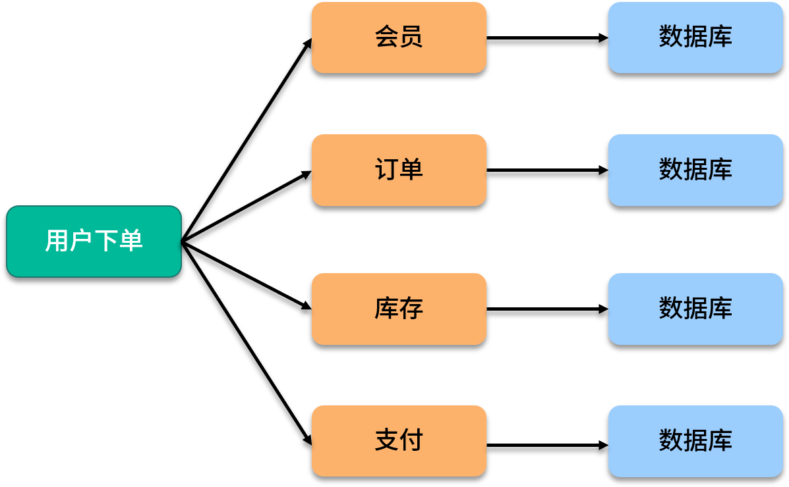
分布式事务解决方案
分布式事务的解决方案，典型的有两阶段和三阶段提交协议、 TCC 分段提交，和基于消息队列的最终一致性设计。
2PC 两阶段提交
两阶段提交（2PC，Two-phase Commit Protocol）是非常经典的强一致性、中心化的原子提交协议，在各种事务和一致性的解决方案中，都能看到两阶段提交的应用。
3PC 三阶段提交
三阶段提交协议（3PC，Three-phase_commit_protocol）是在 2PC 之上扩展的提交协议，主要是为了解决两阶段提交协议的阻塞问题，从原来的两个阶段扩展为三个阶段，增加了超时机制。
TCC 分段提交
TCC 是一个分布式事务的处理模型，将事务过程拆分为 Try、Confirm、Cancel 三个步骤，在保证强一致性的同时，最大限度提高系统的可伸缩性与可用性。
两阶段、三阶段以及 TCC 协议在后面的课程中我会详细介绍，接下来介绍几种系统设计中常用的一致性解决方案。
基于消息补偿的最终一致性
异步化在分布式系统设计中随处可见，基于消息队列的最终一致性就是一种异步事务机制，在业务中广泛应用。
在具体实现上，基于消息补偿的一致性主要有本地消息表和第三方可靠消息队列等。
下面介绍一下本地消息表，本地消息表的方案最初是由 ebay 的工程师提出，核心思想是将分布式事务拆分成本地事务进行处理，通过消息日志的方式来异步执行。
本地消息表是一种业务耦合的设计，消息生产方需要额外建一个事务消息表，并记录消息发送状态，消息消费方需要处理这个消息，并完成自己的业务逻辑，另外会有一个异步机制来定期扫描未完成的消息，确保最终一致性。
下面我们用下单减库存业务来简单模拟本地消息表的实现过程：
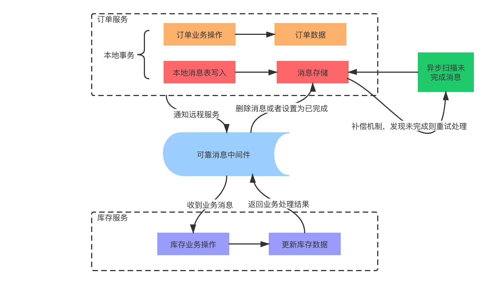
（1）系统收到下单请求，将订单业务数据存入到订单库中，并且同时存储该订单对应的消息数据，比如购买商品的 ID 和数量，消息数据与订单库为同一库，更新订单和存储消息为一个本地事务，要么都成功，要么都失败。
（2）库存服务通过消息中间件收到库存更新消息，调用库存服务进行业务操作，同时返回业务处理结果。
（3）消息生产方，也就是订单服务收到处理结果后，将本地消息表的数据删除或者设置为已完成。
（4）设置异步任务，定时去扫描本地消息表，发现有未完成的任务则重试，保证最终一致性。
以上就是基于本地消息表一致性的主流程，在具体实践中，还有许多分支情况，比如消息发送失败、下游业务方处理失败等，感兴趣的同学可以思考下。
不要求最终一致性的柔性事务
除了上述几种，还有一种不保证最终一致性的柔性事务，也称为尽最大努力通知，这种方式适合可以接受部分不一致的业务场景。
分布式事务有哪些开源组件
分布式事务开源组件应用比较广泛的是蚂蚁金服开源的 Seata，也就是 Fescar，前身是阿里中间件团队发布的 TXC（Taobao Transaction Constructor）和升级后的 GTS（Global Transaction Service）。
Seata 的设计思想是把一个分布式事务拆分成一个包含了若干分支事务（Branch Transaction）的全局事务（Global Transaction）。分支事务本身就是一个满足 ACID 的 本地事务，全局事务的职责是协调其下管辖的分支事务达成一致，要么一起成功提交，要么一起失败回滚。
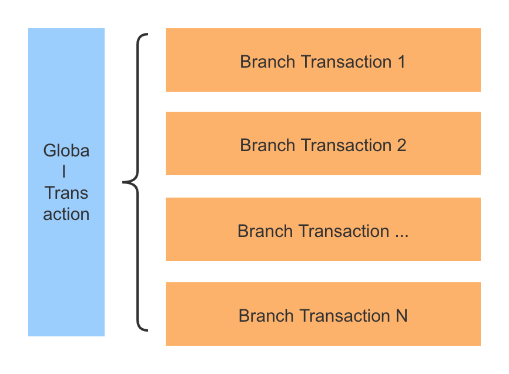 在 Seata 中，全局事务对分支事务的协调基于两阶段提交协议，类似数据库中的 XA 规范，XA 规范定义了三个组件来协调分布式事务，分别是 AP 应用程序、TM 事务管理器、RM 资源管理器、CRM 通信资源管理器。关于 XA 规范的详细内容，将会在后面的课时中介绍。
总结
掌握分布式事务是学习分布式系统的必经之路，今天介绍了分布式事务的概念，回顾了数据库事务和不同隔离级别，以及分布式事务产生的原因，最后介绍了分布式事务的几种解决方案。
对本节课程中没有扩展的知识点，比如 MySQL 的间隙锁，Seata 组件的具体应用等，感兴趣的同学可以找相关资料去学习。
08 对比两阶段提交，三阶段协议有哪些改进？
本课时我们来讨论两阶段提交和三阶段提交协议的过程以及应用。
在分布式系统中，各个节点之间在物理上相互独立，通过网络进行沟通和协调。在关系型数据库中，由于存在事务机制，可以保证每个独立节点上的数据操作满足 ACID。但是，相互独立的节点之间无法准确的知道其他节点中的事务执行情况，所以在分布式的场景下，如果不添加额外的机制，多个节点之间理论上无法达到一致的状态。
在分布式事务中，两阶段和三阶段提交是经典的一致性算法，那么两阶段和三阶段提交的具体流程是怎样的，三阶段提交又是如何改进的呢？
协调者统一调度
在分布式事务的定义中，如果想让分布式部署的多台机器中的数据保持一致性，那么就要保证在所有节点的数据写操作，要么全部都执行，要么全部都不执行。但是，一台机器在执行本地事务的时候无法知道其他机器中本地事务的执行结果，节点并不知道本次事务到底应该 Commit 还是 Rollback。
在前面介绍过的几种一致性算法中，都是通过一个 Leader 进程进行协调，在 2PC（两阶段）和 3PC（三阶段）中也是一样的解决办法。二阶段和三阶段提交协议都是引入了一个协调者的组件来统一调度所有分布式节点的执行，让当前节点知道其他节点的任务执行状态，通过通知和表决的方式，决定执行 Commit 还是 Rollback 操作。
二阶段提交协议
二阶段提交算法的成立是基于以下假设的：
- 在该分布式系统中，存在一个节点作为协调者（Coordinator），其他节点作为参与者（Participants），且节点之间可以进行网络通信；
- 所有节点都采用预写式日志，日志被写入后被保存在可靠的存储设备上，即使节点损坏也不会导致日志数据的丢失；
- 所有节点不会永久性损坏，即使损坏后仍然可以恢复。
两阶段提交中的两个阶段，指的是 Commit-request 阶段和 Commit 阶段，两阶段提交的流程如下：
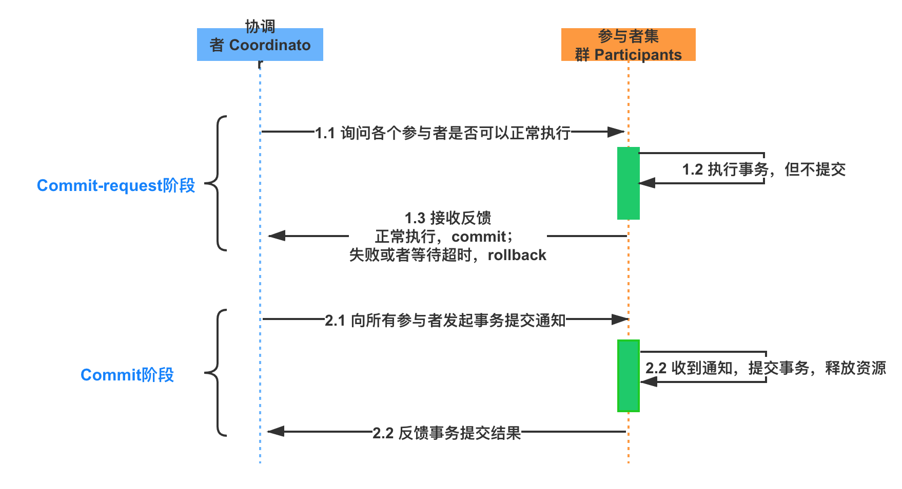
提交请求阶段
在提交请求阶段，协调者将通知事务参与者准备提交事务，然后进入表决过程。在表决过程中，参与者将告知协调者自己的决策：同意（事务参与者本地事务执行成功）或取消（本地事务执行故障），在第一阶段，参与节点并没有进行Commit操作。
提交阶段
在提交阶段，协调者将基于第一个阶段的投票结果进行决策：提交或取消这个事务。这个结果的处理和前面基于半数以上投票的一致性算法不同，必须当且仅当所有的参与者同意提交，协调者才会通知各个参与者提交事务，否则协调者将通知各个参与者取消事务。
参与者在接收到协调者发来的消息后将执行对应的操作，也就是本地 Commit 或者 Rollback。
两阶段提交存在的问题
两阶段提交协议有几个明显的问题，下面列举如下。
- 资源被同步阻塞
在执行过程中，所有参与节点都是事务独占状态，当参与者占有公共资源时，那么第三方节点访问公共资源会被阻塞。
- 协调者可能出现单点故障
一旦协调者发生故障，参与者会一直阻塞下去。
- 在 Commit 阶段出现数据不一致
在第二阶段中，假设协调者发出了事务 Commit 的通知，但是由于网络问题该通知仅被一部分参与者所收到并执行 Commit，其余的参与者没有收到通知，一直处于阻塞状态，那么，这段时间就产生了数据的不一致性。
三阶段提交协议
为了解决二阶段协议中的同步阻塞等问题，三阶段提交协议在协调者和参与者中都引入了超时机制，并且把两阶段提交协议的第一个阶段拆分成了两步：询问，然后再锁资源，最后真正提交。
三阶段中的 Three Phase 分别为 CanCommit、PreCommit、DoCommit 阶段。

CanCommit 阶段
3PC 的 CanCommit 阶段其实和 2PC 的准备阶段很像。协调者向参与者发送 Can-Commit 请求，参与者如果可以提交就返回 Yes 响应，否则返回 No 响应。
PreCommit 阶段
协调者根据参与者的反应情况来决定是否可以继续事务的 PreCommit 操作。根据响应情况，有以下两种可能。
A. 假如协调者从所有的参与者获得的反馈都是 Yes 响应，那么就会进行事务的预执行：
- 发送预提交请求，协调者向参与者发送 PreCommit 请求，并进入 Prepared 阶段；
- 事务预提交，参与者接收到 PreCommit 请求后，会执行事务操作；
- 响应反馈，如果参与者成功执行了事务操作，则返回 ACK 响应，同时开始等待最终指令。
B. 假如有任何一个参与者向协调者发送了 No 响应，或者等待超时之后，协调者都没有接到参与者的响应，那么就中断事务：
- 发送中断请求，协调者向所有参与者发送 abort 请求；
- 中断事务，参与者收到来自协调者的 abort 请求之后，执行事务的中断。
DoCommit 阶段
该阶段进行真正的事务提交，也可以分为以下两种情况。
A. 执行提交
- 发送提交请求。协调者接收到参与者发送的 ACK 响应后，那么它将从预提交状态进入到提交状态，并向所有参与者发送 doCommit 请求。
- 事务提交。参与者接收到 doCommit 请求之后，执行正式的事务提交，并在完成事务提交之后释放所有事务资源。
- 响应反馈。事务提交完之后，向协调者发送 ACK 响应。
- 完成事务。协调者接收到所有参与者的 ACK 响应之后，完成事务。
B. 中断事务 协调者没有接收到参与者发送的 ACK 响应，可能是因为接受者发送的不是 ACK 响应，也有可能响应超时了，那么就会执行中断事务。
C.超时提交 参与者如果没有收到协调者的通知，超时之后会执行 Commit 操作。
三阶段提交做了哪些改进
引入超时机制
在 2PC 中，只有协调者拥有超时机制，如果在一定时间内没有收到参与者的消息则默认失败，3PC 同时在协调者和参与者中都引入超时机制。
添加预提交阶段
在 2PC 的准备阶段和提交阶段之间，插入一个准备阶段，使 3PC 拥有 CanCommit、PreCommit、DoCommit 三个阶段，PreCommit 是一个缓冲，保证了在最后提交阶段之前各参与节点的状态是一致的。
三阶段提交协议存在的问题
三阶段提交协议同样存在问题，具体表现为，在阶段三中，如果参与者接收到了 PreCommit 消息后，出现了不能与协调者正常通信的问题，在这种情况下，参与者依然会进行事务的提交，这就出现了数据的不一致性。
两阶段和三阶段提交的应用
两阶段提交是一种比较精简的一致性算法/协议，很多关系型数据库都是采用两阶段提交协议来完成分布式事务处理的，典型的比如 MySQL 的 XA 规范。
在事务处理、数据库和计算机网络中，两阶段提交协议提供了分布式设计中的数据一致性的保障，整个事务的参与者要么一致性全部提交成功，要么全部回滚。MySQL Cluster 内部数据的同步就是用的 2PC 协议。
MySQL 的主从复制
在 MySQL 中，二进制日志是 server 层，主要用来做主从复制和即时点恢复时使用的；而事务日志（Redo Log）是 InnoDB 存储引擎层，用来保证事务安全的。
在数据库运行中，需要保证 Binlog 和 Redo Log 的一致性，如果顺序不一致， 则意味着 Master-Slave 可能不一致。
在开启 Binlog 后，如何保证 Binlog 和 InnoDB redo 日志的一致性呢？MySQL 使用的就是二阶段提交，内部会自动将普通事务当做一个 XA 事务（内部分布式事务）来处理：
- Commit 会被自动的分成 Prepare 和 Commit 两个阶段；
- Binlog 会被当做事务协调者（Transaction Coordinator），Binlog Event 会被当做协调者日志。
关于 XA 规范的具体实现，会在后面的课时中分享。
总结
两阶段和三阶段提交协议是众多分布式算法的基础，这一课时介绍了两阶段提交和三阶段提交的具体流程，两种协议的区别，以及两阶段提交在 MySQL 主从复制中的应用。
09 MySQL 数据库如何实现 XA 规范？
本课时我们来讨论 MySQL 的 XA 规范有哪些应用相关的内容。
MySQL 为我们提供了分布式事务解决方案，在前面的内容中提到过 binlog 的同步，其实是 MySQL XA 规范的一个应用，那么 XA 规范是如何定义的，具体又是如何应用的呢？
今天我们一起来看一下 XA 规范相关的内容。
MySQL 有哪些一致性日志
问你一个问题，如果 MySQL 数据库断电了，未提交的事务怎么办？
答案是依靠日志，因为在执行一个操作之前，数据库会首先把这个操作的内容写入到文件系统日志里记录起来，然后再进行操作。当宕机或者断电的时候，即使操作并没有执行完，但是日志在操作前就已经写好了，我们仍然可以根据日志的内容来进行恢复。
MySQL InnoDB 引擎中和一致性相关的有重做日志（redo log）、回滚日志（undo log）和二进制日志（binlog）。
redo 日志，每当有操作执行前，在数据真正更改前，会先把相关操作写入 redo 日志。这样当断电，或者发生一些意外，导致后续任务无法完成时，待系统恢复后，可以继续完成这些更改。
和 redo 日志对应的 undo 日志，也叫撤消日志，记录事务开始前数据的状态，当一些更改在执行一半时，发生意外而无法完成，就可以根据撤消日志恢复到更改之前的状态。举个例子，事务 T1 更新数据 X，对 X 执行 Update 操作，从 10 更新到 20，对应的 Redo 日志为 <T1, X, 20>，Undo 日志为 <T1, X, 10>。
binlog 日志是 MySQL sever 层维护的一种二进制日志，是 MySQL 最重要的日志之一，它记录了所有的 DDL 和 DML 语句，除了数据查询语句 select、show 等，还包含语句所执行的消耗时间。
binlog 与 InnoDB 引擎中的 redo/undo log 不同，binlog 的主要目的是复制和恢复，用来记录对 MySQL 数据更新或潜在发生更新的 SQL 语句，并以事务日志的形式保存在磁盘中。binlog 主要应用在 MySQL 的主从复制过程中，MySQL 集群在 Master 端开启 binlog，Master 把它的二进制日志传递给 slaves 节点，再从节点回放来达到 master-slave 数据一致的目的。
你可以连接到 MySQL 服务器，使用下面的命令查看真实的 binlog 数据：
//查看binlog文件的内容
show binlog events;
//查看指定binlog文件的内容
show binlog events in 'MySQL-bin.000001';
//查看正在写入的binlog文件
show master status\G
//获取binlog文件列表
show binary logs;
XA 规范是如何定义的
XA 是由 X/Open 组织提出的分布式事务规范，XA 规范主要定义了事务协调者（Transaction Manager）和资源管理器（Resource Manager）之间的接口。

事务协调者（Transaction Manager），因为 XA 事务是基于两阶段提交协议的，所以需要有一个协调者，来保证所有的事务参与者都完成了准备工作，也就是 2PC 的第一阶段。如果事务协调者收到所有参与者都准备好的消息，就会通知所有的事务都可以提交，也就是 2PC 的第二阶段。
在前面的内容中我们提到过，之所以需要引入事务协调者，是因为在分布式系统中，两台机器理论上无法达到一致的状态，需要引入一个单点进行协调。协调者，也就是事务管理器控制着全局事务，管理事务生命周期，并协调资源。
资源管理器（Resource Manager），负责控制和管理实际资源，比如数据库或 JMS 队列。
目前，主流数据库都提供了对 XA 的支持，在 JMS 规范中，即 Java 消息服务（Java Message Service）中，也基于 XA 定义了对事务的支持。
XA 事务的执行流程
XA 事务是两阶段提交的一种实现方式，根据 2PC 的规范，XA 将一次事务分割成了两个阶段，即 Prepare 和 Commit 阶段。
Prepare 阶段，TM 向所有 RM 发送 prepare 指令，RM 接受到指令后，执行数据修改和日志记录等操作，然后返回可以提交或者不提交的消息给 TM。如果事务协调者 TM 收到所有参与者都准备好的消息，会通知所有的事务提交，然后进入第二阶段。
Commit 阶段，TM 接受到所有 RM 的 prepare 结果，如果有 RM 返回是不可提交或者超时，那么向所有 RM 发送 Rollback 命令；如果所有 RM 都返回可以提交，那么向所有 RM 发送 Commit 命令，完成一次事务操作。
MySQL 如何实现 XA 规范
MySQL 中 XA 事务有两种情况，内部 XA 和外部 XA，其区别是事务发生在 MySQL 服务器单机上，还是发生在多个外部节点间上。
内部 XA
在 MySQL 的 InnoDB 存储引擎中，开启 binlog 的情况下，MySQL 会同时维护 binlog 日志与 InnoDB 的 redo log，为了保证这两个日志的一致性，MySQL 使用了 XA 事务，由于是在 MySQL 单机上工作，所以被称为内部 XA。
内部 XA 事务由 binlog 作为协调者，在事务提交时，则需要将提交信息写入二进制日志，也就是说，binlog 的参与者是 MySQL 本身。
外部 XA
外部 XA 就是典型的分布式事务，MySQL 支持 XA START/END/PREPARE/Commit 这些 SQL 语句，通过使用这些命令，可以完成分布式事务。
你也可以查看 MySQL 官方文档，了解更多的 XA 命令。
MySQL 外部 XA 主要应用在数据库代理层，实现对 MySQL 数据库的分布式事务支持，例如开源的数据库中间层，比如淘宝的 TDDL、阿里巴巴 B2B 的 Cobar 等。外部 XA 一般是针对跨多 MySQL 实例的分布式事务，需要应用层作为协调者，比如我们在写业务代码，在代码中决定提交还是回滚，并且在崩溃时进行恢复。
Binlog 中的 Xid
当事务提交时，在 binlog 依赖的内部 XA 中，额外添加了 Xid 结构，binlog 有多种数据类型，包括以下三种：
- statement 格式，记录为基本语句，包含 Commit
- row 格式，记录为基于行
- mixed 格式，日志记录使用混合格式
不论是 statement 还是 row 格式，binlog 都会添加一个 XID_EVENT 作为事务的结束，该事件记录了事务的 ID 也就是 Xid，在 MySQL 进行崩溃恢复时根据 binlog 中提交的情况来决定如何恢复。
Binlog 同步过程
下面来看看 Binlog 下的事务提交过程，整体过程是先写 redo log，再写 binlog，并以 binlog 写成功为事务提交成功的标志。

当有事务提交时：
- 第一步，InnoDB 进入 Prepare 阶段，并且 write/sync redo log，写 redo log，将事务的 XID 写入到 redo 日志中，binlog 不作任何操作；
- 第二步，进行 write/sync Binlog，写 binlog 日志，也会把 XID 写入到 Binlog；
- 第三步，调用 InnoDB 引擎的 Commit 完成事务的提交，将 Commit 信息写入到 redo 日志中。
如果是在第一步和第二步失败，则整个事务回滚；如果是在第三步失败，则 MySQL 在重启后会检查 XID 是否已经提交，若没有提交，也就是事务需要重新执行，就会在存储引擎中再执行一次提交操作，保障 redo log 和 binlog 数据的一致性，防止数据丢失。
在实际执行中，还牵扯到操作系统缓存 Buffer 何时同步到文件系统中，所以 MySQL 支持用户自定义在 Commit 时如何将 log buffer 中的日志刷到 log file 中，通过变量 innodb_flush_log_at_trx_Commit 的值来决定。在 log buffer 中的内容称为脏日志，感兴趣的话可以查询资料了解下。
总结
这一课时介绍了 MySQL 一致性相关的几种日志，并分享了 MySQL 的 XA 规范相关内容，以及内外部 XA 事务如何实现。
10 如何在业务中体现 TCC 事务模型？
在分布式系统设计中，随着微服务的流行，通常一个业务操作被拆分为多个子任务，比如电商系统的下单和支付操作，就涉及到了创建和更新订单、扣减账户余额、扣减库存、发送物流消息等，那么在复杂业务开发中，如何保证最终数据一致性呢？
TCC 事务模型是什么
TCC（Try-Confirm-Cancel）的概念来源于 Pat Helland 发表的一篇名为“Life beyond Distributed Transactions:an Apostate’s Opinion”的论文。
TCC 提出了一种新的事务模型，基于业务层面的事务定义，锁粒度完全由业务自己控制，目的是解决复杂业务中，跨表跨库等大颗粒度资源锁定的问题。TCC 把事务运行过程分成 Try、Confirm / Cancel 两个阶段，每个阶段的逻辑由业务代码控制，避免了长事务，可以获取更高的性能。
TCC 的各个阶段
TCC 的具体流程如下图所示：

Try 阶段：调用 Try 接口，尝试执行业务，完成所有业务检查，预留业务资源。
Confirm 或 Cancel 阶段：两者是互斥的，只能进入其中一个，并且都满足幂等性，允许失败重试。
- Confirm 操作：对业务系统做确认提交，确认执行业务操作，不做其他业务检查，只使用 Try 阶段预留的业务资源。
- Cancel 操作：在业务执行错误，需要回滚的状态下执行业务取消，释放预留资源。
Try 阶段失败可以 Cancel，如果 Confirm 和 Cancel 阶段失败了怎么办？
TCC 中会添加事务日志，如果 Confirm 或者 Cancel 阶段出错，则会进行重试，所以这两个阶段需要支持幂等；如果重试失败，则需要人工介入进行恢复和处理等。
应用 TCC 的优缺点
实际开发中，TCC 的本质是把数据库的二阶段提交上升到微服务来实现，从而避免数据库二阶段中长事务引起的低性能风险。
所以说，TCC 解决了跨服务的业务操作原子性问题，比如下订单减库存，多渠道组合支付等场景，通过 TCC 对业务进行拆解，可以让应用自己定义数据库操作的粒度，可以降低锁冲突，提高系统的业务吞吐量。
TCC 的不足主要体现在对微服务的侵入性强，TCC 需要对业务系统进行改造，业务逻辑的每个分支都需要实现 try、Confirm、Cancel 三个操作，并且 Confirm、Cancel 必须保证幂等。
另外 TCC 的事务管理器要记录事务日志，也会损耗一定的性能。
从真实业务场景分析 TCC
下面以一个电商中的支付业务来演示，用户在支付以后，需要进行更新订单状态、扣减账户余额、增加账户积分和扣减商品操作。
在实际业务中为了防止超卖，有下单减库存和付款减库存的区别，支付除了账户余额，还有各种第三方支付等，这里我们为了描述方便，统一使用扣款减库存，扣款来源是用户账户余额。
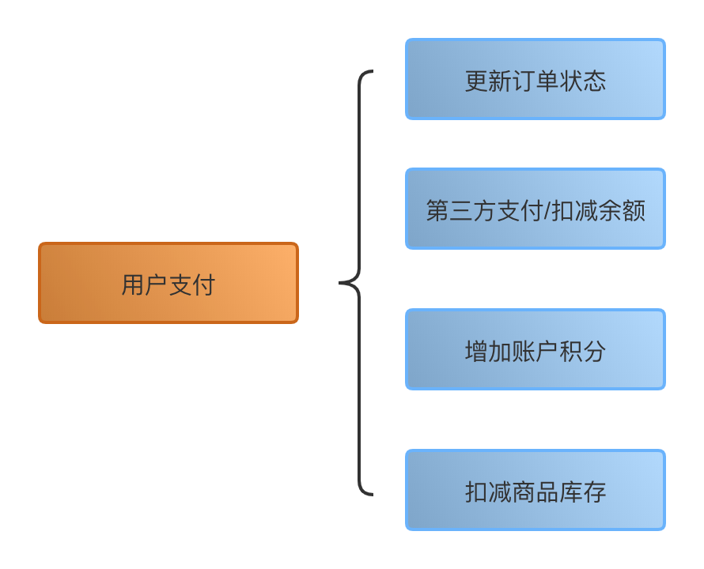
业务逻辑拆解
我们把订单业务拆解为以下几个步骤：
- 订单更新为支付完成状态
- 扣减用户账户余额
- 增加用户账户积分
- 扣减当前商品的库存
如果不使用事务，上面的几个步骤都可能出现失败，最终会造成大量的数据不一致，比如订单状态更新失败，扣款却成功了；或者扣款失败，库存却扣减了等情况，这个在业务上是不能接受的，会出现大量的客诉。
如果直接应用事务，不使用分布式事务，比如在代码中添加 Spring 的声明式事务 @Transactional 注解，这样做实际上是在事务中嵌套了远程服务调用，一旦服务调用出现超时，事务无法提交，就会导致数据库连接被占用，出现大量的阻塞和失败，会导致服务宕机。另一方面，如果没有定义额外的回滚操作，比如遇到异常，非 DB 的服务调用失败时，则无法正确执行回滚。
业务系统改造
下面应用 TCC 事务，需要对业务代码改造，抽象 Try、Confirm 和 Cancel 阶段。
- Try 操作
Try 操作一般都是锁定某个资源，设置一个预备的状态，冻结部分数据。比如，订单服务添加一个预备状态，修改为 UPDATING，也就是更新中的意思，冻结当前订单的操作，而不是直接修改为支付成功。
库存服务设置冻结库存，可以扩展字段，也可以额外添加新的库存冻结表。积分服务和库存一样，添加一个预增加积分，比如本次订单积分是 100，添加一个额外的存储表示等待增加的积分，账户余额服务等也是一样的操作。
- Confirm 操作
Confirm 操作就是把前边的 Try 操作锁定的资源提交，类比数据库事务中的 Commit 操作。在支付的场景中，包括订单状态从准备中更新为支付成功；库存数据扣减冻结库存，积分数据增加预增加积分。
- Cancel 操作
Cancel 操作执行的是业务上的回滚处理，类比数据库事务中的 Rollback 操作。首先订单服务，撤销预备状态，还原为待支付状态或者已取消状态，库存服务删除冻结库存，添加到可销售库存中，积分服务也是一样，将预增加积分扣减掉。
执行业务操作
下面来分析业务的实际执行操作，首先业务请求过来，开始执行 Try 操作，如果 TCC 分布式事务框架感知到各个服务的 Try 阶段都成功了以后，就会执行各个服务的 Confirm 逻辑。
如果 Try 阶段有操作不能正确执行，比如订单失效、库存不足等，就会执行 Cancel 的逻辑，取消事务提交。
TCC 对比 2PC 两阶段提交
TCC 事务模型的思想类似 2PC 提交，下面对比 TCC 和基于 2PC 事务 XA 规范对比。
对比 2PC 提交
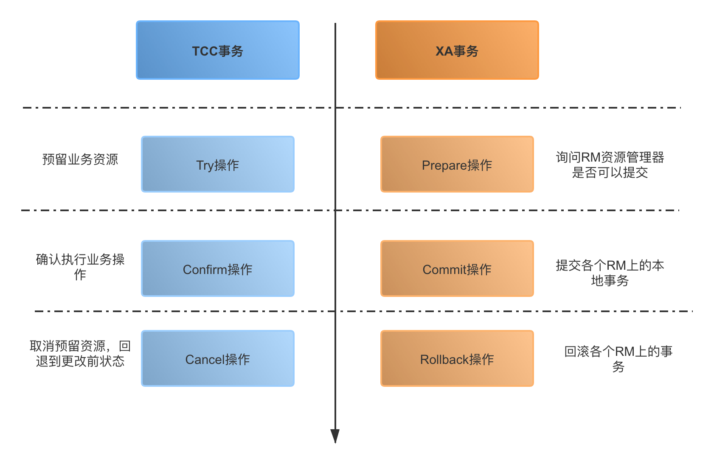
- 第一阶段
在 XA 事务中，各个 RM 准备提交各自的事务分支，事实上就是准备提交资源的更新操作（insert、delete、update 等）；而在 TCC 中，是主业务操作请求各个子业务服务预留资源。
- 第二阶段
XA 事务根据第一阶段每个 RM 是否都 prepare 成功，判断是要提交还是回滚。如果都 prepare 成功，那么就 commit 每个事务分支，反之则 rollback 每个事务分支。
在 TCC 中，如果在第一阶段所有业务资源都预留成功，那么进入 Confirm 步骤，提交各个子业务服务，完成实际的业务处理，否则进入 Cancel 步骤，取消资源预留请求。
与 2PC/XA 两阶段提交的区别
- 2PC/XA 是数据库或者存储资源层面的事务，实现的是强一致性，在两阶段提交的整个过程中，一直会持有数据库的锁。
- TCC 关注业务层的正确提交和回滚，在 Try 阶段不涉及加锁，是业务层的分布式事务，关注最终一致性，不会一直持有各个业务资源的锁。
TCC 的核心思想是针对每个业务操作，都要添加一个与其对应的确认和补偿操作，同时把相关的处理，从数据库转移到业务中，以此实现跨数据库的事务。
TCC 分布式服务组件
在业务中引入 TCC 一般是依赖单独的 TCC 事务框架，可以选择自研或者应用开源组件。TCC 框架扮演了资源管理器的角色，常用的 TCC 开源组件有 Tcc-transaction、ByteTCC、Spring-cloud-rest-tcc 等。
前面介绍过的 Seata，可以选择 TCC 事务模式，也支持了 AT 模式及 Saga 模式。
以 Tcc-transaction 为例，源码托管在 Github-tcc-transaction，提供了对 Spring 和 Dubbo 的适配，感兴趣的话可以查看 tcc-transaction-tutorial-sample 学习。

总结
这一课时介绍了 TCC 分布式事务模型的应用，通过一个实际例子分析了如何应用 TCC 对业务系统进行改造，并且对比了 TCC 和 2PC 两阶段提交，以及 TCC 相关的开源组件。
11 分布式锁有哪些应用场景和实现？
电商网站都会遇到秒杀、特价之类的活动，大促活动有一个共同特点就是访问量激增，在高并发下会出现成千上万人抢购一个商品的场景。虽然在系统设计时会通过限流、异步、排队等方式优化，但整体的并发还是平时的数倍以上，参加活动的商品一般都是限量库存，如何防止库存超卖，避免并发问题呢？分布式锁就是一个解决方案。
如何理解分布式锁
我们都知道，在业务开发中，为了保证在多线程下处理共享数据的安全性，需要保证同一时刻只有一个线程能处理共享数据。
Java 语言给我们提供了线程锁，开放了处理锁机制的 API，比如 Synchronized、Lock 等。当一个锁被某个线程持有的时候，另一个线程尝试去获取这个锁会失败或者阻塞，直到持有锁的线程释放了该锁。
在单台服务器内部，可以通过线程加锁的方式来同步，避免并发问题，那么在分布式场景下呢？

分布式场景下解决并发问题，需要应用分布式锁技术。如上图所示，分布式锁的目的是保证在分布式部署的应用集群中，多个服务在请求同一个方法或者同一个业务操作的情况下，对应业务逻辑只能被一台机器上的一个线程执行，避免出现并发问题。
分布式锁的常用实现
实现分布式锁目前有三种流行方案，即基于数据库、Redis、ZooKeeper 的方案。
基于关系型数据库
基于关系型数据库实现分布式锁，是依赖数据库的唯一性来实现资源锁定，比如主键和唯一索引等。
以唯一索引为例，创建一张锁表，定义方法或者资源名、失效时间等字段，同时针对加锁的信息添加唯一索引，比如方法名，当要锁住某个方法或资源时，就在该表中插入对应方法的一条记录，插入成功表示获取了锁，想要释放锁的时候就删除这条记录。
下面创建一张基于数据库的分布式锁表：
CREATE TABLE `methodLock` (
`id` int(11) NOT NULL AUTO_INCREMENT COMMENT '主键',
`method_name` varchar(64) NOT NULL DEFAULT '' COMMENT '锁定的方法或者资源',
PRIMARY KEY (`id`),
UNIQUE KEY `uidx_method_name` (`method_name `) USING BTREE
) ENGINE=InnoDB DEFAULT CHARSET=utf8 COMMENT='对方法加锁';
当希望对某个方法加锁时，执行以下 SQL 语句：
insert into methodLock(method_name) values ('method_name');
在数据表定义中，我们对 method_name 做了唯一性约束，如果有多个请求同时提交到数据库的话，数据库会保证只有一个操作可以成功，那么就可以认为操作成功的那个线程获得了该方法的锁，可以执行后面的业务逻辑。
当方法执行完毕之后，想要释放锁的话，在数据库中删除对应的记录即可。
基于数据库实现分布式锁操作简单，但是并不是一个可以落地的方案，有很多地方需要优化。
存在单点故障风险
数据库实现方式强依赖数据库的可用性，一旦数据库挂掉，则会导致业务系统不可用，为了解决这个问题，需要配置数据库主从机器，防止单点故障。
超时无法失效
如果一旦解锁操作失败，则会导致锁记录一直在数据库中，其他线程无法再获得锁，解决这个问题，可以添加独立的定时任务，通过时间戳对比等方式，删除超时数据。
不可重入
可重入性是锁的一个重要特性，以 Java 语言为例，常见的 Synchronize、Lock 等都支持可重入。在数据库实现方式中，同一个线程在没有释放锁之前无法再次获得该锁，因为数据已经存在，再次插入会失败。实现可重入，需要改造加锁方法，额外存储和判断线程信息，不阻塞获得锁的线程再次请求加锁。
无法实现阻塞
其他线程在请求对应方法时，插入数据失败会直接返回，不会阻塞线程，如果需要阻塞其他线程，需要不断的重试 insert 操作，直到数据插入成功，这个操作是服务器和数据库资源的极大浪费。
可以看到，借助数据库实现一个完备的分布式锁，存在很多问题，并且读写数据库需要一定的性能，可能会影响业务执行的耗时。
下面我们来看下应用缓存如何实现。
应用 Redis 缓存
相比基于数据库实现分布式锁，缓存的性能更好，并且各种缓存组件也提供了多种集群方案，可以解决单点问题。
常见的开源缓存组件都支持分布式锁，包括 Redis、Memcached 及 Tair。以常见的 Redis 为例，应用 Redis 实现分布式锁，最直接的想法是利用 setnx 和 expire 命令实现加锁。
在 Redis 中，setnx 是「set if not exists」如果不存在，则 SET 的意思，当一个线程执行 setnx 返回 1，说明 key 不存在，该线程获得锁；当一个线程执行 setnx 返回 0，说明 key 已经存在，那么获取锁失败，expire 就是给锁加一个过期时间。
伪代码如下：
if(setnx(key,value)==1){
expire(key,expireTime)
try{
//业务处理
}finally{
//释放锁
del(key)
}
}
使用 setnx 和 expire 有一个问题，这两条命令可能不会同时失败，不具备原子性，如果一个线程在执行完 setnx 之后突然崩溃，导致锁没有设置过期时间，那么这个锁就会一直存在，无法被其他线程获取。
为了解决这个问题，在 Redis 2.8 版本中，添加了 SETEX 命令，SETEX 支持 setnx 和 expire 指令组合的原子操作，解决了加锁过程中失败的问题。
添加 SETEX 命令， 就是一个完善的分布式锁吗？在下一课时的内容中我会详细分享。
基于 ZooKeeper 实现
ZooKeeper 有四种节点类型，包括持久节点、持久顺序节点、临时节点和临时顺序节点，利用 ZooKeeper 支持临时顺序节点的特性，可以实现分布式锁。
当客户端对某个方法加锁时，在 ZooKeeper 中该方法对应的指定节点目录下，生成一个唯一的临时有序节点。

判断是否获取锁，只需要判断持有的节点是否是有序节点中序号最小的一个，当释放锁的时候，将这个临时节点删除即可，这种方式可以避免服务宕机导致的锁无法释放而产生的死锁问题。
下面描述使用 ZooKeeper 实现分布式锁的算法流程，根节点为 /lock：
- 客户端连接 ZooKeeper，并在 /lock 下创建临时有序子节点，第一个客户端对应的子节点为 /lock/lock01/00000001，第二个为 /lock/lock01/00000002；
- 其他客户端获取 /lock01 下的子节点列表，判断自己创建的子节点是否为当前列表中序号最小的子节点；
- 如果是则认为获得锁，执行业务代码，否则通过 watch 事件监听 /lock01 的子节点变更消息，获得变更通知后重复此步骤直至获得锁；
- 完成业务流程后，删除对应的子节点，释放分布式锁。
在实际开发中，可以应用 Apache Curator 来快速实现分布式锁，Curator 是 Netflix 公司开源的一个 ZooKeeper 客户端，对 ZooKeeper 原生 API 做了抽象和封装，若感兴趣可自行查询资料了解。
总结
这一课时分享了分布式锁的应用场景和几种实现，包括分布式锁的概念，使用数据库方式、缓存和 ZooKeeper 实现分布式锁等。
12 如何使用 Redis 快速实现分布式锁？
本课时我们来讨论如何使用 Redis 快速实现分布式锁。
分布式锁有很多种解决方案，前面简单介绍过，Redis 可以通过 set key 方式来实现分布式锁，但实际情况要更加复杂，比如如何确保临界资源的串行执行，如何及时释放，都是需要额外考虑的。
今天这一课时要讲的是一个完备的分布式锁应该具备哪些特性，以及如何使用 Redis 来一步步优化实现。 分布式锁需要具有哪些特点 先来看一下，一个完备的分布式锁，需要支持哪些特性？

一般来说，生产环境可用的分布式锁需要满足以下几点：
- 互斥性，互斥是锁的基本特征，同一时刻只能有一个线程持有锁，执行临界操作；
- 超时释放，超时释放是锁的另一个必备特性，可以对比 MySQL InnoDB 引擎中的 innodb_lock_wait_timeout 配置，通过超时释放，防止不必要的线程等待和资源浪费；
- 可重入性，在分布式环境下，同一个节点上的同一个线程如果获取了锁之后，再次请求还是可以成功；
- 高性能和高可用，加锁和解锁的开销要尽可能的小，同时也需要保证高可用，防止分布式锁失效；
- 支持阻塞和非阻塞性，对比 Java 语言中的 wait() 和 notify() 等操作，这个一般是在业务代码中实现，比如在获取锁时通过 while(true) 或者轮询来实现阻塞操作。
可以看到，实现一个相对完备的分布式锁，并不是锁住资源就可以了，还需要满足一些额外的特性，否则会在业务开发中出现各种各样的问题。
下面我们以 Redis 实现分布式锁为例，看一下如何优化分布式锁的具体实现。
使用 setnx 实现分布式锁
Redis 支持 setnx 指令，只在 key 不存在的情况下，将 key 的值设置为 value，若 key 已经存在，则 setnx 命令不做任何动作。使用 setnx 实现分布式锁的方案，获取锁的方法很简单，只要以该锁为 key，设置一个随机的值即可。如果 setnx 返回 1，则说明该进程获得锁；如果 setnx 返回 0，则说明其他进程已经获得了锁，进程不能进入临界区；如果需要阻塞当前进程，可以在一个循环中不断尝试 setnx 操作。
if(setnx(key,value)==1){
try{
//业务处理
}finally{
//释放锁
del(key)
}
}
释放锁时只要删除对应的 key 就可以，为了防止系统业务进程出现异常导致锁无法释放，使用 Java 中的 try-catch-finally 来完成锁的释放。
对比一下上面说的分布式锁特性，使用这种方式实现分布式锁的问题很明显：不支持超时释放锁，如果进程在加锁后宕机，则会导致锁无法删除，其他进程无法获得锁。
使用 setnx 和 expire 实现
在分布式锁的实现中，依赖业务线程进行锁的释放，如果进程宕机，那么就会出现死锁。Redis 在设置一个 key 时，支持设置过期时间，利用这一点，可以在缓存中实现锁的超时释放，解决死锁问题。
在使用 setnx 获取锁之后，通过 expire 给锁加一个过期时间，利用 Redis 的缓存失效策略，进行锁的超时清除。
伪代码如下：
if(setnx(key,value)==1){
expire(key,expireTime)
try{
//业务处理
}finally{
//释放锁
del(key)
}
}
通过设置过期时间，避免了占锁到释放锁的过程发生异常而导致锁无法释放的问题，但是在 Redis 中，setnx 和 expire 这两条命令不具备原子性。如果一个线程在执行完 setnx 之后突然崩溃，导致锁没有设置过期时间，那么这个锁就会一直存在，无法被其他线程获取。
使用 set 扩展命令实现
为了解决这个问题，在 Redis 2.8 版本中，扩展了 set 命令，支持 set 和 expire 指令组合的原子操作，解决了加锁过程中失败的问题。
set 扩展参数的语法如下：
redis> SET key value expireTime nx
nx 表示仅在键不存在时设置，这样可以在同一时间内完成设置值和设置过期时间这两个操作，防止设置过期时间异常导致的死锁。那么这种方式还存在问题吗？
使用 setex 方式看起来解决了锁超时的问题，但在实际业务中，如果对超时时间设置不合理，存在这样一种可能：在加锁和释放锁之间的业务逻辑执行的太长，以至于超出了锁的超时限制，缓存将对应 key 删除，其他线程可以获取锁，出现对加锁资源的并发操作。
我们来模拟下这种情况：
- 客户端 A 获取锁的时候设置了 key 的过期时间为 2 秒，客户端 A 在获取到锁之后，业务逻辑方法执行了 3 秒；
- 客户端 A 获取的锁被 Redis 过期机制自动释放，客户端 B 请求锁成功，出现并发执行；
- 客户端 A 执行完业务逻辑后，释放锁，删除对应的 key；
- 对应锁已经被客户端 B 获取到了，客户端A释放的锁实际是客户端B持有的锁。
可以看到，第一个线程的逻辑还没执行完，第二个线程也成功获得了锁，加锁的代码或者资源并没有得到严格的串行操作，同时由于叠加了删除和释放锁操作，导致了加锁的混乱。
如何避免这个问题呢？首先，基于 Redis 的分布式锁一般是用于耗时比较短的瞬时性任务，业务上超时的可能性较小；其次，在获取锁时，可以设置 value 为一个随机数，在释放锁时进行读取和对比，确保释放的是当前线程持有的锁，一般是通过 Redis 结合 Lua 脚本的方案实现；最后，需要添加完备的日志，记录上下游数据链路，当出现超时，则需要检查对应的问题数据，并且进行人工修复。
分布式锁的高可用
上面分布式锁的实现方案中，都是针对单节点 Redis 而言的，在生产环境中，为了保证高可用，避免单点故障，通常会使用 Redis 集群。
集群下分布式锁存在哪些问题
集群环境下，Redis 通过主从复制来实现数据同步，Redis 的主从复制（Replication）是异步的，所以单节点下可用的方案在集群的环境中可能会出现问题，在故障转移（Failover） 过程中丧失锁的安全性。
由于 Redis 集群数据同步是异步的，假设 Master 节点获取到锁后在未完成数据同步的情况下，发生节点崩溃，此时在其他节点依然可以获取到锁，出现多个客户端同时获取到锁的情况。
我们模拟下这个场景，按照下面的顺序执行：
- 客户端 A 从 Master 节点获取锁；
- Master 节点宕机，主从复制过程中，对应锁的 key 还没有同步到 Slave 节点上；
- Slave 升级为 Master 节点，于是集群丢失了锁数据；
- 其他客户端请求新的 Master 节点，获取到了对应同一个资源的锁；
- 出现多个客户端同时持有同一个资源的锁，不满足锁的互斥性。
可以看到，单实例场景和集群环境实现分布式锁是不同的，关于集群下如何实现分布式锁，Redis 的作者 Antirez（Salvatore Sanfilippo）提出了 Redlock 算法，我们一起看一下。
Redlock 算法的流程
Redlock 算法是在单 Redis 节点基础上引入的高可用模式，Redlock 基于 N 个完全独立的 Redis 节点，一般是大于 3 的奇数个（通常情况下 N 可以设置为 5），可以基本保证集群内各个节点不会同时宕机。
假设当前集群有 5 个节点，运行 Redlock 算法的客户端依次执行下面各个步骤，来完成获取锁的操作：
- 客户端记录当前系统时间，以毫秒为单位；
- 依次尝试从 5 个 Redis 实例中，使用相同的 key 获取锁，当向 Redis 请求获取锁时，客户端应该设置一个网络连接和响应超时时间，超时时间应该小于锁的失效时间，避免因为网络故障出现的问题；
- 客户端使用当前时间减去开始获取锁时间就得到了获取锁使用的时间，当且仅当从半数以上的 Redis 节点获取到锁，并且当使用的时间小于锁失效时间时，锁才算获取成功；
- 如果获取到了锁，key 的真正有效时间等于有效时间减去获取锁所使用的时间，减少超时的几率；
- 如果获取锁失败，客户端应该在所有的 Redis 实例上进行解锁，即使是上一步操作请求失败的节点，防止因为服务端响应消息丢失，但是实际数据添加成功导致的不一致。
在 Redis 官方推荐的 Java 客户端 Redisson 中，内置了对 RedLock 的实现。下面是官方网站的链接，感兴趣的同学可以去了解一下： redis-distlock redisson-wiki
分布式系统设计是实现复杂性和收益的平衡，考虑到集群环境下的一致性问题，也要避免过度设计。在实际业务中，一般使用基于单点的 Redis 实现分布式锁就可以，出现数据不一致，通过人工手段去回补。
总结
今天分享了如何使用 Redis 来逐步优化分布式锁实现的相关内容，包括一个完备的分布式锁应该支持哪些特性，使用 Redis 实现分布式锁的几种不同方式，最后简单介绍了一下 Redis 集群下的 RedLock 算法。
14 如何理解 RPC 远程服务调用？
本课时主要讲解 RPC 远程服务调用相关的知识。
RPC 远程服务调用是分布式服务架构的基础，无论微服务设计上层如何发展，讨论服务治理都绕不开远程服务调用，那么如何理解 RPC、有哪些常见的 RPC 框架、实现一款 RPC 框架需要哪些技术呢？
如何理解 RPC
RPC（Remote Procedure Call）是一种进程间通信方式，百科给出的定义是这样的：“RPC（远程过程调用协议），它是一种通过网络从远程计算机程序上请求服务，而不需要了解底层网络技术的协议”。
RPC 允许程序调用另一个地址空间的过程或函数，而不用程序员显式编码这个远程调用的细节。即无论是调用本地接口/服务的还是远程的接口/服务，本质上编写的调用代码基本相同。
比如两台服务器 A、B，一个应用部署在 A 服务器上，想要调用 B 服务器上应用提供的函数或者方法，由于不在一个内存空间，则不能直接调用，这时候就可以应用 RPC 框架的实现来解决。
RPC 如何实现
早期的远程服务调用一般是通过 RMI 或 Hessian 等工具实现，以 Java RMI 为例，RMI 是 Java 语言中 RPC 的一种实现方式。
Java RMI（Java 远程方法调用，Java Remote Method Invocation）是 Java 编程语言里，一种用于实现远程过程调用的应用程序编程接口。应用 Java RMI，可以让某个 Java 虚拟机上的对象调用另一个 Java 虚拟机中的对象上的方法。
Java RMI 实现主要依赖 java.rmi 包下面的工具类，具体流程包括继承 Remote 实现远程接口，开发业务逻辑，创建 Server 并且注册远程对象，客户端创建 Client 调用远程方法等。关于 RMI 的实现细节，由于实际开发中很少应用，这里不展开讲解了。
以 Java RMI 为代表的的早期 RPC 实现起来比较繁琐，需要在代码中直接编码地址，并且不支持服务治理，比如无法对服务调用进行统计、无法梳理服务依赖情况、无法保证服务上下线时的稳定性等。随着分布式系统规模的增长，传统方式已经无法满足开发需求，于是诞生了一系列的 RPC 服务框架。
RPC 框架代表
开源社区里有许多优秀的 RPC 框架，比如常用的 Dubbo、Thrift、gRPC 等，下面简单介绍一下这几款组件。
Apache Dubbo
Dubbo 是阿里巴巴公司开源的一个高性能 Java 分布式服务框架，目前已经成为 Apache 顶级项目。Dubbo 可以通过高性能的 RPC 实现服务的输出和输入，支持服务治理，提供了控制台界面，可以独立应用，也可以和 Spring 框架无缝集成。
Dubbo 在设计中采用了微内核架构，基于对 Java SPI 机制的扩展实现，Dubbo 对分布式服务调用核心功能都开放了扩展点，包括服务调用的负载均衡策略、序列化协议、传输协议等，使用者都可以添加自定义实现。
Dubbo 在国内曾经拥有很高的人气，是微服务架构的首选，后来随着 Spring Cloud 的流行，社区一度停更，外部用户发布了 DubboX 等升级版本。最近，Dubbo 社区又重新活跃，更新后的 Dubbo 也发布了 3.0 预览版等，并且宣布会在未来的版本中支持更多特性，值得期待。
Google 的 gRPC
gRPC 是 Google 开发的高性能、通用的开源 RPC 框架，gRPC 使用 ProtoBuf 来定义服务，ProtoBuf 是 Google 开发的一种数据序列化协议，性能比较高，压缩和传输效率高，语法也比较简单。另外，gRPC 支持多种语言，并能够基于语言自动生成客户端和服务端功能库。
Apache Thrift
Thrift 起源于 Facebook，和 Dubbo 一样，后来被提交 Apache 基金会将 Thrift 作为一个开源项目。Facebook 创造 Thrift 的目的是为了解决 Facebook 各系统间大数据量的传输通信，以及系统间语言环境不同需要跨平台的问题。
Thrift 支持多种编程语言，如 Java、C++、Python、PHP、Ruby 等，可以在多种不同的语言之间通信。应用 Thrift，需要在一个语言无关的 IDL 文件里，定义数据类型和服务接口，然后生成用来构建 RPC 客户和服务器所需的代码。
Thrift 主要的优点是跨语言；缺点是，由于需要定义独立的 IDL 文件，如果对服务进行修改，当数据结构发生变化时，必须重新编辑 IDL 文件、重新编译和生成相关的代码，修改起来比较繁琐。
微博 Motan
Motan 是新浪微博开源的一个 Java RPC 框架，官方文档对外宣传在微博平台已经广泛应用，每天为数百个服务完成近千亿次的调用。
Motan 基于 Java 语言开发，设计和实现与 Dubbo 比较类似，包括服务提供者（RPC Server）、服务调用方（RPC Client）、服务注册中心（Registry）三个角色。服务端会向注册中心注册服务，消费端使用服务需要先向注册中心进行订阅，根据注册中心的返回列表与具体的 服务端建立连接，进行 RPC 通讯。当服务端发生变更的时候，注册中心也会同步变更，然后同步的通知到消费端。
Motan 也提供了服务治理的功能，包括服务的发现、服务的摘除、高可用及负载均衡。
RPC 框架用到哪些技术
了解了常见的 RPC 框架后，我们来看一下实现一个 RPC 框架需要哪些技术。
如何建立通信
实现分布式服务框架，首先要解决不同节点之间通讯的问题，需要在客户端和服务器之间建立 TCP 连接，远程过程调用的所有交换的数据都在这个连接里传输。
一般来说，建立通信可以使用成熟的网络通信框架，比如 Java 语言中的 Netty，这是一个优秀的网络通信框架。在 Dubbo、Motan 中都应用了 Netty。
如何进行网络传输
建立通信之后，节点之间数据传输采用什么协议，也就是选择什么样的二进制数据格式组织；传输的数据如何序列化和反序列化，比如在 Dubbo 中，传输协议默认使用 Dubbo 协议，序列化支持选择 Hessian、Kryo、Protobuf 等不同方式。
如何进行服务注册和发现
服务注册和发现，也就是服务寻址，以 Dubbo 为例，下图分布式服务典型的寻址和调用过程：

服务注册，需要服务提供者启动后主动把服务注册到注册中心，注册中心存储了该服务的 IP、端口、调用方式（协议、序列化方式）等信息。
服务发现，当服务消费者第一次调用服务时，会通过注册中心找到相应的服务提供方地址列表，并缓存到本地，以供后续使用。当消费者再次调用服务时，不会再去请求注册中心，而是直接通过负载均衡算法从 IP 列表中取一个服务提供者调用服务。
上面列举了一些分布式服务框架的实现要点，除了这些，还有很多技术细节，比如如何实现服务调用，RPC 框架如何和服务层交互，Java 中通过代理实现服务调用，那么代理对象如何解析请求参数、如何处理返回值等。
总结
这一课时分享了 RPC 远程服务调用的概念，介绍了常见的 RPC 框架实现，以及 RPC 框架需要关心哪些技术。通过本课时的学习，相信你对 RPC 相关技术有了一个初步认识，如果对其中某个框架感兴趣，你可以在课后找一些资料深入了解。
15 为什么微服务需要 API 网关？
本课时我们主要讲解为什么微服务需要 API 网关。
对网关我们并不陌生，网关的概念来源于计算机网络，表示不同网络之间的关口。在系统设计中，网关也是一个重要的角色，其中最典型的是各大公司的开放平台，开放平台类网关是企业内部系统对外的统一入口，承担了很多业务，比如内外部数据交互、数据安全、监控统计等功能。
在微服务架构中，API 网关的作用和开放平台等传统网关又有一些不同，下面一起来看一下微服务中 API 网关的相关知识。
为什么需要网关
在微服务架构中，一个大应用被拆分成多个小的服务，这些微服务自成体系，可以独立部署和提供对外服务。一般来说，微服务的调用规范主要有 RPC 和 Restful API 两种，API 网关主要针对的是后面一种，也就是以 Spring Cloud 为代表的微服务解决方案。
从一个实际场景入手
假设我们要使用微服务构建一个电商平台，一般来说需要订单服务、商品服务、交易服务、会员服务、评论服务、库存服务等。
移动互联网时代，我们的系统不仅会通过 Web 端提供服务，还有 App 端、小程序端等，那么不同客户端应该如何访问这些服务呢？
如果在单体应用架构下，所有服务都来自一个应用工程，客户端通过向服务端发起网络调用来获取数据，通过 Nginx 等负载均衡策略将请求路由给 N 个相同的应用程序实例中的一个，然后应用程序处理业务逻辑，并将响应返回给客户端。

在微服务架构下，每个服务都是独立部署，如果直接调用，系统设计可能是这样的：

各个调用端单独去发起连接，会出现很多问题，比如不容易监控调用流量，出现问题不好确定来源，服务之间调用关系混乱等。
如何解决这个局面呢
针对这些问题，一个常用的解决方案是使用 API 服务网关。在微服务设计中，需要隔离内外部调用，统一进行系统鉴权、业务监控等，API 服务网关是一个非常合适的切入口。
通过引入 API 网关这一角色，可以高效地实现微服务集群的输出，节约后端服务开发成本，减少上线风险，并为服务熔断、灰度发布、线上测试等提供解决方案。

使用网关，可以优化微服务架构中系统过于分散的弊端，使得架构更加优雅，选择一个适合的 API 网关，可以有效地简化开发并提高运维与管理效率。
应用网关的优劣
API 网关在微服务架构中并不是一个必需项目，而是系统设计的一个解决方案，用来整合各个不同模块的微服务，统一协调服务。
API 网关自身也是一个服务，网关封装了系统内部架构，为每个客户端提供了一个定制的 API。从面向对象设计的角度看，它与外观模式（Facade Pattern）类似，外观模式的定义是，外部与一个子系统的通信必须通过一个统一的外观对象进行，为子系统中的一组接口提供一个一致的界面，这一点和 API 网关的作用非常类似。
除了封装内部系统之外，API 网关作为一个系统访问的切面，还可以添加身份验证、监控、负载均衡、限流、降级与应用检测等功能。
通过在微服务架构中引入 API 网关，可以带来以下的收益：
- API 服务网关对外提供统一的入口供客户端访问，隐藏系统架构实现的细节，让微服务使用更为友好；
- 借助 API 服务网关可统一做切面任务，避免每个微服务自己开发，提升效率，使系统更加标准化；
- 通过 API 服务网关，可以将异构系统进行统一整合，比如外部 API 使用 HTTP 接口，内部微服务可以使用一些性能更高的通信协议，然后在网关中进行转换，提供统一的外部 REST 接口；
- 通过微服务的统一访问控制，可以更好地实现鉴权，提高系统的安全性。
API 网关并不是一个必需的角色，在系统设计中引入网关，也会导致系统复杂性增加，带来下面的问题：
- 在发布和部署阶段需要管理网关的配置，保证外部 API 访问的是正常的服务实例；
- API 服务网关需要实现一个高可用伸缩性强的服务，避免单点失效，否则会成为系统的瓶颈；
- 引入API 服务网关额外添加了一个需要维护的系统，增加了开发和运维的工作量，提高了系统复杂程度。
可以看到，应用API 网关需要权衡带来的收益和因此增加的复杂性，这也是我们前面说的，分布式系统是复杂性和收益的平衡，需要针对具体业务进行合理的架构设计。
微服务网关选型
在微服务领域，有许多开源网关实现，应用比较多的是 Spring Cloud Zuul 和 Spring Cloud Gateway。
Spring Cloud Zuul
Spring Cloud Zuul 是 Spring Cloud Netflix 项目的核心组件之一，是 Netflix 开发的一款提供动态路由、监控、弹性、安全的网关服务。
Zuul 分为 1.x 和 2.x 两个大版本，1.x 版本是基于 Servlet 构建的，采用的是阻塞和多线程方式。1.x 版本在 Spring Cloud 中做了比较好的集成，但是性能不是很理想。后来 Netflix 宣布开发 2.x 版本，目前已经更新到了 2.x 版本，不过 Spring Cloud 官方并没有集成，而是开发了自己的 Spring Cloud Gateway。
Spring Cloud Gateway
Spring Cloud Gateway 是 Spring Cloud 体系的第二代网关组件，基于 Spring 5.0 的新特性 WebFlux 进行开发，底层网络通信框架使用的是 Netty。
Spring Cloud Gateway 可以替代第一代的网关组件 Zuul。Spring Cloud Gateway 可以通过服务发现组件自动转发请求，集成了 Ribbon 做负载均衡，支持使用 Hystrix 对网关进行保护，当然也可以选择其他的容错组件，比如集成阿里巴巴开源的 Sentinel，实现更好的限流降级等功能。
总结
这一课时分享了 API 网关的应用场景，使用网关带来的收益，以及对应增加的系统复杂度，最后介绍了两款开源微服务网关选型。希望通过本课时的学习，能够让你对 API 服务网关有一个初步的认识，对文中提到的 Zuul 和 Spring Cloud Gateway 两大组件，以及背后相关的技术实现，如 WebFlux，官网有非常多的学习资料，感兴趣的同学可以在课后学习。
16 如何实现服务注册与发现？
你好，欢迎来到第 14 课时，本课时主要讲解如何实现服务注册与发现。
在分布式服务中，服务注册和发现是一个特别重要的概念，为什么需要服务注册和发现？常用的服务发现组件有哪些？服务注册和发现对一致性有哪些要求呢?下面我们就来学习服务发现相关的知识。
为什么需要服务注册和发现
分布式系统下微服务架构的一个重要特性就是可以快速上线或下线，从而可以让服务进行水平扩展，以保证服务的可用性。
假设有一个电商会员服务，随着业务发展，服务器负载越来越高，需要新增服务器。如果没有服务注册与发现，就要把新的服务器地址配置到所有依赖会员模块的服务，并相继重启它们，这显然是不合理的。
服务注册与发现就是保证当服务上下线发生变更时，服务消费者和服务提供者能够保持正常通信。
有了服务注册和发现机制，消费者不需要知道具体服务提供者的真实物理地址就可以进行调用，也无须知道具体有多少个服务者可用；而服务提供者只需要注册到注册中心，就可以对外提供服务，在对外服务时不需要知道具体是哪些服务调用了自己。
服务注册和发现原理
服务注册和发现的基本流程如下图所示：
首先，在服务启动时，服务提供者会向注册中心注册服务，暴露自己的地址和端口等，注册中心会更新服务列表。服务消费者启动时会向注册中心请求可用的服务地址，并且在本地缓存一份提供者列表，这样在注册中心宕机时仍然可以正常调用服务。
如果提供者集群发生变更，注册中心会将变更推送给服务消费者，更新可用的服务地址列表。
典型服务发现组件的选型
在目前的微服务解决方案中，有三种典型的服务发现组件，分别是 ZooKeeper、Eureka 和 Nacos。
ZooKeeper
ZooKeeper 主要应用在 Dubbo 的注册中心实现，由于 Dubbo 在国内的流行，Dubbo + ZooKeeper 的典型服务化方案，使得 ZooKeeper 成为注册中心的经典解决方案。
ZooKeeper 是一个树形结构的目录服务，支持变更推送。使用 ZooKeeper 实现服务注册，就是应用了这种目录结构。
服务提供者在启动的时候，会在 ZooKeeper 上注册服务。以 com.dubbo.DemoService 为例，注册服务，其实就是在 ZooKeeper 的 /dubbo/com.dubbo.DemoService/providers 节点下创建一个子节点，并写入自己的 URL 地址，这就代表了 com.dubbo.DemoService 这个服务的一个提供者。
服务消费者在启动的时候，会向 ZooKeeper 注册中心订阅服务列表，就是读取并订阅 ZooKeeper 上 /dubbo/com.dubbo.DemoService/providers 节点下的所有子节点，并解析出所有提供者的 URL 地址来作为该服务地址列表。
Eureka
在 Spring Cloud 中，提供了 Eureka 来实现服务发现功能。Eureka 采用的是 Server 和 Client 的模式进行设计，Eureka Server 扮演了服务注册中心的角色，为 Client 提供服务注册和发现的功能。
Eureka Client 通过客户端注册的方式暴露服务，通过注解等方式嵌入到服务提供者的代码中，当服务启动时，服务发现组件会向注册中心注册自身提供的服务，并周期性地发送心跳来更新服务。
如果连续多次心跳不能够发现服务，那么 Eureka Server 就会将这个服务节点从服务注册表中移除，各个服务之间会通过注册中心的注册信息来实现调用。
Euerka 在 Spring Cloud 中广泛应用，目前社区中集成的是 1.0 版本，在后续的版本更新中，Netflix 宣布 Euerka 2.0 闭源，于是开源社区中也出现了许多新的服务发现组件，比如 Spring Cloud Alibaba Nacos。
Nacos
Nacos 是阿里巴巴推出来的一个开源项目，提供了服务注册和发现功能，使用 Nacos 可以方便地集成 Spring Cloud 框架。如果正在使用 Eureka 或者 Consul，可以通过少量的代码就能迁移到 Nacos 上。
Nacos 的应用和 Eureka 类似，独立于系统架构，需要部署 Nacos Server。除了服务注册和发现之外，Nacos 还提供了配置管理、元数据管理和流量管理等功能，并且提供了一个可视化的控制台管理界面。
关于 Nacos 的更多应用，可以在 Nacos 官网找到相关的文档。
一致性对比
在讨论分布式系统时，一致性是一个绕不开的话题，在服务发现中也是一样。CP 模型优先保证一致性，可能导致注册中心可用性降低，AP 模型优先保证可用性，可能出现服务错误。
为了保证微服务的高可用，避免单点故障，注册中心一般是通过集群的方式来对外服务，比如 ZooKeeper 集群。
ZooKeeper 核心算法是 Zab，实现的是 CP 一致性，所以 ZooKeeper 作为服务发现解决方案，在使用 ZooKeeper 获取服务列表时，如果 ZooKeeper 正在选主，或者 ZooKeeper 集群中半数以上机器不可用时，那么将无法获得数据。
在 Spring Cloud Eureka 中，各个节点都是平等的，几个节点挂掉不影响正常节点的工作，剩余的节点依然可以提供注册和查询服务。只要有一台 Eureka 还在，就能保证注册服务可用，只不过查到的信息可能不是最新的版本，不保证一致性。
Spring Cloud Nacos 在 1.0.0 版本正式支持 AP 和 CP 两种一致性协议，可以动态切换，感兴趣的同学可以去了解一下。
对于服务注册和发现场景来说，一般认为，可用性比数据一致性更加重要。针对同一个服务，即使注册中心的不同节点保存的服务提供者信息不相同，会出现部分提供者地址不存在等，不会导致严重的服务不可用。对于服务消费者来说，能消费才是最重要的，拿到可能不正确的服务实例信息后尝试消费，也要比因为无法获取实例信息而拒绝服务好。
总结
这一课时主要分析了服务注册和发现的基本流程、几种典型的服务发现组件，以及在不同服务发现组件中，是如何实现一致性的。
你可以结合实际工作思考一下，目前公司里的服务发现是如何实现的，是自研还是使用开源组件，以及为什么选择这种服务注册和发现方式？
17 如何实现分布式调用跟踪？
分布式服务拆分以后，系统变得日趋复杂，业务的调用链也越来越长，如何快速定位线上故障，就需要依赖分布式调用跟踪技术。下面我们一起来看下分布式调用链相关的实现。
为什么需要分布式调用跟踪
随着分布式服务架构的流行，特别是微服务等设计理念在系统中的应用，系统架构变得越来越分散，如下图所示。

可以看到，随着服务的拆分，系统的模块变得越来越多，不同的模块可能由不同的团队维护，一个请求可能会涉及几十个服务的协同处理， 牵扯到多个团队的业务系统。
假设现在某次服务调用失败，或者出现请求超时，需要定位具体是哪个服务引起的异常，哪个环节导致的超时，就需要去每个服务里查看日志，这样的处理效率是非常低的。
另外，系统拆分以后，缺乏一个自上而下全局的调用 ID，如何有效地进行相关的数据分析工作呢？比如电商的活动转化率、购买率、广告系统的点击链路等。如果没有一个统一的调用 ID 来记录，只依靠业务上的主键等是很难实现的，特别是对于一些大型网站系统，如淘宝、京东等，这些问题尤其突出。
分布式调用跟踪的业务场景
分布式调用跟踪技术就是解决上面的业务问题，即通过调用链的方式，把一次请求调用过程完整的串联起来，这样就实现了对请求调用路径的监控。
分布式调用链其实就是将一次分布式请求还原成调用链路，显式的在后端查看一次分布式请求的调用情况，比如各个节点上的耗时、请求具体打到了哪台机器上、每个服务节点的请求状态等。
一般来说，分布式调用跟踪可以应用在以下的场景中。
- 故障快速定位：通过调用链跟踪，一次请求的逻辑轨迹可以完整清晰地展示出来。在开发的过程中，可以在业务日志中添加调用链 ID，还可以通过调用链结合业务日志快速定位错误信息。
- 各个调用环节的性能分析：在调用链的各个环节分别添加调用时延，并分析系统的性能瓶颈，进行针对性的优化。
- 各个调用环节的可用性，持久层依赖等：通过分析各个环节的平均时延、QPS 等信息，可以找到系统的薄弱环节，对一些模块做调整，比如数据冗余等。
- 数据分析等：调用链是一条完整的业务日志，可以得到用户的行为路径，并汇总分析。
分布式调用跟踪实现原理
分布式链路跟踪的技术实现，主要是参考 Google 的 Dapper 论文，分布式调用跟踪是一种全链路日志，主要的设计基于 Span 日志格式，下面简单介绍这个日志结构。
Dapper 用 Span 来表示一个服务调用开始和结束的时间，也就是时间区间，并记录了 Span 的名称以及每个 Span 的 ID 和父 ID，如果一个 Span 没有父 ID 则被称之为 Root Span。
一个请求到达应用后所调用的所有服务，以及所有服务组成的调用链就像是一个树结构，追踪这个调用链路得到的树结构称之为 Trace，所有的 Span 都挂在一个特定的 Trace 上，共用一个 TraceId。
在一次 Trace 中，每个服务的每一次调用，就是一个 Span，每一个 Span 都有一个 ID 作为唯一标识。同样，每一次 Trace 都会生成一个 TraceId 在 Span 中作为追踪标识，另外再通过一个 parentSpanId，标明本次调用的发起者。
当 Span 有了上面三个标识后，就可以很清晰地将多个 Span 进行梳理串联，最终归纳出一条完整的跟踪链路。
确定了日志格式以后，接下来日志如何采集和解析，日志的采集和存储有许多开源的工具可以选择。一般来说，会使用离线 + 实时的方式去存储日志，主要是分布式日志采集的方式，典型的解决方案如 Flume 结合 Kafka 等 MQ，日志存储到 HBase 等存储中，接下来就可以根据需要进行相关的展示和分析。
分布式调用跟踪的选型
大的互联网公司都有自己的分布式跟踪系统，比如前面介绍的 Google 的 Dapper、Twitter 的 Zipkin、淘宝的鹰眼等。
Google 的 Drapper
Dapper 是 Google 生产环境下的分布式跟踪系统，没有对外开源，但是 Google 发表了“Dapper - a Large-Scale Distributed Systems Tracing Infrastructure”论文，介绍了他们的分布式系统跟踪技术，所以后来的 Zipkin 和鹰眼等都借鉴了 Dapper 的设计思想。
Twitter 的 Zipkin
Zipkin 是一款开源的分布式实时数据追踪系统，基于 Google Dapper 的论文设计而来，由 Twitter 公司开发贡献。其主要功能是聚集来自各个异构系统的实时监控数据，用来追踪微服务架构下的系统延时问题，Zipkin 的用户界面可以呈现一幅关联图表，以显示有多少被追踪的请求通过了每一层应用。

阿里的 EagleEye
EagleEye 鹰眼系统是 Google 的分布式调用跟踪系统 Dapper 在淘宝的实现，EagleEye 没有开源。下面这段介绍来自 阿里中间件团队：
前端请求到达服务器，应用容器在执行实际业务处理之前，会先执行 EagleEye 的埋点逻辑。埋点逻辑为这个前端请求分配一个全局唯一的调用链 ID，即 TraceId。埋点逻辑把 TraceId 放在一个调用上下文对象里面，而调用上下文对象会存储在 ThreadLocal 里面。调用上下文里还有一个 ID 非常重要，在 EagleEye 里面被称作 RpcId。RpcId 用于区分同一个调用链下的多个网络调用的发生顺序和嵌套层次关系。
当这个前端执行业务处理需要发起 RPC 调用时，RPC 调用客户端会首先从当前线程 ThreadLocal 上面获取之前 EagleEye 设置的调用上下文；然后，把 RpcId 递增一个序号；之后，调用上下文会作为附件随这次请求一起发送到下游的服务器。
关于鹰眼的详细介绍，这里有一篇分享非常不错，即鹰眼下的淘宝：分布式调用跟踪系统。
总结
这一课时主要分享了分布式调用跟踪的应用场景、调用链的日志结构、分布式链路跟踪的选型实现等。
现在思考一下，了解了链路跟踪的日志格式，如果让你来设计一个调用跟踪系统，除了基本的链路跟踪功能，还需要满足哪些功能设计呢？
举个例子，在实际业务中，链路跟踪系统会有一个采样率配置，不会监控全部的链路，其实是考虑到对系统性能的影响。所以，作为非业务组件，应当尽可能少侵入或者无侵入其他业务系统，并且尽量少的占用系统资源。
18 分布式下如何实现配置管理？
随着业务的发展，应用系统中的配置会越来越多，配置之间也有不同的业务特点，比如业务依赖的数据库配置、缓存信息配置、索引存储配置等。这类配置一般比较稳定，不会频繁更改，通常会放在工程中作为配置文件随应用一起发布。
除了这些配置，还有一部分配置会经常发生修改，比如限流降级开关配置、业务中的白名单配置等。这些配置项除了变更频繁，还要求实时性，如果采取和应用一起发布的方式，那么每次变更都要重新发布服务，非常不方便。
为了解决这类配置问题，出现了分布式配置管理平台，这一课时我们就来了解一下分布式配置管理相关的内容。
配置管理的应用场景
在项目开发中，数据库信息等配置管理，一般是随着工程一起上线的，比如 Java 的 Web 系统，习惯把数据库的配置信息放到 jdbc.properties 这个配置文件中。
在分布式场景下，配置管理的应用范围更加广泛。比如上面说的限流和降级配置，电商网站在举行大型促销活动时，由于访问人数暴增，为了保证核心交易链路的稳定性，会把一些不太重要的业务做降级处理，那么如何关闭非核心服务呢？就需要分布式配置管理系统，能够实时管理被降级的业务，保证系统安全。
在一些异步业务场景中，配置管理也广泛应用，比如工作中经常会有数据同步，需要控制同步的速度；在一些定时任务中，需要控制定时任务触发的时机，以及执行的时长等，这些都可以通过配置管理来实现。
配置管理如何实现
分布式配置管理的本质就是一种推送-订阅模式的运用。配置的应用方是订阅者，配置管理服务则是推送方，客户端发布数据到配置中心，配置中心把配置数据推送到订阅者。
配置管理服务往往会封装一个客户端，应用方则是基于该客户端与配置管理服务进行交互。在实际实现时，客户端可以主动拉取数据，也可以基于事件通知实现。
实现配置管理中心，一般需要下面几个步骤:
- 提取配置信息，放到一个公共的地方存储，比如文件系统、数据库、Redis；
- 使用发布/订阅模式，让子系统订阅这些配置信息；
- 对外开放可视化的配置管理中心，对配置信息进行操作维护。
分布式配置管理的特性要求
一个合格的分布式配置管理系统，除了配置发布和推送，还需要满足以下的特性:
- 高可用性，服务器集群应该无单点故障，只要集群中还有存活的节点，就能提供服务；
- 容错性，保证在配置平台不可用时，也不影响客户端的正常运行；
- 高性能，对于配置平台，应该是尽可能低的性能开销，不能因为获取配置给应用带来不可接受的性能损耗；
- 可靠存储，包括数据的备份容灾，一致性等，尽可能保证不丢失配置数据；
- 实时生效，对于配置的变更，客户端应用能够及时感知。
可以看到，一个好的配置管理系统，不只是提供配置发布和推送就可以，还有许多高级特性的要求。
分布式配置中心选型
分布式配置管理系统可以选择自研，也可以选择开源组件，比如携程开源的 Apollo、淘宝的 Diamond、百度的 Disconf 等。
Diamond
淘宝的 Diamond 是国内比较早的配置管理组件，设计简单，配置信息会持久化到 MySQL 数据库和本地磁盘中，通过数据库加本地文件的方式来进行容灾。
客户端和服务端通过 Http 请求来交互，通过比较数据的 MD5 值感知数据变化。在运行中，客户端会定时检查配置是否发生变化，每次检查时，客户端将 MD5 传给服务端，服务端会比较传来的 MD5 和自身内存中的 MD5 是否相同。如果相同，则说明数据没变，返回一个标示数据不变的字符串给客户端；如果不同，则说明数据发生变更，返回变化数据的相关信息给客户端，客户端会重新请求更新后的配置文件。
Diamond 开源版本已经很久没有更新了，比较适合小型的业务系统的配置管理，源码规模也比较小，可以下载对应的源码来查看，下载地址为：github-diamond。
Disconf
Disconf 是百度的一款分布式配置管理平台，代码仓库地址为：knightliao-disconf。
Disconf 的实现是基于 ZooKeeper 的，应用安装需要依赖 ZooKeeper 环境，配置动态更新借助 ZooKeeper 的 watch 机制实现。在初始化流程会中会对配置文件注册 watch，这样当配置文件更新时，ZooKeeper 会通知到客户端，然后客户端再从 Disconf 服务端中获取最新的配置并更新到本地，这样就完成了配置动态更新。
关于 Disconf 的细节，可以查看作者提供的设计文档：https://disconf.readthedocs.io/zh_CN/latest/design/index.html。
Apollo
Apollo 是携程开源的分布式配置中心，官方的描述是：Apollo 能够集中化管理应用不同环境、不同集群的配置。配置修改后能够实时推送到应用端，并且具备规范的权限、流程治理等特性，适用于微服务配置管理场景。
Apollo 服务端基于 Spring Boot 和 Spring Cloud 开发，打包后可以直接运行，不需要额外安装 Tomcat 等应用容器。Apollo 支持多种语言的客户端，包括 Java 和 .Net 客户端，客户端运行不需要依赖其他框架，对系统侵入较小。
相比 Diamond 和 Disconf，Apollo 一直保持着稳定的版本更新，开源社区也比较活跃，管理界面友好，适合大型的业务系统，比较推荐使用。可以在 Apollo的代码仓库 ctripcorp-apollo 中了解更多的信息。
除了以上几款组件，大家熟悉的 ZooKeeper 也经常被用作分布式配置管理，和 Disconf 的实现类似，是依赖 ZooKeeper 的发布订阅功能，基于 watch 机制实现。
总结
这一课时分享了分布式配置管理的应用，实现分布式配置管理应该考虑的一些问题，以及常用分布式配置管理的选型。
内容中介绍的配置管理选型都是单独提供配置管理功能的，其实在大部分业务系统中，配置管理都不是一个单独的功能，一般是和服务治理，或者网关集成在一起。比如 Spring Cloud Nacos，除了支持服务发现，还提供了配置管理的功能，Dubbo 的控制台 Dubbo Admin 也内置了服务配置推送的功能。
19 容器化升级对服务有哪些影响？
容器技术是近几年计算机领域的热门技术，特别是随着各种云服务的发展，越来越多的服务运行在以 Docker 为代表的容器之内。
这一课时我们就来分享一下容器化技术相关的知识。
容器化技术简介
相比传统虚拟化技术，容器技术是一种更加轻量级的操作系统隔离方案，可以将应用程序及其运行依赖环境打包到镜像中，通过容器引擎进行调度，并且提供进程隔离和资源限制的运行环境。
虚拟化技术
虚拟化技术通过 Hypervisor 实现虚拟机与底层硬件的解耦，虚拟机实现依赖 Hypervisor 层，Hypervisor 是整个虚拟机的核心所在。
Hypervisor 是什么呢 ? 也可以叫作虚拟机监视器 VMM（Virtual Machine Monitor），是一种运行在基础物理服务器和操作系统之间的中间软件层，可允许多个操作系统和应用共享硬件。
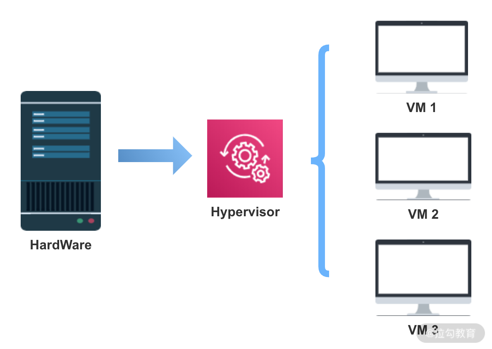
Hypervisor 虚拟机可以模拟机器硬件资源，协调虚拟机对硬件资源的访问，同时在各个虚拟机之间进行隔离。
每一个虚拟机都包括执行的应用，依赖的二进制和库资源，以及一个完整的 OS 操作系统，虚拟机运行以后，预分配给它的资源将全部被占用。
容器化技术
在容器技术中，最具代表性且应用最广泛的是 Docker 技术。
Docker 是一个开源的应用容器引擎，可以打包应用以及依赖包到一个可移植的容器中，然后发布到服务器上，Docker 容器基于镜像运行，可部署在物理机或虚拟机上，通过容器引擎与容器编排调度平台实现容器化应用的生命周期管理。
使用容器化技术有哪些好处呢？
Docker 不同于 VM，只包含应用程序及依赖库，处于一个隔离的环境中，这使得 Docker 更加轻量高效，启动容器只需几秒钟之内完成。由于 Docker 轻量、资源占用少，可以更方便地部署标准化应用，一台主机上可以同时运行上千个 Docker 容器。
两种虚拟化技术的对比
虚拟机是一个运行在宿主机之上的完整操作系统，虚拟机运行自身操作系统会占用较多的 CPU、内存、硬盘资源等。
虚拟化技术为用户提供了一个完整的虚拟机，包括操作系统在内，容器化技术为应用程序提供了隔离的运行空间，容器之间共享同一个上层操作系统内核。虚拟化技术有更佳的隔离性和安全性，但是更新和升级困难，容器化具有快速扩展、灵活性和易用性等优势，但其隔离性较差、安全性相对较低。
实际部署一般是把两种技术结合起来，比如一个虚拟机中运行多个容器，这样既保证了较好的强隔离性和安全性，也有了快速扩展、灵活性和易用性。
容器化的原理
容器技术的核心是如何实现容器内资源的限制，以及不同容器之间的隔离，这些是基于 Linux 的 Namespace 和 CGroups 技术。

Namespace
Namespace 的目的是通过抽象方法使得 Namespace 中的进程看起来拥有它们自己的隔离的全局系统资源实例。 Linux 内核实现了六种 Namespace：Mount namespaces、UTS namespaces、IPC namespaces、PID namespaces、Network namespaces、User namespaces，功能分别为：隔离文件系统、定义 hostname 和 domainame、特定的进程间通信资源、独立进程 ID 结构、独立网络设备、用户和组 ID 空间。
Docker 在创建一个容器的时候，会创建以上六种 Namespace 实例，然后将隔离的系统资源放入到相应的 Namespace 中，使得每个容器只能看到自己独立的系统资源。
Cgroups
Docker 利用 CGroups 进行资源隔离。CGroups（Control Groups）也是 Linux 内核中提供的一种机制，它的功能主要是限制、记录、隔离进程所使用的物理资源，比如 CPU、Mermory、IO、Network 等。
简单来说，CGroups 在接收到调用时，会给指定的进程挂上钩子，这个钩子会在资源被使用的时候触发，触发时会根据资源的类别，比如 CPU、Mermory、IO 等，然后使用对应的方法进行限制。
CGroups 中有一个术语叫作 Subsystem 子系统，也就是一个资源调度控制器，CPU Subsystem 负责 CPU 的时间分配，Mermory Subsystem 负责 Mermory 的使用量等。Docker 启动一个容器后，会在 /sys/fs/cgroup 目录下生成带有此容器 ID 的文件夹，里面就是调用 CGroups 的配置文件，从而实现通过 CGroups 限制容器的资源使用率。
微服务如何适配容器化
微服务的设计思想是对系统功能进行解耦，拆分为单独的服务，可以独立运行，而容器进一步对这种解耦性进行了扩展，应用容器技术可以对服务进行快速水平扩展，从而到达弹性部署业务的能力。在各种云服务概念兴起之后，微服务结合 Docker 部署，更加方便微服务架构运维部署落地。
微服务结合容器有很多优点，但是另一方面，也给服务的部署和应用提出了一些新的问题。
以 Java 服务为例，容器与虚拟机不同，其资源限制通过 CGroup 来实现，而容器内部进程如果不感知 CGroup 的限制，就进行内存、CPU 分配的话，则可能会导致资源冲突的问题。
Java 8 之前的版本无法跟 Docker 很好的配合，JVM 通过容器获取的可用内存和 CPU 数量并不是 Docker 允许使用的可用内存和 CPU 数量。
我们在开发中会应用一些线程池，通常会根据 CPU 核心数来配置，比如使用：
Runtime.getRuntime().availableProcessors()
在 1.8 版本更早的实现，在容器内获取的是上层物理机或者虚拟机的 CPU 核心数，这就使得线程池配置不符合我们期望的设置。
另一个影响体现在 GC 中，JVM 垃圾对象回收对 Java 程序执行性能有一定的影响，默认的 JVM 使用公式“ParallelGCThreads = (ncpus <= 8) ? ncpus : 3 + ((ncpus * 5) / 8)” 来计算并行 GC 的线程数，其中 ncpus 是 JVM 发现的系统 CPU 个数。如果 JVM 应用了错误的 CPU 核心数，会导致 JVM 启动过多的 GC 线程，导致 GC 性能下降，Java 服务的延时增加。
总结
这一课时和你分享了容器技术的发展，以 Docker 为代表的容器化技术的实现原理，以及大规模容器化之下，微服务如何适配等问题。
本课时的内容以概念为主，如果你在工作中没有接触过容器化场景，可以到 Docker 官网学习入门指南、了解 Docker 命令，并动手实践一下 Docker 部署。
20 ServiceMesh：服务网格有哪些应用？
微服务的部署架构中有一个有趣的边车模式，并且基于边车模式，扩展出了 Service Mesh 服务网格的概念。这一课时我们一起来学习下 Service Mesh 相关的知识。
Sidecar 设计模式
在了解服务网格之前，先来看一个微服务的设计模式——Sidecar，也就是边车模式。边车模式是一种分布式服务架构的设计模式，特别是在各大云服务厂商中应用较多。
边车模式因为类似于生活中的边三轮摩托车而得名，也就是侉子摩托车。边三轮摩托车是给摩托车加装一个挎斗，可以装载更多的货物，变得更加多用途，得益于这样的特性，边三轮摩托曾经得到了广泛应用。
在系统设计时，边车模式通过给应用程序添加边车的方式来拓展应用程序现有的功能，分离通用的业务逻辑，比如日志记录、流量控制、服务注册和发现、限流熔断等功能。通过添加边车实现，微服务只需要专注实现业务逻辑即可，实现了控制和逻辑的分离与解耦。
边车模式中的边车，实际上就是一个 Agent，微服务的通信可以通过 Agent 代理完成。在部署时，需要同时启动 Agent，Agent 会处理服务注册、服务发现、日志和服务监控等逻辑。这样在开发时，就可以忽略这些和对外业务逻辑本身没有关联的功能，实现更好的内聚和解耦。
应用边车模式解耦了服务治理和对外的业务逻辑，这一点和 API 网关比较像，但是边车模式控制的粒度更细，可以直接接管服务实例，合理扩展边车的功能，能够实现服务的横向管理，提升开发效率。
Service Mesh 服务网格
在边车模式中，可以实现服务注册和发现、限流熔断等功能。如果边车的功能可以进一步标准化，那么会变得更加通用，就可以抽象出一个通用的服务治理组件，通过边车与其他系统交互，在各个微服务中进行推广。
随着分布式服务的发展，类似的需求越来越多，就出现了服务网格的概念。
什么是 Service Mesh
微服务领域有 CNCF 组织（Cloud Native Computing Foundation），也就是云原生基金会，CNCF 致力于微服务开源技术的推广。Service Mesh 是 CNCF 推广的新一代微服务架构，致力于解决服务间通讯。
Service Mesh 基于边车模式演进，通过在系统中添加边车代理，也就是 Sidecar Proxy 实现。
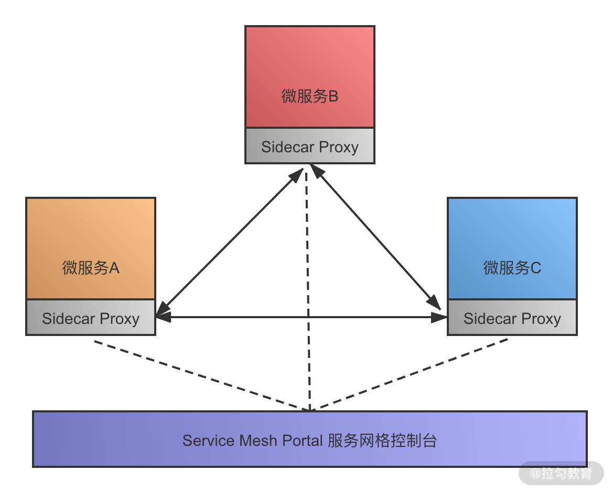
Service Mesh 可以认为是边车模式的进一步扩展，提供了以下功能：
- 管理服务注册和发现
- 提供限流和降级功能
- 前置的负载均衡
- 服务熔断功能
- 日志和服务运行状态监控
- 管理微服务和上层容器的通信
Service Mesh 有哪些特点
使用 Sidecar 或者 Service Mesh，都可以认为是在原有的系统之上抽象了一层新的设计来实现。计算机领域有这么一句话：没有什么系统问题不是抽象一层解决不了的，如果有，那就再抽象一层。
Service Mesh 服务网格就是使用了这样的思想，抽象出专门的一层，提供服务治理领域所需的服务注册发现、负载均衡、熔断降级、监控等功能。现在的微服务有很多部署在各大云服务厂商的主机上，不同厂商的实现标准不同，如何更好地基于各类云服务部署业务系统，这也是云原生要解决的问题。
Service Mesh 可以统一管理微服务与上层通信的部分，接管各种网络通信、访问控制等，我们的业务代码只需要关心业务逻辑就可以，简化开发工作。
Service Mesh 和 API 网关的区别
服务网格实现的功能和 API 网关类似，都可以以一个切面的形式，进行一些横向功能的实现，比如流量控制、访问控制、日志和监控等功能。
服务网格和 API 网关主要的区别是部署方式不同，在整体系统架构中的位置不一样。
API 网关通常是独立部署，通过单独的系统提供服务，为了实现高可用，还会通过网关集群等来管理；而服务网格通常是集成在应用容器内的，服务网格离应用本身更近，相比 API 网关，和应用交互的链路更短，所以可以实现更细粒度的应用管理，也体现了 Sidecar 边车的设计思想。
Service Mesh 解决方案
目前两款流行的 Service Mesh 开源软件分别是 Istio 和 Linkerd，下面简单介绍。
Istio
Istio 是 Google、IBM 等几大公司联合开源的一个服务网格组件，Istio 提供了负载均衡、服务间的身份验证、监控等方法。
Istio 的实现是通过 Sidecar ，通过添加一个 Sidecar 代理，在环境中为服务添加 Istio 的支持。Istio 代理会拦截不同服务之间的通信，然后进行统一的配置和管理。
官方文档中，对 Istio 支持的特性描述如下：
- 为 HTTP、gRPC、WebSocket 和 TCP 流量自动负载均衡；
- 对流量行为进行细粒度控制，包括丰富的路由规则、重试、故障转移和故障注入；
- 可插拔的策略层和配置 API，支持访问控制、速率限制和配额；
- 管理集群内所有流量的自动化度量、日志记录和追踪；
- 实现安全的服务间通信，支持基于身份验证和授权的集群。
Istio 官网开放了中文用户指南，可以点击链接查看 https://istio.io/zh/docs/，翻译质量一般，感兴趣的同学建议直接查看英文手册。
Linkerd
Linkerd 最早由 Twitter 贡献，支持的功能和 Istio 类似，Linkerd 是一款开源网络代理，可以作为服务网格进行部署，在应用程序内管理和控制服务与服务之间的通信。
Linkerd 出现来自 Linkerd 团队为 Twitter、Yahoo、Google 和 Microsoft 等公司运营大型生产系统时发现：最复杂和令人惊讶的问题来源通常不是服务本身，而是服务之间的通讯。Linkerd 目标是解决服务之间的通信问题，通过添加 Linkerd 代理，实现一个专用的基础设施层，为应用提供服务发现、路由、错误处理及服务可见性等功能，而无须侵入应用内部实现。
Istio 和 Linkerd 都处于快速发展阶段，可以到 Istio 和 Linkerd 的官网了解更多的信息。国内也有一些技术小组在进行相关的文档翻译工作，有意向的同学可以加入。
总结
这一课时和你分享了 Service Mesh 服务网格相关的内容，包括微服务中的边车模式，服务网格发展，最后简单介绍了目前流行的两种服务网格解决方案。
Service Mesh 作为一个比较新的领域，可以帮助我们了解微服务架构发展的方向，特别是解决服务上云，以及云原生等问题，对云原生等话题感兴趣的同学，可以关注下平台内的其他专栏。
21 Dubbo vs Spring Cloud：两大技术栈如何选型？
提到微服务开源框架，不可不说的是 Dubbo 和 Spring Cloud，这两大框架应该是大家最熟悉的微服务解决方案，也是面试中的热点。这一课时就梳理下 Dubbo 和 Spring Cloud 的应用特性，以及两个组件的功能对比。
Dubbo 应用
Dubbo 是阿里开源的一个分布式服务框架，目的是支持高性能的远程服务调用，并且进行相关的服务治理。在 RPC 远程服务这一课时我们也介绍过 Dubbo，从功能上，Dubbo 可以对标 gRPC、Thrift 等典型的 RPC 框架。
总体架构
下面这张图包含了 Dubbo 核心组件和调用流程：
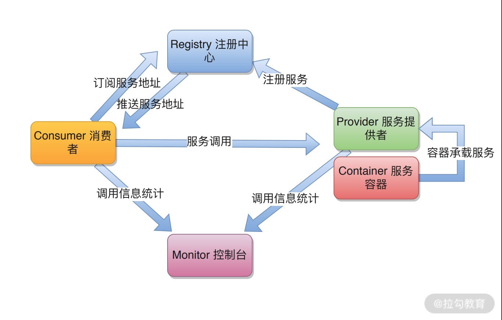
包括了下面几个角色：
- Provider，也就是服务提供者，通过 Container 容器来承载；
- Consumer，调用远程服务的服务消费方；
- Registry，服务注册中心和发现中心；
- Monitor，Dubbo 服务调用的控制台，用来统计和管理服务的调用信息；
- Container，服务运行的容器，比如 Tomcat 等。
应用特性
Dubbo 是一个可扩展性很强的组件，主要的特性如下。
（1）基于 SPI 的扩展
SPI（Service Provider Interface）是 JDK 内置的一种服务提供发现机制，JDK 原生的 SPI 加载方式不灵活，要获取一个类的扩展必须加载所有实现类，得到指定的实现类需要遍历。
Dubbo 中增强了原生的 SPI 实现，可以通过指定的扩展类名称来找到具体的实现，这样可以更好地进行功能点扩展。
（2）灵活的服务调用
Dubbo 作为一个优秀的 RPC 解决方案，支持多种服务调用方式，针对服务端和消费端的线程池、集群调用模式、异步和同步调用等都可以进行灵活的配置。
（3）责任链和插件模式
Dubbo 的设计和实现采用了责任链模式，使用者可以在服务调用的责任链上，对各个环节进行自定义实现，也可通过这种方式，解决 Dubbo 自带策略有限的问题。基于 SPI 和责任链模式，Dubbo 实现了一个类似微内核加插件的设计，整体的可扩展性和灵活性都比较高。
（4）高级特性支持
Dubbo 对远程服务调用提供了非常细粒度的功能支持，比如服务发布支持 XML、注解等多种方式，调用可以选择泛化调用、Mock 调用等。
Spring Cloud 应用
Spring Cloud 基于 Spring Boot，是一系列组件的集成，为微服务开发提供一个比较全面的解决方案，包括了服务发现功能、配置管理功能、API 网关、限流熔断组件、调用跟踪等一系列的对应实现。
总体架构
Spring Cloud 的微服务组件都有多种选择，典型的架构图如下图所示：

整体服务调用流程如下：
- 外部请求通过 API 网关，在网关层进行相关处理；
- Eureka 进行服务发现，包含健康检查等；
- Ribbon 进行均衡负载，分发到后端的具体实例；
- Hystrix 负责处理服务超时熔断；
- Zipkin 进行链路跟踪。
应用特性
Spring Cloud 目前主要的解决方案包括 Spring Cloud Netflix 系列，以及 Spring Cloud Config、Spring Cloud Consul 等。
Spring Cloud 典型的应用如下：
- 配置中心，一般使用 Spring Cloud Config 实现，服务发现也可以管理部分配置；
- 服务发现，使用 Eureka 实现，也可以扩展 Consul 等；
- API 网关，使用 Zuul 实现，另外还有 Kong 等应用；
- 负载均衡，使用 Ribbon 实现，也可以选择 Feign；
- 限流降级，使用 Hystrix 实现熔断机制，也可以选择 Sentinel。
Dubbo 和 Spring Cloud 对比
可以看到，在介绍 Dubbo 时，主要是从 RPC 服务调用的特性入手，而在介绍 Spring Cloud 时，更多的是强调其在微服务方面提供的整体解决方案。
Dubbo 更多关注远程服务调用功能特性，Spring Cloud 则包含了整体的解决方案，可以认为 Dubbo 支持的功能是 Spring Cloud 的子集。
功能对比
生产环境使用 Dubbo 组件实现服务调用，需要强依赖 ZooKeeper 注册中心；如果要实现服务治理的周边功能，比如配置中心、服务跟踪等，则需要集成其他组件的支持。
- 注册中心：需要依赖 ZooKeeper，其他注册中心应用较少。
- 分布式配置：可以使用 diamond，淘宝的开源组件来实现。
- 分布式调用跟踪：应用扩展 Filter 用 Zippin 来做服务跟踪。
- 限流降级：可以使用开源的 Sentinel 组件，或者自定义 Filter 实现。
对于 Spring Cloud，提供的功能更加多样，服务治理只是其中的一个方面，面向的是微服务整体的解决方案。
调用方式
Dubbo 使用 RPC 协议进行通讯，支持多种序列化方式，包括 Dubbo 协议、Hessian、Kryo 等，如果针对特定的业务场景，用户还可以扩展自定义协议实现。
Spring Cloud 一般使用 HTTP 协议的 RESTful API 调用，RESTful 接口相比 RPC 更为灵活，服务提供方和调用方可以更好地解耦，不需要依赖额外的 jar 包等，更适合微服务的场景。从性能角度考虑，一般来说，会认为 PRC 方式的性能更高，但是如果对请求时延不是特别敏感的业务，是可以忽略这一点的。
服务发现
Dubbo 的服务发现通过注册中心实现，支持多种注册中心，另外本地测试支持 Multicast、Simple 等简单的服务发现方式。Spring Cloud 有各种服务发现组件，包括 Eureka、Consul、Nacos 等。前面提到过，ZooKeeper 实现的是 CAP 中的 CP 一致性，Spring Cloud 中的 Eureka 实现的是 AP 一致性，AP 更适合服务发现的场景。
开发成本
应用 Dubbo 需要一定的开发成本，自定义功能需要实现各种 Filter 来做定制，使用 Spring Cloud 就很少有这个问题，因为各种功能都有了对应的开源实现，应用起来更加简单。特别是，如果项目中已经应用了 Spring 框架、Spring Boot 等技术，可以更方便地集成 Spring Cloud，减少已有项目的迁移成本。
经过上面的对比可以看出，Dubbo 和 Spring Cloud 的目标不同，关注的是微服务实现的不同维度，Dubbo 看重远程服务调用，Spring Cloud 则是作为一个微服务生态，覆盖了从服务调用，到服务治理的各个场景。
总结
这一课时的内容对比了微服务的两大技术栈，分别介绍了 Dubbo 和 Spring Cloud 的架构，以及应用特性。
Spring Cloud 从发展到现在，社区一直保持高度活跃，各类解决方案越来越丰富，另外，Dubbo 在近几年又重启维护，发布了新的版本，并且也官宣了新的升级计划，相信在两大开源框架的加持下，会更好地提高大家的开发效率。
23 读写分离如何在业务中落地？
本课时我们来探讨读写分离如何在业务中落地。
读写分离是业务开发中常用的技术手段，在面试中也是热点问题，今天我们要讲的是在什么业务场景下需要读写分离，读写分离实现的机制，以及实际生产中应用读写分离要注意的问题。
什么时候需要读写分离
互联网大部分业务场景都是读多写少的，对于电商等典型业务，读和写的请求对比可能差了不止一个数量级。为了不让数据库的读成为业务瓶颈，同时也为了保证写库的成功率，一般会采用读写分离的技术来保证。
读写分离顾名思义，就是分离读库和写库操作，从 CRUD 的角度，主数据库处理新增、修改、删除等事务性操作，而从数据库处理 SELECT 查询操作。具体的实现上，可以有一主一从，一个主库配置一个从库；也可以一主多从，也就是一个主库，但是配置多个从库，读操作通过多个从库进行，支撑更高的读并发压力。
读写分离的实现是把访问的压力从主库转移到从库，特别在单机数据库无法支撑并发读写，并且业务请求大部分为读操作的情况下。如果业务特点是写多读少，比如一些需要动态更新的业务场景，应用读写分离就不合适了，由于 MySQL InnoDB 等关系型数据库对事务的支持，使得写性能不会太高，一般会选择更高性能的 NoSQL 等存储来实现。
MySQL 主从复制技术
读写分离是基于主从复制架构实现的，下面介绍一下 MySQL 中的主从复制技术。
binlog 日志
MySQL InnoDB 引擎的主从复制，是通过二进制日志 binlog 来实现。除了数据查询语句 select 以外，binlog 日志记录了其他各类数据写入操作，包括 DDL 和 DML 语句。
binlog 有三种格式：Statement、Row 及 Mixed。
- Statement 格式，基于 SQL 语句的复制
在 Statement 格式中，binlog 会记录每一条修改数据的 SQL 操作，从库拿到后在本地进行回放就可以了。
- Row 格式，基于行信息复制
Row 格式以行为维度，记录每一行数据修改的细节，不记录执行 SQL 语句的上下文相关的信息，仅记录行数据的修改。假设有一个批量更新操作，会以行记录的形式来保存二进制文件，这样可能会产生大量的日志内容。
- Mixed 格式，混合模式复制
Mixed 格式，就是 Statement 与 Row 的结合，在这种方式下，不同的 SQL 操作会区别对待。比如一般的数据操作使用 row 格式保存，有些表结构的变更语句，使用 statement 来记录。
主从复制过程
MySQL 主从复制过程如下图所示：

- 主库将变更写入 binlog 日志，从库连接到主库之后，主库会创建一个log dump 线程，用于发送 bin log 的内容。
- 从库开启同步以后，会创建一个 IO 线程用来连接主库，请求主库中更新的 bin log，I/O 线程接收到主库 binlog dump 进程发来的更新之后，保存在本地 relay 日志中。
- 接着从库中有一个 SQL 线程负责读取 relay log 中的内容，同步到数据库存储中，也就是在自己本地进行回放，最终保证主从数据的一致性。
读写分离要注意的问题
分布式系统通过主从复制实现读写分离，解决了读和写操作的性能瓶颈问题，但同时也增加了整体的复杂性。我们看一下引入主从复制后，额外需要注意哪些问题。
主从复制下的延时问题
由于主库和从库是两个不同的数据源，主从复制过程会存在一个延时，当主库有数据写入之后，同时写入 binlog 日志文件中，然后从库通过 binlog 文件同步数据，由于需要额外执行日志同步和写入操作，这期间会有一定时间的延迟。特别是在高并发场景下，刚写入主库的数据是不能马上在从库读取的，要等待几十毫秒或者上百毫秒以后才可以。
在某些对一致性要求较高的业务场景中，这种主从导致的延迟会引起一些业务问题，比如订单支付，付款已经完成，主库数据更新了，从库还没有，这时候去从库读数据，会出现订单未支付的情况，在业务中是不能接受的。
为了解决主从同步延迟的问题，通常有以下几个方法。
- 敏感业务强制读主库
在开发中有部分业务需要写库后实时读数据，这一类操作通常可以通过强制读主库来解决。
- 关键业务不进行读写分离
对一致性不敏感的业务，比如电商中的订单评论、个人信息等可以进行读写分离，对一致性要求比较高的业务，比如金融支付，不进行读写分离，避免延迟导致的问题。
主从复制如何避免丢数据
假设在数据库主从同步时，主库宕机，并且数据还没有同步到从库，就会出现数据丢失和不一致的情况，虽然这是一个极端场景，一般不会发生，但是 MySQL 在设计时还是考虑到了。
MySQL 数据库主从复制有异步复制、半同步复制和全同步复制的方式。
- 异步复制
异步复制模式下，主库在接受并处理客户端的写入请求时，直接返回执行结果，不关心从库同步是否成功，这样就会存在上面说的问题，主库崩溃以后，可能有部分操作没有同步到从库，出现数据丢失问题。
- 半同步复制
在半同步复制模式下，主库需要等待至少一个从库完成同步之后，才完成写操作。主库在执行完客户端提交的事务后，从库将日志写入自己本地的 relay log 之后，会返回一个响应结果给主库，主库确认从库已经同步完成，才会结束本次写操作。相对于异步复制，半同步复制提高了数据的安全性，避免了主库崩溃出现的数据丢失，但是同时也增加了主库写操作的耗时。
- 全同步复制
全同步复制指的是在多从库的情况下，当主库执行完一个事务，需要等待所有的从库都同步完成以后，才完成本次写操作。全同步复制需要等待所有从库执行完对应的事务，所以整体性能是最差的。
总结
今天分享了读写分离的业务场景，MySQL 的主从复制技术，包括 binlog 的应用、主从复制的延时问题、数据库同步的不同机制等。
读写分离只是分布式性能优化的一个手段，不是任何读性能瓶颈都需要使用读写分离，除了读写分离，还可以进行分库分表，以及利用缓存，文件索引等 NoSQL 数据库来提高性能，这些内容在后面的课时中会讲到。
24 为什么需要分库分表，如何实现？
你好，欢迎来到第 21 课时，本课时我们主要讲解“为什么需要分库分表，如何实现”。
在上一课时中讲到了读写分离，读写分离优化了互联网读多写少场景下的性能问题，考虑一个业务场景，如果读库的数据规模非常大，除了增加多个从库之外，还有其他的手段吗？
方法总比问题多，实现数据库高可用，还有另外一个撒手锏，就是分库分表，分库分表也是面试的常客，今天一起来看一下相关的知识。
分库分表的背景
互联网业务的一个特点就是用户量巨大，BAT等头部公司都是亿级用户，产生的数据规模也飞速增长，传统的单库单表架构不足以支撑业务发展，存在下面的性能瓶颈：
读写的数据量限制
数据库的数据量增大会直接影响读写的性能，比如一次查询操作，扫描 5 万条数据和 500 万条数据，查询速度肯定是不同的。
关于 MySQL 单库和单表的数据量限制，和不同的服务器配置，以及不同结构的数据存储有关，并没有一个确切的数字。这里参考阿里巴巴的《Java 开发手册》中数据库部分的建表规约：
单表行数超过 500 万行或者单表容量超过 2GB，才推荐进行分库分表。
基于阿里巴巴的海量业务数据和多年实践，这一条数据库规约，可以认为是数据库应用中的一个最佳实践。也就是在新业务建表规划时，或者当前数据库单表已经超过对应的限制，可以进行分库分表，同时也要避免过度设计。因为分库分表虽然可以提高性能，但是盲目地进行分库分表只会增加系统的复杂度。
数据库连接限制
数据库的连接是有限制的，不能无限制创建，比如 MySQL 中可以使用 max_connections 查看默认的最大连接数，当访问连接数过多时，就会导致连接失败。以电商为例，假设存储没有进行分库，用户、商品、订单和交易，所有的业务请求都访问同一个数据库，产生的连接数是非常可观的，可能导致数据库无法支持业务请求。
使用数据库连接池，可以优化连接数问题，但是更好的方式是通过分库等手段，避免数据库连接成为业务瓶颈。
除了这些，如果不进行数据库拆分，大量数据访问都集中在单台机器上，对磁盘 IO、CPU 负载等都会产生很大的压力，并且直接影响业务操作的性能。
分库分表原理
分库分表，顾名思义，就是将原本存储于单个数据库上的数据拆分到多个数据库，把原来存储在单张数据表的数据拆分到多张数据表中，实现数据切分，从而提升数据库操作性能。分库分表的实现可以分为两种方式：垂直切分和水平切分。
垂直切分
垂直拆分一般是按照业务和功能的维度进行拆分，把数据分别放到不同的数据库中。

垂直分库针对的是一个系统中对不同的业务进行拆分，根据业务维度进行数据的分离，剥离为多个数据库。比如电商网站早期，商品数据、会员数据、订单数据都是集中在一个数据库中，随着业务的发展，单库处理能力已成为瓶颈，这个时候就需要进行相关的优化，进行业务维度的拆分，分离出会员数据库、商品数据库和订单数据库等。
垂直分表是针对业务上的字段比较多的大表进行的，一般是把业务宽表中比较独立的字段，或者不常用的字段拆分到单独的数据表中。比如早期的商品表中，可能包含了商品信息、价格、库存等，可以拆分出来价格扩展表、库存扩展表等。
水平切分
水平拆分是把相同的表结构分散到不同的数据库和不同的数据表中，避免访问集中的单个数据库或者单张数据表，具体的分库和分表规则，一般是通过业务主键，进行哈希取模操作。
例如，电商业务中的订单信息访问频繁，可以将订单表分散到多个数据库中，实现分库；在每个数据库中，继续进行拆分到多个数据表中，实现分表。路由策略可以使用订单 ID 或者用户 ID，进行取模运算，路由到不同的数据库和数据表中。
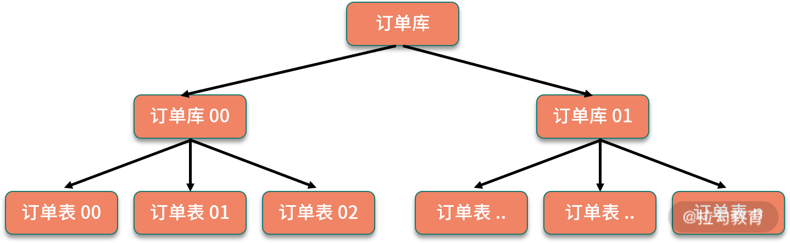
分库分表后引入的问题
下面看一下，引入分库分表后额外增加了哪些系统设计的问题。
- 分布式事务问题
对业务进行分库之后，同一个操作会分散到多个数据库中，涉及跨库执行 SQL 语句，也就出现了分布式事务问题。
比如数据库拆分后，订单和库存在两个库中，一个下单减库存的操作，就涉及跨库事务。关于分布式事务的处理，我们在专栏“分布式事务”的模块中也介绍过，可以使用分布式事务中间件，实现 TCC 等事务模型；也可以使用基于本地消息表的分布式事务实现。如果对这部分印象不深，你可以回顾下前面讲过的内容。
- 跨库关联查询问题
分库分表后，跨库和跨表的查询操作实现起来会比较复杂，性能也无法保证。在实际开发中，针对这种需要跨库访问的业务场景，一般会使用额外的存储，比如维护一份文件索引。另一个方案是通过合理的数据库字段冗余，避免出现跨库查询。
- 跨库跨表的合并和排序问题
分库分表以后，数据分散存储到不同的数据库和表中，如果查询指定数据列表，或者需要对数据列表进行排序时，就变得异常复杂，则需要在内存中进行处理，整体性能会比较差，一般来说，会限制这类型的操作。具体的实现，可以依赖开源的分库分表中间件来处理，下面就来介绍一下。
分库分表中间件实现
业务中实现分库分表，需要自己去实现路由规则，实现跨库合并排序等操作，具有一定的开发成本，可以考虑使用开源的分库分表中间件。这里比较推荐 Apache ShardingSphere，另外也可以参考淘宝的 TDDL 等。
其中，ShardingSphere 的前身是当当开源的 Sharding-JDBC，目前更名为 ShardingSphere，并且已经加入 Apache 基金会。ShardingSphere 在 Sharding-JDBC 的基础上，额外提供了 Sharding-Proxy，以及正在规划中的 Sharding-Sidecar。其中 Sharding-JDBC 用来实现分库分表，另外也添加了对分布式事务等的支持。关于 ShardingSphere 的具体应用，感兴趣的同学可以去浏览 《ShardingSphere 用户手册》。
另一款 TDDL（Taobao Distributed Data Layer）是淘宝团队开发的数据库中间件，用于解决分库分表场景下的访问路由，TDDL 在淘宝大规模应用，遗憾的是开源部分还不太完善，社区已经很长时间都没有更新，可以在 TDDL 项目仓库了解更多的信息。
总结
这一课时分享了分库分表相关的知识点，包括分库分表的业务背景，水平切分和垂直切分的不同方式，分库分表以后增加的系统复杂性问题，以及可以使用哪些开源的分库分表中间件解决对应问题。
你可以考察下目前项目里是否有应用分库分表，以及是如何实现分库分表，比如自研或者使用开源组件，并且留言分享。
25 存储拆分后，如何解决唯一主键问题？
上一课时我们讲到了分库分表，现在考虑这样一个问题：在单库单表时，业务 ID 可以依赖数据库的自增主键实现，现在我们把存储拆分到了多处，如果还是用数据库的自增主键，势必会导致主键重复。
那么我们应该如何解决主键问题呢？这一课时就来看下生成唯一主键相关的知识。
生成主键有哪些方案
如果用最简单的方式来生成唯一主键，可以怎么做呢？一个最直接的方案是使用单独的自增数据表，存储拆分以后，创建一张单点的数据表，比如现在需要生成订单 ID，我们创建下面一张数据表：
CREATE TABLE IF NOT EXISTS `order_sequence`(
`order_id` INT UNSIGNED AUTO_INCREMENT,
PRIMARY KEY ( `order_id` )
)ENGINE=InnoDB DEFAULT CHARSET=utf8;
当每次需要生成唯一 ID 时，就去对应的这张数据表里新增一条记录，使用返回的自增主键 ID 作为业务 ID。
这个方案实现起来简单，但问题也很明显。首先，性能无法保证，在并发比较高的情况下，如果通过这样的数据表来创建自增 ID，生成主键很容易成为性能瓶颈。第二，存在单点故障，如果生成自增 ID 的数据库挂掉，那么会直接影响创建功能。
在实际开发中，实现唯一主键有多种方案可选，下面介绍几种常见的实现思路，分别是使用 UUID、使用 Snowflake 算法，以及配置自增区间在内存中分配的方式。
使用 UUID 能否实现
UUID 大家都很熟悉，在 Java 语言中，就内置了 UUID 的工具类实现，可以很容易地生成一个 UUID：
public String getUUID(){
UUID uuid=UUID.randomUUID();
return uuid.toString();
}
那么是否可以应用 UUID 生成唯一主键呢？
UUID 虽然很好地满足了全局唯一这个要求，但是并不适合作为数据库存储的唯一主键。我们输出一个 UUID 看一下，比如：135c8321-bf10-46d3-9980-19ba588554e8，这是一个 36 位的字符串。
首先 UUID 作为数据库主键太长了，会导致比较大的存储开销，另外一个，UUID 是无序的，如果使用 UUID 作为主键，会降低数据库的写入性能。
以 MySQL 为例，MySQL 建议使用自增 ID 作为主键，我们知道 MySQL InnoDB 引擎支持索引，底层数据结构是 B+ 树，如果主键为自增 ID 的话，那么 MySQL 可以按照磁盘的顺序去写入；如果主键是非自增 ID，在写入时需要增加很多额外的数据移动，将每次插入的数据放到合适的位置上，导致出现页分裂，降低数据写入的性能。
基于 Snowflake 算法
Snowflake 是 Twitter 开源的分布式 ID 生成算法，由 64 位的二进制数字组成，一共分为 4 部分，下面是示意图：

其中：
- 第 1 位默认不使用，作为符号位，总是 0，保证数值是正数；
- 41 位时间戳，表示毫秒数，我们计算一下，41 位数字可以表示 241 毫秒，换算成年，结果是 69 年多一点，一般来说，这个数字足够在业务中使用了；
- 10 位工作机器 ID，支持 210 也就是 1024 个节点；
- 12 位序列号，作为当前时间戳和机器下的流水号，每个节点每毫秒内支持 212 的区间，也就是 4096 个 ID，换算成秒，相当于可以允许 409 万的 QPS，如果在这个区间内超出了 4096，则等待至下一毫秒计算。
Twitter 给出了 Snowflake 算法的示例，具体实现应用了大量的位运算，可以点击具体的代码库查看。
Snowflake 算法可以作为一个单独的服务，部署在多台机器上，产生的 ID 是趋势递增的，不需要依赖数据库等第三方系统，并且性能非常高，理论上 409 万的 QPS 是一个非常可观的数字，可以满足大部分业务场景，其中的机器 ID 部分，可以根据业务特点来分配，比较灵活。
Snowflake 算法优点很多，但有一个不足，那就是存在时钟回拨问题，时钟回拨是什么呢？
因为服务器的本地时钟并不是绝对准确的，在一些业务场景中，比如在电商的整点抢购中，为了防止不同用户访问的服务器时间不同，则需要保持服务器时间的同步。为了确保时间准确，会通过 NTP 的机制来进行校对，NTP（Network Time Protocol）指的是网络时间协议，用来同步网络中各个计算机的时间。
如果服务器在同步 NTP 时出现不一致，出现时钟回拨，那么 SnowFlake 在计算中可能出现重复 ID。除了 NTP 同步，闰秒也会导致服务器出现时钟回拨，不过时钟回拨是小概率事件，在并发比较低的情况下一般可以忽略。关于如何解决时钟回拨问题，可以进行延迟等待，直到服务器时间追上来为止，感兴趣的同学可以查阅相关资料了解下。
数据库维护区间分配
下面我们介绍一种基于数据库维护自增ID区间，结合内存分配的策略，这也是淘宝的 TDDL 等数据库中间件使用的主键生成策略。
使用这种方式的步骤如下。
- 首先在数据库中创建 sequence 表，其中的每一行，用于记录某个业务主键当前已经被占用的 ID 区间的最大值。
sequence 表的主要字段是 name 和 value，其中 name 是当前业务序列的名称，value 存储已经分配出去的 ID 最大值。
CREATE TABLE `sequence` (
`id` bigint(20) NOT NULL AUTO_INCREMENT COMMENT 'Id',
`name` varchar(64) NOT NULL COMMENT 'sequence name',
`value` bigint(32) NOT NULL COMMENT 'sequence current value',
PRIMARY KEY (`id`),
UNIQUE KEY `unique_name` (`name`)
) ENGINE=InnoDB DEFAULT CHARSET=utf8;
- 接下来插入一条行记录，当需要获取主键时，每台服务器主机从数据表中取对应的 ID 区间缓存在本地，同时更新 sequence 表中的 value 最大值记录。
现在我们新建一条记录，比如设置一条 order 更新的规则，插入一行记录如下：
INSERT INTO sequence (name,value) values('order_sequence',1000);i
当服务器在获取主键增长区段时，首先访问对应数据库的 sequence 表，更新对应的记录，占用一个对应的区间。比如我们这里设置步长为 200，原先的 value 值为 1000，更新后的 value 就变为了 1200。
- 取到对应的 ID 区间后，在服务器内部进行分配，涉及的并发问题可以依赖乐观锁等机制解决。
有了对应的 ID 增长区间，在本地就可以使用 AtomicInteger 等方式进行 ID 分配。
不同的机器在相同时间内分配出去的 ID 可能不同，这种方式生成的唯一 ID，不保证严格的时间序递增，但是可以保证整体的趋势递增，在实际生产中有比较多的应用。
为了防止单点故障，sequence 表所在的数据库，通常会配置多个从库，实现高可用。
除了上面的几种方案，实际开发中还可以应用 Redis 作为解决方案，即通过 Redis Incr 命令来实现，感兴趣的同学可以去了解一下。
总结
这一课时主要分享了实现唯一主键的几种思路，也就是我们通常说的分布式发号器，主要有使用 UUID、使用 Snowflake 算法，以及数据库存储区间结合内存分配的方式。
现在再来总结一下，一个生产环境中可用的主键生成器，应该具备哪些特性呢？
首先是生成的主键必须全局唯一，不能出现重复 ID，这对于主键来说是最基础的需求。
第二，需要满足有序性，也就是单调递增，或者也可以满足一段时间内的递增，这是出于业务上的考虑。一方面在写入数据库时，有序的主键可以保证写入性能，另一方面，很多时候都会使用主键来进行一些业务处理，比如通过主键排序等。如果生成的主键是乱序的，就无法体现一段时间内的创建顺序。
再一个是性能要求，要求尽可能快的生成主键，同时满足高可用。因为存储拆分后，业务写入强依赖主键生成服务，假设生成主键的服务不可用，订单新增、商品创建等都会阻塞，这在实际项目中是绝对不可以接受的。
你可以联系实际工作，在你负责的项目中涉及唯一主键的模块，是否也考虑了这些特性，以及具体是如何实现的，欢迎留言分享。
26 分库分表以后，如何实现扩容？
在实际开发中，数据库的扩容和不同的分库分表规则直接相关，今天我们从系统设计的角度，抽象了一个项目开发中出现的业务场景，从数据库设计、路由规则，以及数据迁移方案的角度进行讨论。
从业务场景出发进行讨论
假设这样一个业务场景，现在要设计电商网站的订单数据库模块，经过对业务增长的估算，预估三年后，数据规模可能达到 6000 万，每日订单数会超过 10 万。
首先选择存储实现，订单作为电商业务的核心数据，应该尽量避免数据丢失，并且对数据一致性有强要求，肯定是选择支持事务的关系型数据库，比如使用 MySQL 及 InnoDB 存储引擎。
然后是数据库的高可用，订单数据是典型读多写少的数据，不仅要面向消费者端的读请求，内部也有很多上下游关联的业务模块在调用，针对订单进行数据查询的调用量会非常大。基于这一点，我们在业务中配置基于主从复制的读写分离，并且设置多个从库，提高数据安全。
最后是数据规模，6000 万的数据量，显然超出了单表的承受范围，参考《阿里巴巴 Java 开发手册》中「单表行数超过 500 万行」进行分表的建议，此时需要考虑进行分库分表，那么如何设计路由规则和拆分方案呢？接下来会对此展开讨论。
路由规则与扩容方案
现在我们考虑 3 种路由规则：对主键进行哈希取模、基于数据范围进行路由、结合哈希和数据范围的分库分表规则。
1. 哈希取模的方式
哈希取模是分库分表中最常见的一种方案，也就是根据不同的业务主键输入，对数据库进行取模，得到插入数据的位置。
6000 万的数据规模，我们按照单表承载百万数量级来拆分，拆分成 64 张表，进一步可以把 64 张表拆分到两个数据库中，每个库中配置 32 张表。当新订单创建时，首先生成订单 ID，对数据库个数取模，计算对应访问的数据库；接下来对数据表取模，计算路由到的数据表，当处理查询操作时，也通过同样的规则处理，这样就实现了通过订单 ID 定位到具体数据表。
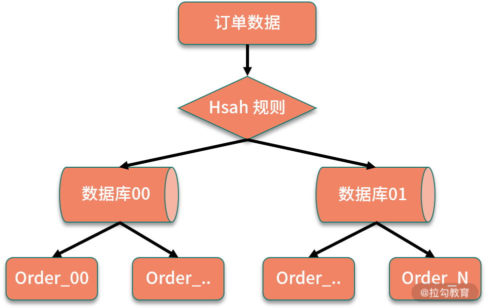 规则示意图
通过哈希取模的方式进行路由，优点是数据拆分比较均匀，但缺点是不利于后面的扩容。假设我们的订单增长速度超出预估，数据规模很快达到了几亿的数量级，原先的数据表已经不满足性能要求，数据库需要继续进行拆分。
数据库拆分以后，订单库和表的数量都需要调整，路由规则也需要调整，为了适配新的分库分表规则，保证数据的读写正常，不可避免地要进行数据迁移，具体的操作，可以分为停机迁移和不停机迁移两种方式。
- 停机迁移
停机迁移的方式比较简单，比如我们在使用一些网站或者应用时，经常会收到某段时间内暂停服务的通知，一般是在这段时间内，完成数据迁移，将历史数据按照新的规则重新分配到新的存储中，然后切换服务。
- 不停机迁移
不停机迁移也就是常说的动态扩容，依赖业务上的双写操作实现，需要同时处理存量和增量数据，并且做好各种数据校验。
一般来说，具体的数据库扩容方式有基于原有存储增加节点，以及重新部署一套新的数据库两种策略，针对不同的扩容方式，需要不同的迁移方案和双写策略支持。
如果重新部署新的数据库存储，可以粗略地分为以下的步骤：
- 创建一套新的订单数据库；
- 在某个时间点上，将历史数据按照新的路由规则分配到新的数据库中；
- 在旧数据库的操作中开启双写，同时写入到两个数据库；
- 用新的读写服务逐步替代旧服务，同步进行数据不一致校验，最后完成全面切流。
这是一个非常简化的流程，实际开发中要处理的细节有很多，感兴趣的同学可以去了解下数据迁移的 ETL 等标准化流程。
2. 基于数据范围进行拆分
基于数据范围进行路由，通常是根据特定的字段进行划分不同区间，对订单表进行拆分中，如果基于数据范围路由，可以按照订单 ID 进行范围的划分。
同样是拆分成 64 张数据表，可以把订单 ID 在 3000万 以下的数据划分到第一个订单库，3000 万以上的数据划分到第二个订单库，在每个数据库中，继续按照每张表 100万 的范围进行划分。
 规则示意图
规则示意图
可以看到，基于数据范围进行路由的规则，当进行扩容时，可以直接增加新的存储，将新生成的数据区间映射到新添加的存储节点中，不需要进行节点之间的调整，也不需要迁移历史数据。
但是这种方式的缺点就是数据访问不均匀。如果按照这种规则，另外一个数据库在很长一段时间内都得不到应用，导致数据节点负荷不均，在极端情况下，当前热点库可能出现性能瓶颈，无法发挥分库分表带来的性能优势。
3. 结合数据范围和哈希取模
现在考虑，如果结合以上两种方式数据范围和哈希取模，那么是不是可以实现数据均匀分布，也可以更好地进行扩容？
我们设计这样的一个路由规则，首先对订单 ID 进行哈希取模，然后对取模后的数据再次进行范围分区。
 订单数据库进一步拆分
订单数据库进一步拆分
可以看到，通过哈希取模结合数据区间的方式，可以比较好地平衡两种路由方案的优缺点。当数据写入时，首先通过一次取模，计算出一个数据库，然后使用订单 ID 的范围，进行二次计算，将数据分散到不同的数据表中。
这种方式避免了单纯基于数据范围可能出现的热点存储，并且在后期扩展时，可以直接增加对应的扩展表，避免了复杂的数据迁移工作。
上面我们通过一个业务场景设计，思考了分库分表下的几种路由规则和扩容方案，这是一个开放性问题，思路要比方案更重要，而实际业务也要比这个复杂得多，你可以结合项目实践，思考在你负责的模块中，是如何设计路由规则，以及可以如何进行数据扩容的。
总结
这一课时从一个真实业务场景的设计出发，分享了分库分表不同路由规则的设计，对应的优缺点，以及对扩容方式的影响。
今天的问题如果出现在面试中，可以认为是一个典型的系统设计类问题，那么回答系统设计类问题，有哪些要注意的点呢？
首先，系统设计类问题出现在面试中，很重要的一方面是考察沟通，要和面试官确认整体的数据规模，输入和输出，明确系统设计的边界，比如数据规模不同，直接影响数据库表的设计方式。
其次，是找到主要问题，理解系统的瓶颈，然后就可以应用各种系统设计的技巧，进行各个业务层的设计。
27 NoSQL 数据库有哪些典型应用？
前面的内容介绍了数据库读写分离和分库分表相关知识，都是针对关系型数据库的，即通常说的 RDBMS。除了关系型数据库，NoSQL 在项目开发中也有着越来越重要的作用，与此同时，NoSQL 相关的内容也是面试的常客。今天我们一起来看下 NoSQL 数据库有哪些应用。
对比关系型数据库
在介绍 NoSQL 数据库之前，先回顾下关系型数据库。还记得 SQL 语言的全称吗？Structured Query Language，也就是结构化查询语言，结构化查询对应的存储实现是关系型数据库，我们熟悉的 MySQL、Oracle 和 SQL Server，都是关系型数据库的代表。
关系型数据库通过关系模型来组织数据，在关系型数据库当中一个表就是一个模型，一个关系数据库可以包含多个表，不同数据表之间的联系反映了关系约束。
不知道你是否应用过 ER 图？在早期的软件工程中，数据表的创建都会通过 ER 图来定义，ER 图（Entity Relationship Diagram）称为实体-联系图，包括实体、属性和关系三个核心部分。
下面是在电商领域中，一个简化的会员、商品和订单的 ER 图：
 简化版的会员、商品和订单 ER 图
简化版的会员、商品和订单 ER 图
ER图中的实体采用矩形表示，即数据模型中的数据对象，例如电商业务模型中的会员、商品、订单等，每个数据对象具有不同的属性，比如会员有账户名、电话、地址等，商品有商品名称、价格、库存等属性。不同的数据对象之间又对应不同的关系，比如会员购买商品、创建订单。
有了 ER 图等的辅助设计，关系型数据库的数据模型可以非常好的描述物理世界，比较方便地创建各种数据约束。
另外一方面，关系型数据库对事务支持较好，支持 SQL 规范中的各种复杂查询，比如 join、union 等操作。正是由于对 SQL 规范的支持，也使得关系型数据库对扩展不友好，比较难进行分布式下的集群部署。
NoSQL 数据库特性
NoSQL 数据库是在 SQL 的基础上发展的，对 NoSQL 的具体解释，你可以认为是 Not Only SQL，也可以认为是 Non-Relational SQL。
NoSQL 对应非关系型数据库，不同于传统的关系型数据库，如果说关系型数据库是武侠小说中的正统功夫，NoSQL 数据库就是野路子，少了很多约束，也就不拘一格、自成一派。那么对比关系型数据库，NoSQL 型数据库有哪些优点呢？
- 良好的扩展性，容易通过集群部署
关系型数据库在进行扩展时，要考虑到如何分库分表、扩容等，各种实现方案都比较重，对业务侵入较大。NoSQL 数据库去掉了关系型数据库的关系特性，天生对集群友好，这样就非常容易扩展。
- 读写性能高，支持大数据量
关系型数据库对一致性的要求较高，数据表的结构复杂，读写的性能要低于非关系型数据库。另外一方面，部分 NoSQL 数据库采用全内存实现，更适合一些高并发的访问场景。
- 不限制表结构，灵活的数据模型
应用关系型数据库，需要通过 DML 语句创建表结构，数据表创建以后，增删字段需要重新修改表结构。如果使用 NoSQL，一般不需要事先为数据建立存储结构和字段，可以存储各种自定义的数据。
NoSQL 数据库有这么多优点，但是在项目开发中，关系型数据库和非关系型数据库不是对立的，而是相辅相成的。从性能的角度来讲，NoSQL 数据库的性能优于关系型数据库，从持久化角度，关系型数据库优于 NoSQL 数据库。
专栏最开始提到了 CAP 理论，从 CAP 的角度，NoSQL 数据库一般提供弱一致性的保证，实现最终一致性，也就是关系型数据库强调 CP 模型，而 NoSQL 关注的是 AP 模型，同时应用 NoSQL 和关系型数据库，可以满足高性能的基础上，同时保证数据可靠性。
NoSQL 数据库应用
非关系型数据库有很多类型，应用的侧重点也不同，可以从以下几个角度进行分类。
Key-Value 数据库
Key-Value 存储就是我们熟悉的 Map 结构，支持高性能的通过 Key 定位和存储。通常用来实现缓存等应用，典型的有 Redis 和 Memcached。
以 Redis 为例，作为应用最多的非关系型数据库之一，Redis 可以说是日常工作中的一把瑞士军刀。
从性能的角度，为了提高读写效率，Redis 在最开始的版本中一直使用单线程模型，避免上下文切换和线程竞争资源，并且采用了 IO 多路复用的技术，提升了性能，另外在最近的版本更新中，Redis也开始支持多线程处理，感兴趣的同学可以查看相关的资料了解。
从存储结构的角度，Redis 支持多种数据结构，得益于这些，Redis 有丰富的应用场景，并且针对不同的数据规模等，Redis 采取多种内存优化方式，尽量减少内存占用。比如，List 结构内部有压缩列表和双向链表两种实现，在数据规模较小时采用 ZipList 实现，特别是在新的版本更新中，又添加了 QuickList 的实现，减少内存的消耗。
从高可用的角度，作为一个内存数据库，Redis实现了AOF和RDB的数据持久化机制，另外，Redis支持了多种集群方式，包括主从同步，Sentinel和Redis Cluster等机制，提高了整体的数据安全和高可用保障。
文档型数据库
文档型数据库可以存储结构化的文档，比如 JSON 或者 XML，从这个角度上看，文档型数据库比较接近关系型数据库。但是对比关系型数据库，文档性数据库中不需要预先定义表结构，并且可以支持文档之间的嵌套，典型的比如 MongoDB，这一点和关系型数据库有很大的不同。
以 MongoDB 为例，采用了基于 JSON 扩展的 BSON 存储结构，可以进行自我描述，这种灵活的文档类型，特别适合应用在内容管理系统等业务中。MongoDB 还具备非常优秀的扩展能力，对分片等集群部署的支持非常全面，可以快速扩展集群规模。
列存储数据库
列式数据库被用来存储海量数据，比如 Cassandra、HBase 等，特点是大数据量下读写速度较快、可扩展性强，更容易进行分布式部署。
以 HBase 为例，HBase 支持海量数据的读写，特别是写入操作，可以支持 TB 级的数据量。列式数据库通常不支持事务和各种索引优化，比如 HBase 使用 LSM 树组织数据，对比 MySQL 的 B+ 树，在高并发写入时有更好的性能。
图形数据库
在一些特定的应用场景可以应用特殊的数据库，比如图形数据库。在学习数据结构时我们知道，社交网络中的用户关系可以使用图来存储，于是诞生了一些图形数据库，可以方便地操作图结构的相关算法，比如最短路径、关系查找等。
图形数据库在一般的工程开发中应用较少，感兴趣的同学可以去了解一下。
总结
这一课时分享了 NoSQL 数据库相关的知识点，包括关系型数据库和非关系型数据库的对比，分析了常见 NoSQL 数据库的分类和应用特性。
大多数场景下，NoSQL 数据库是配合关系型数据库一起使用的，这就涉及了不同存储之间的同步问题，比如缓存和数据库的同步等，针对这个问题，会在缓存模块展开介绍。现在你可以结合自己的项目实践，思考下应用过哪些非关系型数据库，以及使用了哪些对应特性，如何配合关系型数据库等，欢迎留言分享。
28 ElasticSearch 是如何建立索引的？
前面讲到了 NoSQL 数据库的应用，在关系型数据库和 NoSQL 数据库之外，还有一类非常重要的存储中间件，那就是文件索引。当你在电商网站搜索商品，或者在搜索引擎搜索资料时，都离不开基于文件索引的各种检索框架的支持。
这一课时我们就一起来看下以 ElasticSearch 为代表的文件索引相关的知识。
ElasticSearch 简介
在讨论 ElasticSearch 之前，不得不提 Apache Lucene，因为 ElasticSearch 的广泛应用离不开 Lucene 的支持。
Lucene 是一个开源的全文检索引擎类库，支持各种分词以及搜索相关的实现，可以极大地简化搜索开发的成本，但 Lucene 只是一个工具包，在实际项目中进行二次开发，你需要非常熟悉 Lucene 的实现机制以及 API 应用，这样才能应用 Lucene 的各种特性。
现在有了 ElasticSearch，就可以直接使用基于 Lucene 的各种检索功能，ElasticSearch 是一个基于 Lucene 的分布式全文检索框架，在 Lucene 类库的基础上实现，可以避免直接基于 Lucene 开发，这一点和 Java 中 Netty 对 IO/NIO 的封装有些类似。
ElasticSearch 开放了一系列的 RESTful API，基于这些 API，可以快捷地实现各种搜索功能。另外一方面，除了搜索相关的功能，ElasticSearch 还对分布式场景下的应用有特别好的支持，包括良好的扩展性，可以扩展到上百台服务器的集群规模，以及近似实时分析的索引实现。这些特点，使得 ElasticSearch 在各类搜索场景、大数据分析等业务中广泛应用。
ElasticSearch 应用
ElasticSearch 对搜索的支持非常好，但是和 NoSQL 数据库一样，对事务、一致性等的支持较低。
下面是一个实际开发中，常见的数据库-索引-缓存系统架构图：
可以看到，ElasticSearch 一般是作为持久性数据库的辅助存储，是和 SQL & NoSQL 数据库一起使用，对外提供索引查询功能。关系型数据库保证数据更新的准确性，在关系型数据库更新以后，通过 binlog 同步结合消息队列分发的方式，来更新文件索引，提供一致性保证。
ELK stack
ElasticSearch 是由 Elastic 公司创建的，除了 ElasticSearch，Elastic 公司还有另外两款产品，分别是 Logstash 及 Kibana 开源项目，这三个开源项目组合在一起称为 ELK stack。
在 ELK 技术栈中，ElasticSearch 用于数据分析和检索，Logstash 用于日志收集，Kibana 用于界面的展示，ELK 可以用于快速查询数据并可视化分析，在日志处理、大数据等领域有非常广泛的应用。我在一个项目中曾经基于 ELK 部署过日志收集和告警系统，ELK 的文档和各种问题手册非常全面，可以说是开箱即用。
索引是如何建立的
ElasticSearch 存储的单元是索引，这一点区别于很多关系型数据库和 NoSQL 数据库，比如关系型数据库是按照关系表的形式组织数据，大部分 NoSQL 数据库是 K-Value 的键值对方式。
ElasticSearch 存储的基本单元是索引，那么索引是如何创建的呢？
ElasticSearch 索引的实现基于 Lucene，使用倒排索引的结构，倒排索引的引入，使得 ElasticSearch 可以非常高效地实现各种文件索引。倒排索引不光是在 ElasticSearch 等组件中应用，它还是百度等搜索引擎实现的底层技术之一。在搜索引擎中，索引的建立需要经过网页爬取、信息采集、分词、索引创建的过程，不过在 ElasticSearch 内部存储的实现中，数据的写入可以对比搜索引擎对网页的抓取和信息采集的过程，只需要关注分词和索引的创建。
分词和索引
分词是在索引建立中特别重要的一个环节，分词的策略会直接影响索引结果。Lucene 提供了多种分词器，分词器是一个可插拔的组件，包括内置的标准分词器， 也可以引入对中文支持较好的 IKAnalyze 中文分词器等。
下面我们通过一个例子来了解分词的具体过程，假设我们在 ElasticSearch 中新增了两个文档，每个文档包含如下内容：
- 文档1，Jerry and Tom are good friends.
- 文档2，Good friends should help each other.
英文是有单词的，单词之间通过空格进行拆分，所以对英文的分词相对容易，比如上面的内容，可以直接对字符串按照空格拆分，得到分词后的数组。
Jerry / / and / / Tom / / are / / good / / friends / . Good / / friends / / should / / help / / each / / other / .
如果是中文，除了标点符号以外，一个整句是没有分隔符的，处理起来就会复杂得多。一般来说，中文分词用得比较多的策略是基于字典的最长字符串匹配方式，这种策略可以覆盖大多数场景，不过还是有一小部分天然存在歧义的文档是无法处理的。比如「学生会组织各种活动」，按照最长串匹配的方式，可以切分成“学生会/组织各种活动”，但实际要表达的可能是“学生/会/组织各种活动”。
现在有一个很火热的学科叫作自然语言处理，研究的问题就包括如何消除语义分析中的各种歧义问题，感兴趣的同学可以去了解下。
建立索引
索引存储的结构是倒排索引，什么是倒排索引呢？倒排索引是相对于正排索引来说的，倒排索引描述了一个映射关系，包括文档中分词后的结果，以及分别包含这些单词的文档列表。
索引描述的其实就是关键词和文档的关系，正排索引就是“文档—关键词”的格式，倒排索引则相反，是“关键词—文档”的格式。可以看到，当需要使用关键词进行检索时，使用倒排索引才能实现快速检索的目的。
针对上面的分词示例，我们简单起见，统一为小写，把分词之后的单词组成一个不重复的分词列表，为了更好地进行查找，可以按照字典序排序。
and,are,each,friends,good,help,jerry,other,should,tom
比如，其中“friends”在文档 1 和文档 2 中都出现了，“Tom”和“Jerry”只在文档 1 中出现了 1 次，其他的单词也进行同样地处理，于是我们可以构建下面的倒排索引：
| 分词 | 文档列表 |
|---|---|
| ... | ... |
| friends | 文档 1，文档 2 |
| good | 文档 1，文档 2 |
| jerry | 文档 1， |
| tom | 文档 1 |
| ... | 以下省略 |
具体到数据结构的实现，可以通过实现一个字典树，也就是 Trie 树，对字典树进行扩展，额外存储对应的数据块地址，定位到具体的数据位置。
对比 B+ 树
MySQL InnoDB 引擎的索引实现是基于 B+ 树，那么同样是索引，倒排索引和 B+ 树索引有哪些区别呢？
严格地说，这两类索引是不能在一起比较的，B+ 树描述的是索引的数据结构，而倒排索引是通过索引的组织形式来命名的。比如我们上面的例子中，倒排指的是关键词和文档列表的结构关系。
对于数据库来说，索引的作用是提高数据查询的性能，考虑到磁盘寻址的特性，选择了 B+ 树作为索引的实现结构，可以更好地实现通过主键以及通过区间范围查找的要求。
对于倒排索引，则是对应具体的应用场景，我们在搜索中是通过一些关键词，定位到具体的文档。所以倒排索引实现的是根据关键词，也就是分词的结果，去查找文档，或者不同的网页。
总结
这一课时介绍了 ElasticSearch 存储组件及其应用，日志分析的三大件之 ELK 技术栈，以及倒排索引是如何实现的。
虽然 ElasticSearch 技术可以实现高效的检索，但是也带来了相应的部署以及一致性维护成本，在一些小型项目中，还是会用数据库模糊匹配的方式实现关键词检索。你可以思考一下，在你负责的项目中，是如何实现关键词检索的？欢迎留言分享。
30 消息队列有哪些应用场景？
分布式系统不同模块之间的通信，除了远程服务调用以外，消息中间件是另外一个重要的手段，在各种互联网系统设计中，消息队列有着广泛的应用。从本课时开始，专栏进入分布式消息的模块，将讨论消息队列使用中的高频问题，先来看一下，消息队列的应用场景。
什么是消息队列
消息队列，顾名思义，就是传递消息的队列，学习操作系统中进程通信的时候我们知道，消息队列是进程之间的一种很重要的通信机制。随着分布式系统的发展，消息队列在系统设计中又有了更多的应用。
参与消息传递的双方称为生产者和消费者，生产者和消费者可以只有一个实例，也可以集群部署，典型架构如下图所示：
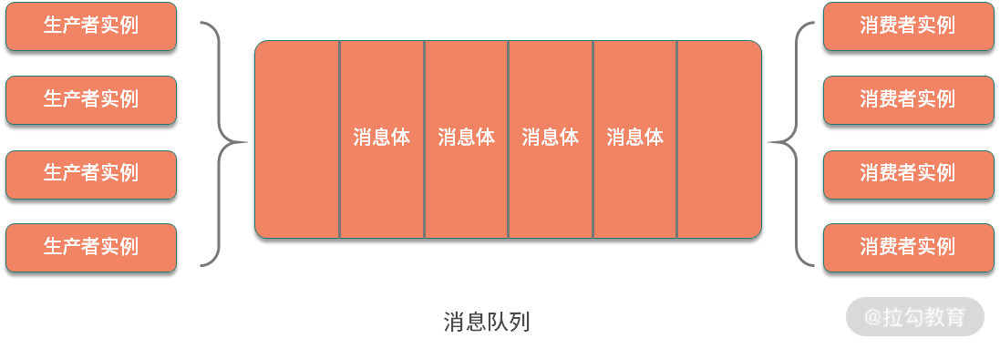
其中消息体是参与生产和消费两方传递的数据，消息格式既可以是简单的字符串，也可以是序列化后的复杂文档信息。队列是消息的载体，用于传输和保存消息，它和数据结构中的队列一样，可以支持先进先出、优先级队列等不同的特性。
消息队列有哪些应用
消息队列可以用于系统内部组件之间的通信，也可以用于系统跟其他服务之间的交互，消息队列的使用，增加了系统的可扩展性。下面把消息队列的应用归纳为以下几点。
系统解耦
设计模式中有一个开闭原则，指的是软件实体应该对扩展开放、对修改关闭，尽量保持系统之间的独立，这里面蕴含的是解耦思想。而消息队列的使用，可以认为是在系统中隐含地加入了一个对外的扩展接口，能够方便地对业务进行解耦，调用方只需要发送消息而不用关注下游逻辑如何执行。
那你可能会有疑问，系统之间的解耦，使用 RPC 服务调用也可以实现，使用消息队列有什么好处吗？使用远程服务调用，需要在其中一个调用方进行显式地编码业务逻辑；如果使用消息队列就不会有这个问题了，系统之间可以更好地实现依赖倒转，这也是设计模式中的一个重要原则。
异步处理
异步化是一个非常重要的机制，在处理高并发、高可用等系统设计时，如果不需要或者限制于系统承载能力，不能立即处理消息，此时就可以应用消息队列，将请求异步化。
异步处理的一个典型场景是流量削峰，我们用电商的秒杀场景来举例。秒杀抢购的流量峰值是很高的，很多时候服务并不能承载这么高的瞬间流量，于是可以引入消息队列，结合限流工具，对超过系统阈值的请求，在消息队列中暂存，等待流量高峰过去以后再进行处理。
请求缓冲
在典型的生产者和消费者模型中，就是通过一个队列来实现缓冲的。使用消息队列，可以作为一个缓冲层，平滑各个业务系统之间处理性能的不同等，在早期的企业应用系统中，有一个企业数据总线（ESB）的概念，实现的就是内部各个系统之间的集成。
数据分发
消息队列有不同的订阅模式，支持一对多的广播机制，可以用来实现数据的分发。典型的比如关系型数据库对 binlog 订阅的处理，由于主库的 binlog 只有一份，但是下游的消费方可能包括各种文件索引、离线数据库等，这时候就可以应用消息队列来实现数据的分发。
除了这些典型应用，消息队列还可以用来实现分布式事务，在第 06 课时“分布式事务有哪些解决方案”中我们提过，利用数据库+本地消息表的方式分布式一致性，是一个非常经典的分布式事务解决方案。
几种常见的消息队列
主流的消息中间件有以下几种，其中每种 MQ 又有其对应的应用场景。
Apache Kafka
大名鼎鼎的 Kafka 是高性能消息队列的代表，Kafka 是 LinkedIn 开源的一个分布式消息系统，主要使用 Scala 语言开发，已经加入 Apache 顶级项目。
Kafka 集群部署时依赖 ZooKeeper 环境，相比其他的消息队列，运维成本要高很多，ZooKeeper 的引入，使得 Kafka 可以非常方便地进行水平扩展，支持海量数据的传输。
Kafka 的另外一个特点是高吞吐率，在消息持久化写入磁盘的过程中，使用了多种技术来实现读写的高性能，包括磁盘的顺序读写、零拷贝技术等。
Apache RocketMQ
RocketMQ 是阿里巴巴开源的一款消息中间件，使用Java语言开发，在阿里内部应用非常广泛，很多高并发的业务场景下都有 RocketMQ 的应用。
RocketMQ 经过了双十一的检验，消息传递的稳定性和可靠性都比较有保障。以消息持久化为例，我们知道，Linux 文件在写入磁盘时，也就是常说的刷盘操作，因为存在缓存，可能会出现数据丢失的情况，RocketMQ 为了保证数据一致性，在写入磁盘时支持同步刷盘方式，即消息存储磁盘成功，才会返回消息发送成功的响应。
RocketMQ 在实现上有很多这种细节的设计，尽可能地保证了消息投递中的顺序一致性及可靠性，并且优化了响应时间，特别适合电商等相对复杂的业务中应用。
Apache RabbitMQ
RabbitMQ 是使用 Erlang 语言编写的一个开源消息队列，功能比较全面，支持多种消息传输的协议。
我们知道不同的消息队列有很多，为了约束其实现，也就有了一些对应的实现标准，AMQP 是一个异步消息传输的网络协议，RabbitMQ 是典型实现代表，除了 AMQP，RabbitMQ 同时支持 MQTT、STOMP 等协议，对于具体的协议内容，这里不展开，感兴趣的同学可以去找相关资料了解下。Kafka 和 RocketMQ 实现的是自定义协议，实现起来灵活度更高。
除了顺序传输，RabbitMQ 还可以支持优先级队列等特性，不过，它不适合处理大数据量的消息，一旦出现消息堆积，性能下降比较快，所以 RabbitMQ 比较适合企业级应用。
除了上面提到的三款主流消息队列，还有 ActiveMQ、ZeroMQ 等，也都有各自适合的应用场景。思考一下，如果在一个电商系统的构建中，这三款消息队列可以怎样组合使用呢？
Kafka 可以在各类数据埋点中使用，比如电商营销的转化率日志收集和计算，另外，Kafka 的高性能使得特别它适合应用在各类监控、大数据分析等场景。
RocketMQ 对一致性的良好保证，可以应用在电商各级业务调用的拆分中，比如在订单完成后通知用户，物流信息更新以后对订单状态的更新等。
RabbitMQ 则可以在数据迁移、系统内部的业务调用中应用，比如一些后台数据的同步、各种客服和 CRM 系统。
总结
这一课时分享了消息队列的知识点，包括消息队列的结构、消息队列的应用场景，以及几种常见的消息队列的应用。
通过本课时的学习，你已经了解了消息队列的基本应用，你可以结合自己的工作，思考一下都在哪些地方应用了消息队列，以及发挥了什么作用。继续扩展一下，如果让你来设计一个消息队列，应该怎么设计呢？比如消息体是否需要持久化？如何存储消息，如何保证消息的顺序投递，如果出现重复消费该如何解决，欢迎留言分享你的想法，关于这些问题的讨论，也会在后面的课时中展开讲解。
31 集群消费和广播消费有什么区别？
为了规范消息队列中生产者和消费者的行为，消息中间件的构建中会实现不同的消费模型。这一课时讨论的话题来自 RocketMQ 中具体的两种消费模式，是消息队列中两种典型消费模型的实现。接下来我们就一起来看一下消息队列都有哪些消费模型，以及对应的具体实现。
消息队列的消费模型
先来看一下消息队列的两种基础模型，也就是点对点和发布订阅方式。
这两种模型来源于消息队列的 JMS 实现标准，消息队列有不同的实现标准，比如 AMQP 和 JMS，其中 JMS（Java Message Service）是 Java 语言平台的一个消息队列规范，上一课时中讲过的 ActiveMQ 就是其典型实现。
AMQP 和 JMS 的区别是，AMQP 额外引入了 Exchange 的 Binding 的角色，生产者首先将消息发送给 Exchange，经过 Binding 分发给不同的队列。

和 JMS 一样，AMQP 也定义了几种不同的消息模型，包括 direct exchange、topic change、headers exchange、system exchange 等。其中 direct exchange 可以类比点对点，其他的模型可以类比发布订阅，这里不做展开介绍了，具体可参考 AMPQ 的其他资料查阅。
点到点模型
在点对点模型下，生产者向一个特定的队列发布消息，消费者从该队列中读取消息，每条消息只会被一个消费者处理。

发布/订阅模型
大部分人在浏览资讯网站时会订阅喜欢的频道，比如人文社科，或者娱乐新闻，消息队列的发布订阅也是这种机制。在发布订阅模型中，消费者通过一个 Topic 来订阅消息，生产者将消息发布到指定的队列中。如果存在多个消费者，那么一条消息就会被多个消费者都消费一次。

点对点模型和发布订阅模型，主要区别是消息能否被多次消费，发布订阅模型实现的是广播机制。如果只有一个消费者，则可以认为是点对点模型的一个特例。
现代消息队列基本都支持上面的两种消费模型，但由于消息队列自身的一些特性，以及不同的应用场景，具体实现上还有许多的区别。下面看一下几种代表性的消息队列。
Kafka 的消费模式
先来看一下 Kafka，在分析 Kafka 消费模式之前，先来了解一下 Kafka 的应用设计。
Kafka 系统中的角色可以分为以下几种：

- Producer：消息生产者，负责发布消息到 broker。
- Consumer：消息消费者，从 broker 中读取消息。
- Broker：Broker 在 Kafka 中是消息处理的节点，可以对比服务器，一个节点就是一个 broker，Kafka 集群由一个或多个 broker 组成。
- Topic：Topic 的语义和发布订阅模型中的主题是一致的，Kafka 通过 Topic 对消息进行归类，每一条消息都需要指定一个 Topic。
- ConsumerGroup：消费组是对消费端的进一步拆分，每个消费者都属于一个特定的消费组，如果没有指定，则属于默认的消费组。
上面是一个 Kafka 集群的示意图，图中的 ZooKeeper 在 Kafka 中主要用于维护 Offset 偏移量，以及集群下的 Leader 选举，节点管理等。ZooKeeper 在 Kafka 中的作用，也是消息队列面试中的一个高频问题，感兴趣的同学可以去扩展一下。
从上面的分析中可以看到，Kafka 的消费是基于 Topic 的，属于发布订阅机制，它会持久化消息，消息消费完后不会立即删除，会保留历史消息，可以比较好地支持多消费者订阅。
RocketMQ 的消费模式
RocketMQ 实现的也是典型的发布订阅模型，在细节上和 Kafka 又有一些区别。RocketMQ 的系统设计主要由 NameServer、Broker、Producer 及 Consumer 几部分构成。

NameServer 在 RocketMQ 集群中作为节点的路由中心，可以管理 Broker 集群，以及节点间的通信，在后面的消息队列高可用课时，我会进一步分析集群下的高可用实现。
具体的消费模式中，RocketMQ 和 Kafka 类似，除了 Producer 和 Consumer，主要分为 Message、Topic、Queue 及 ConsumerGroup 这几部分，同时，RocketMQ 额外支持 Tag 类型的划分。
- Topic：在 RocketMQ 中，Topic 表示消息的第一级归属，每条消息都要有一个 Topic，一个 Group 可以订阅多个主题的消息。对于电商业务，根据业务不同，可以分为商品创建消息、订单消息、物流消息等。
- Tag：RocetMQ 提供了二级消息分类，也就是 Tag，使用起来更加灵活。比如在电商业务中，一个订单消息可以分为订单完成消息、订单创建消息等，Tag 的添加，使得 RokcetMQ 中对消息的订阅更加方便。
- ConsumerGroup：一个消费组可以订阅多个 Topic，这个是对订阅模式的扩展。
在 RocketMQ 中，一个 Topic 下可以有多个 Queue，正是因为 Queue 的引入，使得 RocketMQ 的集群具有了水平扩展能力。
在上一课时中提过， Kafka 使用 Scala 实现、RabbitMQ 使用 Erlang 实现，而 RokcetMQ 是使用 Java 语言实现的。从编程语言的角度，RocketMQ 的源码学习起来比较方便，也推荐你看一下 RokcetMQ 的源码，点击这里查看源码。
RocketMQ 的消费模式分为集群消费和广播消费两种，默认是集群消费。那么，在 RocketMQ 中这两种模式有什么区别呢?
集群消费实现了对点对点模型的扩展，任意一条消息只需要被集群内的任意一个消费者处理即可，同一个消费组下的各个消费端，会使用负载均衡的方式消费。对应 Topic 下的信息，集群消费模式的示意图如下。

广播消费实现的是发布订阅模式，发送到消费组中的消息，会被多个消费者分别处理一次。在集群消费中，为了将消息分发给消费组中的多个实例，需要实现消息的路由，也就是我们常说的负载均衡，在 RocketMQ 中，支持多种负载均衡的策略，主要包括以下几种：
- 平均分配策略，默认的策略
- 环形分配策略
- 手动配置分配策略
- 机房分配策略
- 一致性哈希分配策略
以上的几种策略，可以在 RocketMQ 的源码中 AllocateMessageQueueStrategy 接口相关的实现中：

总结
这一课时分析了消息队列中的两种消息模型，以及不同消息模型在 Kafka 和 RocketMQ 等消息队列中的具体实现。
消息模型的概念是分布式消息的基础知识，不同的消息模型会影响消息队列的设计，进而影响消息队列在消息一致性、时序性，以及传输可靠性上的实现方式。了解了这些，才能更好地展开关于消息队列各种特性的讨论。
在分布式系统中，为了保证高可用，引入了各种集群和副本技术，使得实际消息队列中的实现往往要比模型定义中复杂很多。上面提到的 Kafka 和 RocketMQ 实现的都是以发布订阅模式为主，但是在另外一个消息队列 RabbitMQ 中，实现的就是点对点的消息传输模式。RabbitMQ 是 AMQP 模型的典型实现，那么 RabbitMQ 是如何实现集群扩展的呢，以及集群模式有哪些区别？感兴趣的同学可以找相关的资料来了解一下，欢迎留言分享。
32 业务上需要顺序消费，怎么保证时序性？
消息传输和消费的有序性，是消息队列应用中一个非常重要的问题，在分布式系统中，很多业务场景都需要考虑消息投递的时序。例如，电商中的订单状态流转、数据库的 binlog 分发，都会对业务的有序性有要求。今天我们一起来看下，消息队列顺序消费的相关内容。
消息顺序消费有哪些困难
我们知道，消息队列中的队列是一个有序的数据结构，消息传递是顺序的，但在实际开发中，特别是在分布式场景下，消息的有序性是很难保证的，那么为什么实现有序性这么困难呢？下面进行拆解。
分布式的时钟问题
有序性可以分为业务上的有序和时间上的有序，先看一下时钟上的有序。在分布式环境下，消息的生产者、消费者和队列存储，可能分布在不同的机器上，不同的机器使用各自的本地时钟，由于服务器存在时钟偏斜等问题，本地时间会出现不一致，所以不能用消息发送和到达的时间戳作为时序判断标准。另一方面，分布式系统下缺乏全局时钟，这就使得绝对的时间顺序实现起来更加困难。
消息发送端和消费端的集群
在目前大多数消息队列的应用中，生产者和消费者都是集群部署，通过 ProducerGroup 和 ConsumerGroup 的方式来运行。
生产者如果存在多个发送实例，那么各个发送方的时间戳无法同步，所以消息发送端发送时的时序不能用来作为消息发送的有序判断。
同样的，消费端可能存在多个实例，即使队列内部是有序的，由于存在消息的分发过程，不同消费实例的顺序难以全局统一，也无法实现绝对的有序消费。
消息重传等的影响
我们知道，消息队列在传输消息时，可能会出现网络抖动导致的消息发送失败等，对这种场景的兼容，一般是通过进行合理地重传。消息的重传发生在什么时候是不可预知的，这也会导致消息传输出现乱序。
网络及内部并发
消息生产者集群或者消费端集群的方式，无法保证消息的绝对时序，如果只有一个消费端或者只有一个生产端呢？可以考虑这样一个场景，如果单纯地依靠消息队列本身来保证，那么在跨实例的情况下，因为网络传输的不稳定会有先后顺序，以及内部消费的并发等，仍然无法实现绝对有序。
通过上面的分析可以看到，保证消息绝对的有序，实现起来非常困难，除非在服务器内部，并且一个生产者对应一个消费者。但是这种情况的消息队列肯定是无法在实际业务中应用的，那么解决消息队列的有序性有哪些手段呢？下面从消息队列本身，以及业务设计上进行分析。
不同消息队列对顺序消费的保证
消息传输的有序性和不同的消息队列，不同业务场景，以及技术方案的实现细节等都有关系，解决消息传输的有序性，需要依赖消息队列提供对应的方式。
从消息队列自身的角度，可以分为全局有序和局部有序。当前大部分消息队列的应用场景都是集群部署，在全局有序的情况下，无法使用多分区进行性能的优化。在实际开发中，一般是应用局部有序，把业务消息分发到一个固定的分区，也就是单个队列内传输的方式，实现业务上对有序的要求。
以 Kafka 和 RocketMQ 为例，都实现了特定场景下的有序消息。
Kafka 顺序消息
Kafka 保证消息在 Partition 内的顺序，对于需要确保顺序的消息，发送到同一个 Partition 中就可以。单分区的情况下可以天然满足消息有序性，如果是多分区，则可以通过制定的分发策略，将同一类消息分发到同一个 Partition 中。
例如，电商系统中的订单流转信息，我们在写入 Kafka 时通过订单 ID 进行分发，保证同一个订单 ID 的消息都会被发送到同一个 Partition 中，这样消费端在消费的时候，可以保证取出数据时是有序的。
一个比较特殊的情况是消息失败重发的场景，比如同一个订单下的消息 1 和 2，如果 1 发送失败了，重发的时候可能会出现在 2 的后边，这种情况可以通过设置“max.in.flight.requests.per.connection”参数来解决，该参数可以限制客户端能够发送的未响应请求的个数，还可以在一定程度上避免这种消息乱序。
RocketMQ 顺序消息
RocketMQ 对有序消息的保证和 Kafka 类似，RocketMQ 保证消息在同一个 Queue 中的顺序性，也就是可以满足队列的先进先出原则。
如果把对应一个业务主键的消息都路由到同一个 Queue 中就可以实现消息的有序传输，并且 RocketMQ 额外支持 Tag 的方式，可以对业务消息做进一步的拆分，在消费时相对更加灵活。
从业务角度保证顺序消费
在我之前的项目中，消息消费的有序性，归根到底是一个业务场景的设计问题，可以在业务中进行规避，或者通过合理的设计方案来解决。
消息传输的有序性是否有必要
山不过来，我就过去，解决一个问题，如果从正面没有很好的解决方案，那么我们就可以考虑是否绕过它。考虑在你的业务中，是否必须实现绝对的消息有序，或者是否必须要有消息队列这样的技术手段。
比如在一个订单状态消息流转的业务场景中，订单会有创建成功、待付款、已支付、已发货的状态，这几个状态之间是单调流动的，也就是说，订单状态的更新需要保证有序性。考虑一下，如果我们要实现的功能是根据发货的状态，进行物流通知用户的功能，实际上因为这个状态是单调不可逆向的，我们可以忽略订单状态的顺序，只关注最后是否已发货的状态。
也就是说，在这个场景下，订单状态流转虽然是要考虑顺序，但是在具体的这个功能下，实际上不需要关注订单状态消息消费的时序。
业务中如何实现有序消费
除了消息队列自身的顺序消费机制，我们可以合理地对消息进行改造，从业务上实现有序的目的。具体的方式有以下几种。
- 根据不同的业务场景，以发送端或者消费端时间戳为准
比如在电商大促的秒杀场景中，如果要对秒杀的请求进行排队，就可以使用秒杀提交时服务端的时间戳，虽然服务端不一定保证时钟一致，但是在这个场景下，我们不需要保证绝对的有序。
- 每次消息发送时生成唯一递增的 ID
在每次写入消息时，可以考虑添加一个单调递增的序列 ID，在消费端进行消费时，缓存最大的序列 ID，只消费超过当前最大的序列 ID 的消息。这个方案和分布式算法中的 Paxos 很像，虽然无法实现绝对的有序，但是可以保证每次只处理最新的数据，避免一些业务上的不一致问题。
- 通过缓存时间戳的方式
这种方式的机制和递增 ID 是一致的，即当生产者在发送消息时，添加一个时间戳，消费端在处理消息时，通过缓存时间戳的方式，判断消息产生的时间是否最新，如果不是则丢弃，否则执行下一步。
总结
这一课时讨论了消息队列有序性的话题，消息的有序性可以分为时间上的有序和业务上的有序。
通过上面的分析可以看到，绝对的时间有序实现起来是非常困难的，即使实现了这样的消息队列，但在实际应用中的意义并不大。消息队列只是一个消息传输的解决方案，不是软件开发中的银弹，一般来说，我们可以通过业务中不同的场景，进行合理的设计，实现业务上的有序性。
现在你可以思考一下，在你的项目中，哪些场景要求消息传输和消费的有序性，具体是如何解决的？欢迎留言进行分享。
33 消息幂等：如何保证消息不被重复消费？
应用的幂等是在分布式系统设计时必须要考虑的一个方面，如果对幂等没有额外的考虑，那么在消息失败重新投递，或者远程服务重试时，可能会出现许多诡异的问题。这一课时一起来看一下，在消息队列应用中，如何处理因为重复投递等原因导致的幂等问题。
对业务幂等的理解
首先明确一下，幂等并不是问题，而是业务的一个特性。幂等问题体现在对于不满足幂等性的业务，在消息重复消费，或者远程服务调用失败重试时，出现的数据不一致，业务数据错乱等现象。
幂等最早是一个数学上的概念，幂等函数指的是对一个函数或者方法，使用相同的参数执行多次，数据结果是一致的。
以 HTTP 协议为例，我们知道 HTTP 协议中定义了交互的不同方法，比如 GET 和 POST，以及 PUT、DELETE 等，其中 GET、DELETE 等方法都是幂等的，而 POST 方法不是。
这个很好理解，GET 方法用于获取资源，不管调用多少次接口，结果都不会改变，所以是幂等的，DELETE 等可以类比。
这里有一点需要注意，业务上的幂等指的是操作不影响资源本身，并不是每次读取的结果都保证一致。比如通过 GET 接口查询一条订单记录，在多次查询的时间段内，订单状态可能会有新的更新而发生变化，查询到的数据可能不同，但是读接口本身仍然是一个幂等的操作。
在业务开发中对数据的操作主要是 CRUD，即在做数据处理时的 Create、Read、Update、Delete 这几种操作。很明显，这里的 Create 操作不是幂等的，Update 操作可能幂等也可能不幂等。例如，现在有一个订单表，下面的操作就是幂等的：
UPDATE order SET status=1 WHERE id=100
下面的这个操作，就不符合幂等性的要求：
UPDATE order SET price=price+1 WHERE id=100
对应的，Read 和 Delete 操作则是幂等的。
各类中间件对幂等性的处理
幂等处理不好，可能会出现很多问题，比如使用 binlog 分发进行数据同步，如果数据库更新消息被多次消费，可能会导致数据的不一致。
- 远程服务调用的幂等问题
因为存在网络抖动等，远程服务调用出现失败，一般是通过配置重试，保证请求调用成功率，提高整体服务的可用性。
以 Apache Dubbo 为例，我一直觉得 Dubbo 对容错的支持特别全面，它支持多种集群容错的方式，并且可以针对业务特性，配置不同的失败重试机制，包括 Failover 失败自动切换、Failsafe 失败安全、Failfast 快速失败等。比如在 Failover 下，失败会重试两次；在 Failfast 下，失败则不会重试，直接抛出异常。
Dubbo 的容错机制考虑了多种业务场景的需求，根据不同的业务场景，可以选择不同的容错机制，进而有不同的重试策略，保证业务正确性。
Dubbo RPC 的重试和容错机制不是本课时的重点，如果想对 Dubbo 集群容错方式有进一步的了解，可以点击查看 Dubbo 官方文档。
- 消息消费中的重试问题
从本质上来讲，消息队列的消息发送重试，和微服务中的失败调用重试是一样的，都是通过重试的方式，解决网络抖动、传输不稳定等导致的偶发调用失败。这两者其实是一个问题，两个问题的解决方式也可以互相借鉴。
在分布式系统中，要解决这个问题，需从中间件和业务的不同层面，来保证服务调用的幂等性。下面从消息队列投递语义，以及业务中如何处理幂等，两个方面进行拆解。
消息投递的几种语义
为了进一步规范消息的调用，业界有许多消息队列的应用协议，其中也对消息投递标准做了一些约束。
- At most once
消息在传递时，最多会被送达一次，在这种场景下，消息可能会丢，但绝不会重复传输，一般用于对消息可靠性没有太高要求的场景，比如一些允许数据丢失的日志报表、监控信息等。
- At least once
消息在传递时，至少会被送达一次，在这种情况下，消息绝不会丢，但可能会出现重复传输。
绝大多数应用中，都是使用至少投递一次这种方式，同时，大部分消息队列都支持到这个级别，应用最广泛。
- Exactly once
每条消息肯定会被传输一次且仅传输一次，并且保证送达，因为涉及发送端和生产端的各种协同机制，绝对的 Exactly once 级别是很难实现的，通用的 Exactly once 方案几乎不可能存在，可以参考分布式系统的「FLP 不可能定理」。
我觉得消息投递的语义，和数据库的隔离级别很像，不同语义的实现，付出的成本也不一样。上面定义的消息投递语义，主要在消息发送端，在消费端也可以定义类似的消费语义，比如消费端保证最多被消费一次，至少被消费一次等，这两种语义是相对应的，可以认为是同一个级别的两种描述。
不同消息队列支持的投递方式
以 RocketMQ 为例，我们来看下对应的投递支持。
RocketMQ 支持 At least once 的投递语义，也就是保证每个消息至少被投递一次。在 RocketMQ 中，是通过消费端消费的 ACK 机制来实现的：
在消息消费过程中，消费端在消息消费完成后，才返回 ACK，如果消息已经 pull 到本地，但还没有消费，则不会返回 ack 响应。
在业务上应用 RcoketMQ 时，也可以根据不同的业务场景实现其他级别的投递语义，比如最多送达一次等，由于篇幅限制这里不展开详细讲解了，感兴趣的同学可以查阅 RocketMQ 相关的源码和文档学习。
业务上如何处理幂等
消息消费的幂等和我们在上一课时中提到的时序性一样，本质上也是一个系统设计的问题。
消息队列是我们为了实现系统目标而引入的手段之一，并且分布式消息队列天然存在消费时序、消息失败重发等问题。所以要保证消息队列的消费幂等，还是要回到业务中，结合具体的设计方案解决。
天然幂等不需要额外设计
参考上面对 HTTP 协议方法的幂等性分析，有部分业务是天然幂等的，这部分业务，允许重复调用，即允许重试，在配置消息队列时，还可以通过合理的重试，来提高请求的成功率。
利用数据库进行去重
业务上的幂等操作可以添加一个过滤的数据库，比如设置一个去重表，也可以在数据库中通过唯一索引来去重。
举一个例子，现在要根据订单流转的消息在数据库中写一张订单 Log 表，我们可以把订单 ID 和修改时间戳做一个唯一索引进行约束。
当消费端消费消息出现重复投递时，会多次去订单 Log 表中进行写入，由于我们添加了唯一索引，除了第一条之外，后面的都会失败，这就从业务上保证了幂等，即使消费多次，也不会影响最终的数据结果。
设置全局唯一消息 ID 或者任务 ID
还记得我们在第 15 课时「分布式调用链跟踪」中，提到的调用链 ID 吗？调用链 ID 也可以应用在这里。我们在消息投递时，给每条业务消息附加一个唯一的消息 ID，然后就可以在消费端利用类似分布式锁的机制，实现唯一性的消费。
还是用上面记录订单状态流转消息的例子，我们在每条消息中添加一个唯一 ID，消息被消费后，在缓存中设置一个 Key 为对应的唯一 ID，代表数据已经被消费，当其他的消费端去消费时，就可以根据这条记录，来判断是否已经处理过。
总结
这一课时分享了消息幂等的知识点，包括对幂等的理解，以及消息队列投递时的不同语义，另外简单介绍了业务上处理幂等的两种方式。
西方有一句谚语：当你有了一个锤子，你看什么都像钉子。在我刚开始学习分布式系统时，学习了各种中间件，每个中间件都希望能用上，这其实脱离了系统设计的初衷。
课程内容到这里，已经展开了许多分布式系统的常用组件，提到这个谚语，主要是希望你在做技术方案，特别是做分布式系统设计方案时，不是为了设计而设计。方案设计的目的是实现业务目标，并不是在系统中加入各种高大上的中间件，这个方案就是正确的。
我之前读过一本《系统之美》的图书，从复杂系统的角度来看，系统中的元素越多，为了维持系统的平衡，需要付出的势能必然也越大。
对应到系统设计中，系统拆解的粒度越大，对应各个组件之间的耦合就越小，但是需要解决的组件协同问题也越多，实现数据的一致性也越困难。我们在系统设计时，要避免过度设计，把握技术方案的核心目的，在这个基础上进行针对性设计。
对于这一课时的内容，你可以思考下当前的项目中是如何处理重复消息的，有没有考虑消息处理的幂等性？欢迎留言分享。
34 高可用：如何实现消息队列的 HA？
管理学上有一个木桶理论，一只水桶能装多少水取决于它最短的那块木板，这个理论推广到分布式系统的可用性上，就是系统整体的可用性取决于系统中最容易出现故障，或者性能最低的组件。系统中的各个组件都要进行高可用设计，防止单点故障，消息队列也不例外，这一课时一起来看一下消息中间件的高可用设计。
消息队列高可用手段
一般来说，分布式系统的高可用依赖副本技术，副本的引入，使得分布式系统可以更好地进行扩展，当出现某个节点宕机时，由于副本的存在，也能够快速地进行替换，提升系统整体可靠性，防止数据丢失。
消息队列如何实现高可用的问题，如果出现在面试中，一般是作为一个相对开放的话题，你可以根据自己对分布式系统的了解，围绕副本、集群、一致性等和面试官展开讨论。消息队列在系统中承担了数据存储和数据传输的两种功能，所以消息队列的高可用设计，也比数据库、文件索引等持久性存储要复杂。
下面的内容，我以 Apache Kafka 为例，简单介绍一下消息队列的高可用设计。
Kafka 的副本机制
Kafka 的高可用实现主要依赖副本机制，我把 Kakfa 的高可用，拆分成几个小问题来讲解，一来是为了更好地理解，二来很多细节问题也可能出现在面试中，方便你更好地掌握。
Broker 和 Partition 的关系
在分析副本机制之前，先来看一下 Broker 和 Partition 之间的关系。Broker 在英文中是代理、经纪人的意思，对应到 Kafka 集群中，是一个 Kafka 服务器节点，Kafka 集群由多个 Broker 组成，也就是对应多个 Kafka 节点。
Kafka 是典型的发布订阅模式，存在 Topic 的概念，一个 Broker 可以容纳多个 Topic，也就是一台服务器可以传输多个 Topic 数据。
不过 Topic 是一个逻辑概念，和物理上如何存储无关，Kafka 为了实现可扩展性，将一个 Topic 分散到多个 Partition 中，这里的 Partition 就是一个物理概念，对应的是具体某个 Broker 上的磁盘文件。
从 Partition 的角度，Kafka 保证消息在 Partition 内部有序，所以 Partition 是一段连续的存储，不能跨多个 Broker 存在，如果是在同一个 Broker 上，也不能挂载到多个磁盘。从 Broker 的角度，一个 Broker 可以有多个 Topic，对应多个 Partition。
除此之外，Partition 还可以细分为一个或者多个 Segment，也就是数据块，每个 Segment 都对应一个 index 索引文件，以及一个 log 数据文件。对 Partition 的进一步拆分，使得 Kafka 对 分区的管理更加灵活。
Replication 之间如何同步数据
基于 Kafka 的系统设计，你可以思考一下，如果没有副本，那么当某个 Kafka Broker 挂掉，或者某台服务器宕机（可能部署了多个 Broker），存储在其上的消息就不能被正常消费，导致系统可用性降低，或者出现数据丢失，这不符合分布式高可用的要求，出现单点故障，也不满足 Kafka 数据传输持久性和投递语义的设计目标。
Kafka 中有一个配置参数 replication-factor（副本因子），可以调整对应分区下副本的数量，注意副本因子数包含原来的 Partition，如果需要有 2 个副本，则要配置为 3。
假设现在有一个订单的 Topic，配置分区数为 3，如果配置 replication-factor 为 3，那么对应的有三个分区，每个分区都有 3 个副本，在有多个副本的情况下，不同副本之间如何分工呢？
每个分区下配置多个副本，多个副本之间为了协调，就必须有一定的同步机制。Kafka 中同一个分区下的不同副本，有不同的角色关系，分为 Leader Replication 和 Follower Replication。Leader 负责处理所有 Producer、Consumer 的请求，进行读写处理，Follower 作为数据备份，不处理来自客户端的请求。
Follower 不接受读写请求，那么数据来自哪里呢？它会通过 Fetch Request 方式，拉取 Leader 副本的数据进行同步。
Fetch 这个词一般用于批量拉取场景，比如使用 Git 进行版本管理的 fetch 命令，在 Kafka 中，会为数据同步开辟一个单独的线程，称为 ReplicaFetcherThread，该线程会主动从 Leader 批量拉取数据，这样可以高性能的实现数据同步。
Replication 分配有哪些约定
Kafka 中分区副本数的配置，既要考虑提高系统可用性，又要尽量减少机器资源浪费。
一方面，为了更好地做负载均衡，Kafka 会将所有的 Partition 均匀地分配到整个集群上；另一方面，为了提高 Kafka 的系统容错能力，一个 Partition 的副本，也要分散到不同的 Broker 上，否则就去了副本的意义。
一般来说，为了尽可能地提升服务的可用性和容错率，Kafka 的分区和副本分配遵循如下的原则：
一个 Topic 的 Partition 数量大于 Broker 的数量，使 Partition 尽量均匀分配到整个集群上； 同一个分区，所有的副本要尽量均匀分配到集群中的多台 Broker 上，尽可能保证同一个 分区下的主从副本，分配到不同的 Broker 上。
Leader Replication 如何选举
一旦牵扯到数据同步，就必然会有 Leader 节点宕机以后重新选择的问题。引入 Replication 机制之后，同一个 Partition 可能会有多个副本，如果Leader挂掉，需要在这些副本之间选出一个 新的Leader。
Kafka 数据同步中有一个 ISR（In-Sync Replicas，副本同步队列）的概念，Leader 节点在返回 ACK 响应时，会关注 ISR 中节点的同步状态，所以这个队列里的所有副本，都和 Leader 保持一致。
Kafka 的 ISR 依赖 ZooKeeper 进行管理，ISR 副本同步队列中的节点，拥有优先选举的权利，因为 ISR 里的节点和 Leader 保持一致，如果必须满足一致性，只有 ISR 里的成员才能被选为 Leader。
如果某个 Broker 挂掉，Kafka 会从 ISR 列表中选择一个分区作为新的 Leader 副本。如果 ISR 列表是空的，这时候有两个策略，一个是直接抛出 NoReplicaOnlineException 异常，保证一致性；另外一个是从其他副本中选择一个作为 Leader，则可能会丢失数据，具体需要根据业务场景进行配置。
所有的副本都挂了怎么办
现在考虑一个极端情况，如果一个分区下的所有副本都挂掉了，那如何处理呢？在这种情况下，Kafka 需要等待某个副本恢复服务，具体可以有两种方案：
- 等待 ISR 中的某个副本恢复正常，作为新的 Leader；
- 等待任一个 副本恢复正常，作为新的 Leader。
在第二种方案下，由于选择的 Leader 节点可能不是来自 ISR，所以可能会存在数据丢失，不能保证已经包含全部 Commit 的信息；如果选择第一种方案，会保证数据不丢失，但是如果全部的 ISR 节点都彻底宕机，系统就无法对外提供服务了，对应的分区会彻底不可用。
方案一优先保证数据一致性，方案二优先保证服务可用性，在实际配置中，可以根据不同的业务场景选择不同的方案。
总结
这一课时分享了消息队列高可用相关的知识，并且针对 Kafka 的高可用实现，进行了简单的分析。
实际上，Kafka 添加副本机制之后，需要解决的细节问题有很多。举个例子，我们在第 29 课时讲过消息投递的不同语义，比如 At Most Once、At Least Once 等，当添加了 Partition 之后，Kafka 需要保持投递语义的完整，那么在生产者进行投递时，因为要考虑不同副本的状态，Leader 节点如何进行 ACK 呢？很明显，如果 Leader 节点等待所有的 Follower 节点同步后才返回 ACK，系统整体的性能和吞吐量会大幅降低，这也是 Kafka 引入 ISR 副本分层管理的原因之一。
除了 Kafka 以外，RocketMQ、RabbitMQ 等消息队列又是怎么实现高可用的呢？感兴趣的同学可以了解一下，欢迎留言分享。
35 消息队列选型：Kafka 如何实现高性能？
在分布式消息模块的最后 2 个课时中，我将对消息队列中应用最广泛的 Kafka 和 RocketMQ 进行梳理，以便于你在应用中可以更好地进行消息队列选型。另外，这两款消息队列也是面试的高频考点。
所以，这一课时我们就一起来看一下，Kafka 是如何实现高性能的。
Kafka 的高性能
不知道你有没有了解过自己电脑的配置？
我们一般会认为高性能是和高配置联系在一起的，比如大内存比小内存快，8 核的机器比 4 核的机器快。我身边也有一些朋友是攒机爱好者，对各种硬件配置如数家珍。
对于服务器来说，家用电脑的性能与配置的关系也同样适用——价格更昂贵的服务器会有更好的性能——这并不是一件需要大张旗鼓去讲述的事情。但 Kafka 所实现的高性能不需要太高配置的机器，它使用普通服务器就能实现 TB 级别的传输性能。这一点也是 Kafka 对外宣传的一个特性，也正是因为这一点，Kafka 被广泛运用于大数据处理、流式计算、各类日志监控等需要处理海量数据的场景。
Kafka 实现高性能的手段，是面试中经常被问到的问题。下面我从 Kafka 的磁盘读写、批量优化、零拷贝等方面，对 Kafka 的高性能特性进行分析。
分析 Kafka 的高性能会涉及操作系统的一些知识，比如文件系统、PageCache等，作为大学计算机专业的必修课，这些概念就不展开了。如果你觉得这方面比较生疏，可以回顾下操作系统课程的相关知识，找一些经典教材来学习。
磁盘顺序读写
Kafka 消息是存储在磁盘上的，大家都知道，普通的机械磁盘读取是比较慢的，那 Kafka 文件在磁盘上，如何实现高性能的读写呢？
Kafka 对磁盘的应用，得益于消息队列的存储特性。与普通的关系型数据库、各类 NoSQL 数据库等不同，消息队列对外提供的主要方法是生产和消费，不涉及数据的 CRUD。所以在写入磁盘时，可以使用顺序追加的方式来避免低效的磁盘寻址。
我们知道，数据存储在硬盘上，而硬盘有机械硬盘和固态硬盘之分。机械硬盘成本低、容量大，但每次读写都会寻址，再写入数据（在机械硬盘上，寻址是一个物理动作，耗时最大）；SSD 固态硬盘性能很高，有着非常低的寻道时间和存取时间，但成本也特别高。
为了提高在机械硬盘上读写的速度，Kafka 使用了顺序读写。在一个分区内，Kafka 采用 append 的方式进行顺序写入，这样即使是普通的机械磁盘，也可以有很高的性能。
除了顺序读写，在提到磁盘写入的时候，还有一个问题避免不了，那就是何时进行刷盘。
在 Linux 系统中，当我们把数据写入文件系统之后，其实数据是存放在操作系统的 page cache 里面，并没有刷到磁盘上，如果服务器宕机，数据就丢失了。
写到磁盘的过程叫作 Flush。刷盘一般有两种方式，一种是依靠操作系统进行管理，定时刷盘，另一种则是同步刷盘，比如调用 fsync 等系统函数。
同步刷盘保证了数据的可靠性，但是会降低整体性能。Kafka 可以配置异步刷盘，不开启同步刷盘，异步刷盘不需要等写入磁盘后返回消息投递的 ACK，所以它提高了消息发送的吞吐量，降低了请求的延时，这也是 Kafka 磁盘高性能的一个原因。
批量操作优化
批量是一个常见的优化思路，比如大家熟悉的 Redis，就实现了 pipeline 管道批量操作。Kafka 在很多地方也应用了批量操作进行性能优化。
Kafka 的批量包括批量写入、批量发布等。它在消息投递时会将消息缓存起来，然后批量发送；同样，消费端在消费消息时，也不是一条一条处理的，而是批量进行拉取，提高了消息的处理速度。
除了批量以外，Kafka 的数据传输还可以配置压缩协议，比如 Gzip 和 Snappy 压缩协议。虽然在进行数据压缩时会消耗少量的 CPU 资源，但可以减少网络传输的数据大小、优化网络 IO、提升传输速率。
Sendfile 零拷贝
零拷贝是什么？它是操作系统文件读写的一种技术。
零拷贝不是不需要拷贝，而是减少不必要的拷贝次数，这里会涉及 Linux 用户态和内核态的区别。
用户进程是运行在用户空间的，不能直接操作内核缓冲区的数据。所以在用户进程进行系统调用的时候，会由用户态切换到内核态，待内核处理完之后再返回用户态。
传统的 IO 流程，需要先把数据拷贝到内核缓冲区，再从内核缓冲拷贝到用户空间，应用程序处理完成以后，再拷贝回内核缓冲区。这个过程中发生了多次数据拷贝。
为了减少不必要的拷贝，Kafka 依赖 Linux 内核提供的 Sendfile 系统调用。 在 Sendfile 方法中，数据在内核缓冲区完成输入和输出，不需要拷贝到用户空间处理，这也就避免了重复的数据拷贝。在具体的操作中，Kafka 把所有的消息都存放在单独的文件里，在消息投递时直接通过 Sendfile 方法发送文件，减少了上下文切换，因此大大提高了性能。
MMAP 技术
Kafka 是使用 Scala 语言开发的。Scala 运行在 Java 虚拟机上，也就是说 Kafka 节点运行需要 JVM 的支持，但是 Kafka 并不直接依赖 JVM 堆内存。如果 Kafka 所有的数据操作都在堆内存中进行，则会对堆内存造成非常大的压力，影响垃圾回收处理，增加 JVM 的停顿时间和整体延迟。
因此，除了 Sendfile 之外，还有一种零拷贝的实现技术，即 Memory Mapped Files。
Kafka 使用 Memory Mapped Files 完成内存映射，Memory Mapped Files 对文件的操作不是 write/read，而是直接对内存地址的操作。如果是调用文件的 read 操作，则把数据先读取到内核空间中，然后再复制到用户空间。 但 MMAP 可以将文件直接映射到用户态的内存空间，省去了用户空间到内核空间复制的开销，所以说 MMAP 也是一种零拷贝技术。
那 MMAP 和上面的 Sendfile 有什么区别呢？
MMAP 和 Sendfile 并没有本质上的区别，它们都是零拷贝的实现。零拷贝是一种技术思想，除了我们说到的这两种，还有DMA，以及缓冲区共享等方式，感兴趣的同学可以去扩展了解一下。
总结
这一课时讲解了 Kafka 如何实现高性能，介绍了顺序读写、批量优化、零拷贝等技术，对于大部分业务开发的同学，这部分知识了解即可。
Kafka 的高性能实现原理，在很多地方都有应用，比如 Netty 中也有零拷贝技术。Linux 中，一切皆文件，Netty 关注的是网络 IO 的传输，Kafka 等存储关注的是文件 IO 的传输，但在操作系统中都是 IO 操作，在优化手段上非常类似。
另外，上面提到的 Sendfile 可以大幅提升文件传输性能，在 Apache、Nginx 等 Web 服务器当中，都有相关的应用。感兴趣的同学可以了解下 Netty 等网络组件的性能优化方式，欢迎留言进行分享。
36 消息队列选型：RocketMQ 适用哪些场景？
关于消息队列的应用场景有很多，不同消息队列由于在实现上有着细微的差别，所以就有各自适合的应用场景。
如果你的工作以业务开发为主，建议了解一下消息队列背后的设计思想，以及其基本的特性，这样才能在业务开发中应用消息队列时，对消息队列进行合理的选型。这一课时我们一起来对 RocketMQ 做一个拆解。
RocketMQ 应用
RocketMQ 在阿里巴巴被大规模应用，其前身是淘宝的 MetaQ，后来改名为 RocketMQ，并加入了 Apache 基金会。RocketMQ 基于高可用分布式集群技术，提供低延时、高可靠的消息发布与订阅服务。
RocketMQ 整体设计和其他的 MQ 类似，除了 Producer、Consumer，还有 NameServer 和 Broker。

NameServer 存储了 Topic 和 Broker 的信息，主要功能是管理 Broker，以及进行消费的路由信息管理。
在服务器启动时，节点会注册到 NameServer 上，通过心跳保持连接，并记录各个节点的存活状态；除此之外，NameServer 还记录了生产者和消费者的请求信息，结合消息队列的节点信息，实现消息投递的负载均衡等功能。
RocketMQ 的 Broker 和 Kafka 类似，Broker 是消息存储的承载，作为客户端请求的入口，可以管理生产者和消费者的消费情况。
Broker 集群还承担了消息队列高可用的责任，它可以扩展副本机制，通过主从节点间的数据同步保证高可用，这一点和 Kafka 的分区副本机制非常类似。
我们知道，消息队列的 Topic 是逻辑概念，实际会分散在多个队列中传输。在 RocketMQ 中，队列均匀分散在各个 Broker 上。在消息投递时，消息生产者通过不同的分发策略，对投递的消息进行分发，保证消息发布的均匀。
Broker 可以进行横向扩展——如果消息队列集群不能满足目前的业务场景，那么可以增加新的机器，扩展 Broker 集群。新的 Broker 节点启动以后，会注册到 NameServer 上，集群中的生产者和消费者通过 NameServer 感知到新的节点，接下来就可以进行消息的发布和消费。
和其他的消息队列不同，RocketMQ 还支持 Tag，Tag 是对 Topic 的进一步扩展，可以理解为一个子主题。有了 Tag，在进行消息队列的主题划分时，可以把一个业务模块的消息进一步拆分，使其更加灵活。
比如在电商业务场景中，通常我们会按照订单、商品、交易、物流等大的模块进行划分，但是在实际应用中，订单消息仍有订单创建、订单支付、订单配送等不同的消息，商品消息也会有商品价格更新、库存更新等不同的分类。使用一级主题，对消息的拆分也许不能满足业务的要求。但通过 Tag，我们可以把订单消息统一为 Order-Topic。下面继续创建 Order-Create-Message、Order-Pay-Message 等子主题，对各项信息进行细化，使其在应用中变得更加方便，在业务开发中会更加灵活。
RocketMQ 特性
在本课时开始提到一个问题，即 RocketMQ 适用哪些场景？可以从两个方面入手，第一个方面是消息队列的通用业务场景，第二个是从 RocketMQ 的特性入手。
RocketMQ 消息中间件的使用场景比较广泛，对于需要通过 MQ 进行异步解耦的分布式应用系统来说，都可以应用 RocketMQ 作为解决方案。下面梳理两个 RocketMQ 的典型应用。
实现 Binlog 分发
很多业务场景都对消息消费的顺序有很高的要求。以电商业务中的 Binlog 消息分发为例，我们知道，在大多数业务场景下，除了数据库作为持久层存储以外，还会有文件索引、各类缓存的存在。
比如电商中的订单信息，订单信息在用户端的展示是通过 ElasticSearch 等文件索引实现的。在订单状态修改后，需要实时同步修改，但一般业务中不会直接操作文件索引，那如何同步数据呢？
业务数据被分散在不同的存储中，就一定要考虑数据一致性，一个典型的解决方案是基于 Binlog 的数据同步。
使用 RocketMQ 实现 Binlog 数据同步，有一个成熟的方案，那就是 RocketMQ 结合阿里的 Canal。Canal 是阿里巴巴开源的数据库组件，可以基于 MySQL 数据库进行增量日志解析，实现增量数据订阅和消费，目前已经在很多大公司中应用。

Canal 的实现原理特别巧妙。不知道你有没有看过谍战题材的影片，比如 007 系列。Canal 在这里就好像一个伪装的特工，它模拟 MySQL Slave 的交互协议，把自己作为 MySQL 主从同步中的一个从节点，拉取 Binlog 日志信息，然后进行分发。
Canal 和 RokcetMQ 都是阿里巴巴开源的组件，并且都在阿里云上实现了商业化，二者的集成也是顺其自然的。在 Canal 中已经内置了对 RocketMQ 的支持，支持开箱即用的配置方式。
除此之外，Canal 的解决方案还包括一个可视化界面，该界面可以进行动态管理，配置 RocketMQ 集群。如果你在调研 Binlog 数据同步机制，并且自己所在的团队又没有大量的人力进行支持，那可以了解一下这个解决方案。
对 Canal 感兴趣的同学，可以点击查看 Canal 的代码仓库。
实现分布式一致性
RocketMQ 支持事务消息，那什么是事务消息呢？在 RocketMQ 中，事务消息就是支持类似 XA 规范的分布式事务功能，通过 RocketMQ 达到分布式事务的最终一致。
以电商中的下单后扣款为例，用户在完成商品购买后，点击确认支付，这时候会调用交易模块的服务，更新账户金额，或者从第三方支付扣款。
这是一个典型的分布式事务问题。关于分布式事务，我们在第 06 课时讨论过，可以使用 TCC 进行改造，也可以使用基于消息队列的本地消息表。
RocketMQ 实现的事务消息，其实和本地消息表非常类似。RokcetMQ 在事务消息的实现中添加了一个 Half Message 的概念，我理解为“半事务消息”，或者“事务中消息”。Half Message 表示事务消息处于未完成状态，利用这个中间状态，可以实现一个类似于两阶段提交的流程，实现最终的一致性。
关于 RocketMQ 的事务消息原理，官方文档中有一篇文章做了比较深入地介绍，这里我就不再展开介绍了，感兴趣的同学可点击这里查阅。
总结
这一课时的内容分享了 RocketMQ 的应用场景，列举了两个典型应用。
在专栏中我多次推荐大家去看一下 RocketMQ 的源码，为什么呢？
首先，源码之下无秘密，想要彻底学习并且搞懂一个组件，学习源码是最有效的手段之一；其次，专栏的读者中有相当一部分是做 Java 语言开发的，RocketMQ 的源码就是 Java 语言，比起 Kafka 或者 RabbitMQ 的源码，阅读起来要简单很多。
在你的项目中是否应用到了 RocketMQ，在应用时又利用了它的哪些特性呢？欢迎留言讨论。
38 不止业务缓存，分布式系统中还有哪些缓存？
缓存是分布式系统开发中的常见技术，在分布式系统中的缓存，不止 Redis、Memcached 等后端存储；在前端页面、浏览器、网络 CDN 中也都有缓存的身影。
缓存有哪些分类
如果你是做业务开发的话，提起缓存首先想到的应该是应用 Redis，或者 Memcached 等服务端缓存，其实这些在缓存分类中只是一小部分。然而在整个业务流程中，从前端 Web 请求，到网络传输，再到服务端和数据库服务，各个阶段都有缓存的应用。
以电商业务场景为例，如果你打开淘宝或者京东，查看一个商品详情页，这个过程就涉及多种缓存的协同，我们从页面入口开始梳理一下，如下图所示。
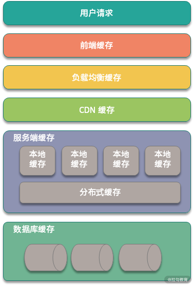
前端缓存
前端缓存包括页面和浏览器缓存，如果你使用的是 App，那么在 App 端也会有缓存。当你打开商品详情页，除了首次打开以外，后面重复刷新时，页面上加载的信息来自多种缓存。
页面缓存属于客户端缓存的一种，在第一次访问时，页面缓存将浏览器渲染的页面存储在本地，当用户再次访问相同的页面时，可以不发送网络连接，直接展示缓存的内容，以提升整体性能。
HTML5 支持了本地存储，本地存储包括 localStorage 和 sessionStorage，其中 localStorage 没有时间限制，在同一个浏览器中，只要没被手动清理，数据会一直可用，sessionStorage 则和 session 的有效期内相关，关闭浏览器页面后缓存会被清空。
除了本地存储，HTML5 还支持离线缓存，也就是 Application Cache 技术，该技术可以实现应用离线的缓存，在暂时断网离线后仍然可以访问页面。
Application Cache 是基于 manifest 文件实现的缓存机制，浏览器会通过这个文件上的清单解析存储资源，感兴趣的同学可以去了解下实现细节。
页面缓存一般用于数据更新比较少的数据，不会频繁修改。除了页面缓存，大部分浏览器自身都会实现缓存功能，比如查看某个商品信息，我如果要回到之前的列表页，点击后退功能，就会应用到浏览器缓存；另外对于页面中的图片和视频等，浏览器都会进行缓存，方便下次查看。
前端缓存还有 App 内的缓存，由于 App 是一个单独的应用，各级缓存会更加复杂，在 Android 和 iOS 开发中也有区别，除非是做客户端开发的同学，不需要了解具体的细节。我们只需要知道客户端缓存是非常重要的优化手段，在开发中注意避免可能导致的问题就可以。
网络传输缓存
大多数业务请求都是通过 HTTP/HTTPS 协议实现的，它们工作在 TCP 协议之上，多次握手以后，浏览器和服务器建立 TCP 连接，然后进行数据传输，在传输过程中，会涉及多层缓存，比如 CDN 缓存等。
网络中缓存包括 CDN 缓存，CDN（Content Delivery Network，内容分发网络）实现的关键包括 内容存储 和 内容分发 ，内容存储就是对数据的缓存功能，内容分发则是 CDN 节点支持的负载均衡。
前端请求在经过 DNS 之后，首先会被指向网络中最近的 CDN 节点，该节点从真正的应用服务器获取资源返回给前端，同时将静态信息缓存。在新的请求过来以后，就可以只请求 CDN 节点的数据，同时 CDN 节点也可以和服务器之间同步更新数据。
网络缓存还包括 负载均衡中的缓存 ，负载均衡服务器主要实现的是请求路由，也就是负载均衡功能；也可以实现部分数据的缓存，比如一些配置信息等很少修改的数据。
目前业务开发中大部分负载均衡都是通过 Nginx 实现的，用户请求在达到应用服务器之前，会先访问 Nginx 负载均衡器。如果发现有缓存信息，则直接返回给用户，如果没有发现缓存信息，那么 Nginx 会 回源 到应用服务器获取信息。
服务端缓存
前端请求经过负载均衡落到 Web 服务器之后，就进入服务端缓存，服务端缓存是缓存的重点，也是业务开发平时打交道最多的缓存。它还可以进一步分为 本地缓存 和 外部缓存 。
本地缓存也可以叫作 应用内缓存 ，比如 Guava 实现的各级缓存，或者 Java 语言中使用各类 Map 结构实现的数据存储，都属于本地缓存的范畴。应用内缓存的特点是随着服务重启后失效，作用时间很短，好处是应用比较灵活。
外部缓存就是我们平常应用的 Redis、Memchaed 等 NoSQL 存储的分布式缓存，它也是在系统设计中对整体性能提升最大的缓存。但如果外部缓存使用不当，则会导致缓存穿透、缓存雪崩等业务问题，关于如何处理这类问题，我们将在下一课时进行分析。
数据库缓存
经过服务端缓存以后，数据其实并不是直接请求数据库持久层，在数据库层面，也可以有多级缓存。
在 Java 开发中，我们一般使用 MyBatis 或者 Hibernate 作为数据库访问的持久化层，这两个组件中都支持缓存的应用。
以 MyBatis 为例，MyBatis 为每个 SqlSession 都创建了 LocalCache，LocalCache 可以实现查询请求的缓存， 如果查询语句命中了 缓存 ， 返回给用户，否则查询数据库， 并且 写入 LocalCache， 返回结果给用户。不过在实际开发中，数据库持久层的缓存非常容易出现数据不一致的情况，所以一般不推荐使用。
另外，大家熟悉的数据库服务器也实现了自身的缓存层，比如 MySQL 服务器支持的查询缓存。
在数据库执行查询语句时，MySQL 会保存一个 Key-Value 的形式缓存在内存中，其中 Key 是查询语句，Value 是结果集。如果缓存 Key 被命中，则会直接返回给客户端，否则会通过数据库引擎 进行 查询，并且把结果缓存起来，方便下一次调用。虽然 MySQL 支持缓存，但是由于需要保证一致性，当数据有修改时，需要删除缓存。如果是某些更新特别频繁的数据，缓存的有效时间非常短，带来的优化效果并不明显。
总结
这一课时讲解了分布式系统设计中的缓存应用，包括前端缓存、网络缓存、服务端缓存，以及数据库缓存。
缓存是一种通用的优化思路，伴随着计算机技术发展至今，在大学的操作系统专业课中，就讲过计算机操作系统设计的多种缓存，比如 Page Cache、Buffer Cache 等技术。你可以思考下，除了上面课时内容中的几种缓存，分布式系统还有哪些环节也用到了缓存技术，欢迎留言分享。
39 如何避免缓存穿透、缓存击穿、缓存雪崩？
设计缓存系统不得不考虑的问题是缓存穿透、缓存击穿与失效时的雪崩效应，同时，关于这几种问题场景的认识及解决方案，也是面试中的高频考点。今天的内容，可以说是缓存应用的三板斧，下面我们一起来分析一下缓存应用中的这几个热门问题。
缓存穿透
先来看一下缓存穿透，顾名思义，是指业务请求穿过了缓存层，落到持久化存储上。在大多数场景下，我们应用缓存是为了承载前端业务请求，缓存被击穿以后，如果请求量比较大，则会导致数据库出现风险。

以双十一为例，由于各类促销活动的叠加，整体网站的访问量、商品曝光量会是平时的千倍甚至万倍。巨大的流量暴涨，单靠数据库是不能承载的，如果缓存不能很好的工作，可能会影响数据库的稳定性，继而直接影响整体服务。
那么哪些场景下会发生缓存穿透呢？
- 不合理的缓存失效策略
缓存失效策略如果设置不合理，比如设置了大量缓存在同一时间点失效，那么将导致大量缓存数据在同一时刻发生缓存穿透，业务请求直接打到持久化存储层。
- 外部用户的恶意攻击
外部恶意用户利用不存在的 Key，来构造大批量不存在的数据请求我们的服务，由于缓存中并不存在这些数据，因此海量请求全部穿过缓存，落在数据库中，将导致数据库崩溃。
介绍了出现缓存穿透的原因，那么缓存穿透如何在业务中避免呢？首先是设置合理的缓存失效策略，避免缓存数据在同一时间失效。对于缓存失效策略的讨论，将在后面的第 36 课时中进行介绍，这里暂时不展开。
缓存穿透还可以通过缓存空数据的方式避免。缓存空数据非常好理解，就是针对数据库不存在的数据，在查询为空时，添加一个对应 null 的值到缓存中，这样在下次请求时，可以通过缓存的结果判断数据库中是否存在，避免反复的请求数据库。不过这种方式，需要考虑空数据的 Key 在新增后的处理，感兴趣的同学可以思考一下。
另外一个方案是使用布隆过滤器。布隆过滤器是应用非常广泛的一种数据结构，我们熟悉的 Bitmap，可以看作是一种特殊的布隆过滤器，布隆过滤器的实现细节不是本课时关注的重点，如果你对布隆过滤器还不熟悉，可以抽空查阅数据结构相关的资料学习。
使用布隆过滤器，可在缓存前添加一层过滤，布隆过滤器映射到缓存，在缓存中不存在的数据，会在布隆过滤器这一层拦截，从而保护缓存和数据库的安全。
缓存击穿
缓存击穿也是缓存应用常见的问题场景，其是一个非常形象的表达。具体表现：前端请求大量的访问某个热点 Key，而这个热点 Key 在某个时刻恰好失效，导致请求全部落到数据库上。
不知道你有没有听过二八定律（80/20 定律、帕累托法则），百度百科中对二八定律的具体描述是这样的：
在任何一组东西中，最重要的只占其中一小部分，约 20%，其余 80% 尽管是多数，却是次要的，因此又称二八定律。
二八定律在缓存应用中也不能避免，往往是 20% 的缓存数据，承担了 80% 或者更高的请求，剩下 80% 的缓存数据，仅仅承担了 20% 的访问流量。
由于二八定律的存在，缓存击穿虽然可能只是一小部分数据失效，但这部分数据如果恰好是热点数据，还是会对系统造成非常大的危险。
缓存击穿和缓存穿透都是降低了整体的缓存命中率，不过在表现上比较类似。缓存击穿可以认为是缓存穿透的一种特殊场景，所以在解决方案上也可以应用上面提到的那几种手段。
接下来看一下缓存雪崩，其是缓存穿透和缓存击穿升级的一种问题场景。
缓存雪崩
缓存雪崩的表现有两种，一种是大量的缓存数据在同一时刻失效，请求全部转发到数据库，将导致数据库压力过大，服务宕机；另外一种是缓存服务不稳定，比如负责缓存的 Redis 集群宕机。
在业务开发中，出现缓存雪崩非常危险，可能会直接导致大规模服务不可用，因为缓存失效时导致的雪崩，一方面是整体的数据存储链路，另一方面是服务调用链路，最终导致微服务整体的对外服务出现问题。
我们知道，微服务本身就存在雪崩效应，在电商场景中，如果商品服务不可用，最终可能会导致依赖的订单服务、购物车服务、用户浏览等级联出现故障。
你考虑一下，如果商品服务出现缓存雪崩，继而商品服务不可用，关联的周边服务都会受影响。
那么缓存雪崩在业务中如何避免呢？
首先是明确缓存集群的容量峰值，通过合理的限流和降级，防止大量请求直接拖垮缓存；其次是做好缓存集群的高可用，以 Redis 为例，可以通过部署 RedisCluster、Proxy 等不同的缓存集群，来实现缓存集群高可用。
缓存稳定性
今天介绍的内容，是大家在缓存应用时的一些总结，现在我希望你跳出这几个名词，从一个更高的维度来思考缓存应用的稳定性。
首先明确应用缓存的目的，大部分缓存都是内存数据库，并且可以支持非常高的 QPS，所以缓存应用，可以防止海量业务请求击垮数据库，保护正常的服务运行。
其次，在考虑缓存的稳定性时，要从两个方面展开，第一个是缓存的数据，第二个是缓存容器也就是缓存服务本身的稳定性。
从缓存数据的层面，有一个缓存命中率的概念，是指落到缓存上的请求占整体请求总量的占比。缓存命中率在电商大促等场景中是一个非常关键的指标，我们要尽可能地提高缓存数据的命中率，一般要求达到 90% 以上，如果是大促等场景，会要求 99% 以上的命中率。
从缓存服务的层面，缓存集群本身也是一个服务，也会有集群部署，服务可用率，服务的最大容量等。在应用缓存时，要对缓存服务进行压测，明确缓存的最大水位，如果当前系统容量超过缓存阈值，就要通过其他的高可用手段来进行调整，比如服务限流，请求降级，使用消息队列等不同的方式。
总结
这一课时的内容，分享了分布式缓存应用和面试的经典问题：缓存穿透、缓存击穿、缓存雪崩，以及对应这几种业务场景的解决方案。今天介绍的这几个问题场景，只是对缓存应用时一些高频问题的抽象，在实际业务开发中，永远都是具体情况具体分析，对不同的业务，适用不同的解决方案。
你在应用缓存时有哪些心得体会，比如如何提高缓存命中率，如何处理热点 Key 等，欢迎留言进行分享。
40 经典问题：先更新数据库，还是先更新缓存？
上一课时分享了缓存使用中的几个问题场景：缓存穿透、缓存击穿和缓存雪崩，这几个问题聚焦的是缓存本身的稳定性，包括缓存集群和缓存的数据，除了这些，缓存应用中，缓存和上下游系统的数据同步也很重要。这一课时，我们来学习缓存应用中的另一个高频问题：应用缓存以后，缓存和数据库何时同步。
数据不一致问题
我们知道，除了少部分配置信息类缓存，比如业务中的黑白名单信息、页面展示配置等，大部分缓存应用一般是作为前端请求和持久化存储的中间层，承担前端的海量请求。
缓存层和数据库存储层是独立的系统，我们在数据更新的时候，最理想的情况当然是缓存和数据库同时更新成功。但是由于缓存和数据库是分开的，无法做到原子性的同时进行数据修改，可能出现缓存更新失败，或者数据库更新失败的情况，这时候会出现数据不一致，影响前端业务。
以电商中的商品服务为例，针对 C 端用户的大部分请求都是通过缓存来承载的，假设某次更新操作将商品详情 A 的价格从 1000 元更新为 1200 元，数据库更新成功，但是缓存更新失败。这时候就会出现 C 端用户在查看商品详情时，看到的还是 1000 元，实际下单时可能是别的价格，最终会影响用户的购买决策，影响平台的购物体验。
可以看到，在使用缓存时，如果不能很好地控制缓存和数据库的一致性，可能会出现非常多的业务问题。
更新缓存有哪些方式
缓存更新方案是通过对更新缓存和更新数据库这两个操作的设计，来实现数据的最终一致性，避免出现业务问题。
先来看一下什么时候创建缓存，前端请求的读操作先从缓存中查询数据，如果没有命中数据，则查询数据库，从数据库查询成功后，返回结果，同时更新缓存，方便下次操作。
在数据不发生变更的情况下，这种方式没有问题，如果数据发生了更新操作，就必须要考虑如何操作缓存，保证一致性。
先更新数据库，再更新缓存
先来看第一种方式，在写操作中，先更新数据库，更新成功后，再更新缓存。这种方式最容易想到，但是问题也很明显，数据库更新成功以后，由于缓存和数据库是分布式的，更新缓存可能会失败，就会出现上面例子中的问题，数据库是新的，但缓存中数据是旧的，出现不一致的情况。
先删缓存，再更新数据库
这种方案是在数据更新时，首先删除缓存，再更新数据库，这样可以在一定程度上避免数据不一致的情况。
现在考虑一个并发场景，假如某次的更新操作，更新了商品详情 A 的价格，线程 A 进行更新时失效了缓存数据，线程 B 此时发起一次查询，发现缓存为空，于是查询数据库并更新缓存，然后线程 A 更新数据库为新的价格。
在这种并发操作下，缓存的数据仍然是旧的，出现业务不一致。
先更新数据库，再删缓存
这个是经典的缓存 + 数据库读写的模式，有些资料称它为 Cache Aside 方案。具体操作是这样的：读的时候，先读缓存，缓存没有的话，那么就读数据库，然后取出数据后放入缓存，同时返回响应，更新的时候，先更新数据库，数据库更新成功之后再删除缓存。
为什么说这种方式经典呢？
在 Cache Aside 方案中，调整了数据库更新和缓存失效的顺序，先更新数据库，再失效缓存。
目前大部分业务场景中都应用了读写分离，如果先删除缓存，在读写并发时，可能出现数据不一致。考虑这种情况：
- 线程 A 删除缓存，然后更新数据库主库；
- 线程 B 读取缓存，没有读到，查询从库，并且设置缓存为从库数据；
- 主库和从库同步。
在这种情况下，缓存里的数据就是旧的，所以建议先更新数据库，再失效缓存。当然，在 Cache Aside 方案中，也存在删除缓存失败的可能，因为缓存删除操作比较轻量级，可以通过多次重试等来解决，你也可以考虑下有没有其他的方案来保证。
对缓存更新的思考
为什么删除而不是更新缓存
现在思考一个问题，为什么是删除缓存，而不是更新缓存呢？删除一个数据，相比更新一个数据更加轻量级，出问题的概率更小。
在实际业务中，缓存的数据可能不是直接来自数据库表，也许来自多张底层数据表的聚合。比如上面提到的商品详情信息，在底层可能会关联商品表、价格表、库存表等，如果更新了一个价格字段，那么就要更新整个数据库，还要关联的去查询和汇总各个周边业务系统的数据，这个操作会非常耗时。
从另外一个角度，不是所有的缓存数据都是频繁访问的，更新后的缓存可能会长时间不被访问，所以说，从计算资源和整体性能的考虑，更新的时候删除缓存，等到下次查询命中再填充缓存，是一个更好的方案。
系统设计中有一个思想叫 Lazy Loading，适用于那些加载代价大的操作，删除缓存而不是更新缓存，就是懒加载思想的一个应用。
多级缓存如何更新
再看一个实际应用中的问题，多级缓存如何更新？
多级缓存是系统中一个常用的设计，我们在第 32 课时“缓存分类”中提过，服务端缓存分为应用内缓存和外部缓存，比如在电商的商品信息展示中，可能会有多级缓存协同。
那么多级缓存之间如何同步数据呢？
常见的方案是通过消息队列通知的方式，也就是在数据库更新后，通过事务性消息队列加监听的方式，失效对应的缓存。
多级缓存比较难保证数据一致性，通常用在对数据一致性不敏感的业务中，比如新闻资讯类、电商的用户评论模块等。
上面的内容是几种常用的缓存和数据库的双写一致性方案，大家在开发中肯定应用过设计模式，这些缓存应用套路和设计模式一样，是前人在大量工程开发中的总结，是一个通用的解决范式。
在具体业务中，还是需要有针对性地进行设计，比如通过给数据添加版本号，或者通过时间戳 + 业务主键的方式，控制缓存的数据版本实现最终一致性。
另外还可以通过我们在第 32 课时“RocketMQ 应用”中讲过的 Binlog 分发方式，通过 Binlog 异步更新缓存。
总结
这一课时我们探讨了缓存和数据库一致性的问题，包括业务开发中如何通过控制更新缓存和数据库的时序，来尽量避免最终一致性问题。在专栏的第 1 课时就讨论过分布式系统的 CAP 理论，经过这么长时间的学习，你是否对 CAP 理论中的不可能三角有了更深的理解呢？
在你负责的项目中，是如何应用缓存，又如何保证缓存和数据库数据一致性的呢，欢迎留言进行分享。
41 失效策略：缓存过期都有哪些策略？
缓存使用的是内存资源，而内存资源是非常宝贵的，要用有限的服务器资源支撑更多的业务，就必须让那些访问频率不高的缓存删除掉，为新的缓存腾出内存空间。这一课时，我们一起来看一下，缓存失效有哪些策略。
页面置换算法
我们从一开始就提到，缓存技术在计算机系统设计中有着非常广泛的应用，对应到操作系统中，就是缓存页面的调度算法。
在操作系统中，文件的读取会先分配一定的页面空间，也就是我们说的 Page，使用页面的时候首先去查询空间是否有该页面的缓存，如果有的话，则直接拿出来；否则就先查询，页面空间没有满，就把新页面缓存起来，如果页面空间满了，就删除部分页面，方便新的页面插入。
在操作系统的页面空间中，对应淘汰旧页面的机制不同，所以会有不同页面调度方法，常见的有 FIFO、LRU、LFU 过期策略：
- FIFO（First In First Out，先进先出），根据缓存被存储的时间，离当前最远的数据优先被淘汰；
- LRU（Least Recently Used，最近最少使用），根据最近被使用的时间，离当前最远的数据优先被淘汰；
- LFU（Least Frequently Used，最不经常使用），在一段时间内，缓存数据被使用次数最少的会被淘汰。
这三种策略也是经典的缓存淘汰策略，大部分缓存应用模型，都是基于这几种策略实现的。
内存淘汰策略
操作系统的页面置换算法，对应到分布式缓存中，就是缓存的内存淘汰策略，这里以 Redis 为例，进行分析。
当 Redis 节点分配的内存使用到达最大值以后，为了继续提供服务，Redis 会启动内存淘汰策略，以下的几种策略参考官方文档：
- noeviction，这是默认的策略，对于写请求会拒绝服务，直接返回错误，这种策略下可以保证数据不丢失；
- allkeys-lru，这种策略操作的范围是所有 key，使用 LRU 算法进行缓存淘汰；
- volatile-lru，这种策略操作的范围是设置了过期时间的 key，使用 LRU 算法进行淘汰；
- allkeys-random，这种策略下操作的范围是所有 key，会进行随机淘汰数据；
- volatile-random，这种策略操作的范围是设置了过期时间的 key，会进行随机淘汰；
- volatile-ttl，这种策略操作的范围是设置了过期时间的 key，根据 key 的过期时间进行淘汰，越早过期的越优先被淘汰。
缓存过期策略
分布式缓存中的过期策略和内存淘汰策略又有一些不同，希望大家不要混淆，内存淘汰是缓存服务层面的操作，而过期策略定义的是具体缓存数据何时失效，下面一起来看一下。
我们都知道，Redis 是 key-value 数据库，可以设置缓存 key 的过期时间，过期策略就是指当 Redis 中缓存的 key 过期了，Redis 如何处理。
Redis 中过期策略通常有以下三种。
- 定时过期
这是最常见也是应用最多的策略，为每个设置过期时间的 key 都需要创建一个定时器，到过期时间就会立即清除。这种方式可以立即删除过期数据，避免浪费内存，但是需要耗费大量的 CPU 资源去处理过期的数据，可能影响缓存服务的性能。
- 惰性过期
可以类比懒加载的策略，这个就是懒过期，只有当访问一个 key 时，才会判断该 key 是否已过期，并且进行删除操作。这种方式可以节省 CPU 资源，但是可能会出现很多无效数据占用内存，极端情况下，缓存中出现大量的过期 key 无法被删除。
- 定期过期
这种方式是上面方案的整合，添加一个即将过期的缓存字典，每隔一定的时间，会扫描一定数量的 key，并清除其中已过期的 key。
合理的缓存配置，需要协调内存淘汰策略和过期策略，避免内存浪费，同时最大化缓存集群的吞吐量。另外，Redis 的缓存失效有一点特别关键，那就是如何避免大量主键在同一时间同时失效造成数据库压力过大的情况，对于这个问题在第 33 课时缓存穿透中有过描述，大家可以去扩展了解下。
实现一个 LRU 缓存
下面介绍一个高频的面试问题：如何实现一个 LRU 算法，该算法的实现很多同学都听过，但是不知道你还记不记得那句经典的格言，Talk is cheap，show me the code。很多人在写代码时一说就懂，一写就错，特别在面试时，常常要求你白板编程，脱离了 IDE 的帮助，更容易出现错误，所以我建议大家动手去实现一下。
在 Java 语言中实现 LUR 缓存，可以直接应用内置的 LinkedHashMap，重写对应的 removeEldestEntry() 方法，代码如下：
public class LinkedHashMapExtend extends LinkedHashMap {
private int cacheSize;
public LinkedHashMapExtend(int cacheSize){
super();
this.cacheSize=cacheSize;
}
@Override
public boolean removeEldestEntry(Map.Entry eldest) {
//重写移除逻辑
if(size()>cacheSize){
return true;
}
return false;
}
}
为什么重写 LinkedHashMap 可以实现 LRU 缓存呢？
对于这个问题，我建议你可以查看一下 LinkedHashMap 的源码实现，在原生的 removeEldestEntry 实现中，默认返回了 false，也就是永远不会移除最“早”的缓存数据，只要扩展这个条件，缓存满了移除最早的数据，是不是就实现了一个 LRU 策略？
在面试中，单纯使用 LinkedHashMap 实现是不够的，还会要求你使用原生的 Map 和双向链表来实现。下面我简单实现了一个参考代码，这道题目在 Leetcode 上的编号是 146，也是剑指 offer 里的一道经典题，大家可以去力扣网站提交代码试一下。
import java.util.HashMap;
public class LRUCache {
private int cacheSize;
private int currentSize;
private CacheNode head;
private CacheNode tail;
private HashMap<Integer,CacheNode> nodes;
class CacheNode{
CacheNode prev;
CacheNode next;
int key;
int value;
}
public LRUCache(int cacheSize){
cacheSize=cacheSize;
currentSize=0;
nodes=new HashMap<>(cacheSize);
}
public void set(Integer key,Integer value){
if(nodes.get(key)==null){ //添加新元素
CacheNode node=new CacheNode();
node.key=key;
node.value=value;
nodes.put(key,node);
//移动到表头
moveToHead(node);
//进行lru操作
if(currentSize>cacheSize)
removeTail();
else
currentSize++;
}else{//更新元素值
CacheNode node=nodes.get(key);
//移动到表头
moveToHead(node);
node.value=value;
}
}
private void removeTail() {
if(tail!=null){
nodes.remove(tail.key);
if(tail.prev!=null) tail.prev.next=null;
tail=tail.prev;
}
}
private void moveToHead(CacheNode node){
//链表中间的元素
if(node.prev!=null){
node.prev.next=node.next;
}
if(node.next!=null){
node.next.prev=node.prev;
}
//移动到表头
node.prev=null;
if(head==null){
head=node;
}else{
node.next=head;
head.prev=node;
}
head=node;
//更新tail
//node就是尾部元素
if(tail==node){
//下移一位
tail=tail.prev;
}
//缓存里就一个元素
if(tail==null){
tail=node;
}
}
public int get(int key){
if(nodes.get(key)!=null){
CacheNode node=nodes.get(key);
moveToHead(node);
return node.value;
}
return 0;
}
}
总结
这一课时的内容主要介绍了缓存的几种失效策略，并且分享了一个面试中的高频问题：LRU 缓存实现。
缓存过期的策略来自操作系统，在我们的专栏中，对很多知识的展开都来自计算机原理、网络原理等底层技术，也从一个侧面反映了计算机基础知识的重要性。
42 负载均衡：一致性哈希解决了哪些问题？
在业务开发中，缓存服务和其他数据服务一样，需要满足高可用性，而高可用最常用的手段就是集群扩展。
缓存的集群高可用
目前 Redis 流行的集群方案有 官方 Cluster 方案、twemproxy 代理方案、哨兵模式、Codis 等方案，关于这几种方案的具体应用，我们在下一课时将详细展开讲解。
缓存服务从单点扩展到集群以后，势必会产生缓存数据的分发问题，假设我们的缓存服务器有 3 台，每台缓存的数据是不相同的，那么我们在更新缓存时，该放置在哪台机器上呢？根据 key 获取缓存时，该从哪台服务器上获取？这就涉及缓存的负载均衡策略。
关于缓存集群高可用的配置方式，有数据同步和不同步之分。在数据同步的方案下，所有节点之间数据都是一样的，不同节点互为副本，这种方式不需要关心缓存数据的分发，实现了缓存集群的最大可用，但是由于冗余了多份缓存数据，会造成比较多的服务器资源浪费；另外一方面，在更新缓存数据时，还要考虑不同节点之间的一致性。
数据不同步的方案，就是每个缓存节点存储的数据不同，在缓存读写时使用一定的策略进行分发。在实际开发中，大部分都是应用数据不同步的方案，如果需要冗余数据，则可以通过缓存集群主从同步实现。
不同路由方案的扩容问题
在第 22 课时讲解数据库分库分表时，我们分析了数据库分库分表扩容的问题，分库分表以后，当存储节点发生增加或减少时，合理的配置分表策略，可以使得数据迁移最小。
其实不只是数据库，缓存集群也有一样的问题。下面来看一下几种负载均衡策略，以及对应的优缺点。
哈希取模路由
最常见的方式是对缓存数据进行哈希，典型的操作就是通过对缓存 hash（缓存 Key）/ 节点数量。
假设我们有 5 台缓存服务器，伪代码如下：
//获取缓存服务器下标
public Integer getRoute(String key){
int cacheIndex = key.hashcode() % 5;
return cacheIndex;
}
哈希取模的方式，适合对固定数量的缓存集群进行路由，但是对横向扩展不友好。如果缓存机器数量发生变更过，比如从 5 台服务器调整为 10 台服务器，原来的缓存数据无法分配到正确机器，就会出现路由不正确，从而业务请求直接落到数据库上。
一致性哈希
在负载均衡策略中，可以应用一致性哈希，减少节点扩展时的数据失效或者迁移的情况。维基百科对一致性哈希是这么定义的：
一致性哈希是一种特殊的哈希算法。在使用一致性哈希算法后，哈希表槽位数（大小）的改变平均只需要对 K/n 个关键字重新映射，其中 K 是关键字的数量，n 是槽位数量。然而在传统的哈希表中，添加或删除一个槽位几乎需要对所有关键字进行重新映射。
一致性哈希通过一个哈希环实现，Hash 环的基本思路是获取所有的服务器节点 hash 值，然后获取 key 的 hash，与节点的 hash 进行对比，找出顺时针最近的节点进行存储和读取。
以电商中的商品数据为例，假设我们有 4 台缓存服务器：
- A 服务器，地址 hash 结果是 100
- B 服务器，地址 hash 结果是 200
- C 服务器，地址 hash 结果是 300
- D 服务器，地址 hash 结果是 400
现在有某条数据的 Key 进行哈希操作，得到 200，则存储在 B 服务器；某条数据的 Key 进行哈希操作，得到 260，则存储在 C 服务器；某条数据的 Key 进行哈希操作，得到 500，则存储在 A 服务器。
一致性哈希算法在扩展时，只需要迁移少量的数据就可以。例如，我们刚才的例子中，如果 D 服务器下线，原先路由到 D 服务器的数据，只要顺时针迁移到 A 服务器就可以，其他服务器不受影响，我们只需要移动一台机器的数据即可。
一致性哈希虽然对扩容和缩容友好，但是存在另外一个问题，就很容易出现数据倾斜。
相信你已经考虑到了，假设我们有 A、B、C 一直到 J 服务器，总共 10 台，组成一个哈希环。如果从 F 服务器一直到 J 服务器的 5 个节点宕机，那么这 5 台服务器原来的访问，都会被转移到服务器 A 之上，服务器的流量可能是原来的 5 倍或者更高，直到把服务器 A 打爆，这时候流量继续转移到 B 服务器，就出现我们在第 34 课时提到的缓存雪崩。
那么数据倾斜是如何解决的呢? 一个方案就是添加虚拟节点，对服务器节点也进行哈希操作，在整个哈希环上，均匀添加若干个节点。比如 a1 和 a2 都属于 A 节点，b1、b2 都属于 B 节点，这样在哈希时可以平衡各个节点的数据。
另外，在面试中，面试官可能会要求你实现一致性哈希算法。以 Java 为例，可以应用 TreeMap 这个数据结构。
TreeMap 基于红黑树实现，元素默认按照 keys 的自然排序排列，对外开放了一个 tailMap(K fromKey) 方法，该方法可以返回比 fromKey 顺序的下一个节点，大大简化了一致性哈希的实现。这里我就不添加代码了，感兴趣的同学可以去动手模拟实现一下。
总结
这一课时的内容，和你分享了应用缓存集群的知识点，包括集群下的高可用，以及哈希取模和一致性哈希的负载均衡策略。
一致性哈希算法的应用，主要是考虑到分布式系统每个节点都有可能失效，并且新的节点很可能动态地增加进来的情况，如何保证当系统的节点数目发生变化的时候，我们的系统仍然能够对外提供良好的服务。
负载均衡在分布式系统设计中是非常重要的一部分，今天主要关注的是数据路由方案，除了数据路由，负载均衡在 API 网关、分布式服务调用中也非常关键。在服务调用中常用的负载均衡策略还包括轮训、随机，根据响应时间判断等。在你的工作中，有哪些场景用到了负载均衡，又是如何进行应用的呢？欢迎留言进行分享。
43 缓存高可用：缓存如何保证高可用？
上一课时提到了缓存集群的负载均衡策略，保证缓存服务的高可用，集群策略是最常用的，这一课时，我们以 Redis 为例，分析一下单点缓存如何扩展到集群，以及集群部署的几种常见模式。
Redis 的主从复制
集群实现依靠副本，而副本技术有个非常关键的一点，那就是各个副本之间的快速数据同步，也就是我们常说的主从复制。
主从复制技术在关系型数据库、缓存等各类存储节点中都有比较广泛的应用。Redis 的主从复制，可以将一台服务器的数据复制到其他节点，在 Redis 中，任何节点都可以成为主节点，通过 Slaveof 命令可以开启复制。
主从复制一方面可以作为数据备份，通过实现主从节点之间的最终数据一致性，保证数据尽量不丢失。除了数据备份，从节点还可以扩展主节点的读请求支持能力，实现读写分离，主节点作为写节点，从节点支持读请求。当主节点的系统水位不能承担前台业务请求并发量时，可以将请求路由到从节点，实现集群内的动态均衡。
有了主从复制，现在请你思考一个问题，Redis 的主从复制如何选举呢？
我们先来了解下 MySQL 的选主，也就是故障转移机制，和主从机器之间的数据同步方式有很大关系，同步方式包括半同步、全同步，关于 GTID 的复制等方式，MySQL 缺少一个选举决策的节点，一般是人工干预选主流程，感兴趣的同学可以查阅相关资料了解一下。
我们再来看一下 Redis 的主从配置，正常情况下，当主节点发生故障宕机，需要运维工程师手动从从节点服务器列表中，选择一个晋升为主节点，并且需要更新上游客户端的配置，这种方式显然是非常原始的，我们希望有一个机制，可以自动实现 Failover，也就是自动故障转移 。
在 Redis 集群中，依赖 Sentinel，就可以实现上面的需求。
Redis Sentinel——Redis 哨兵
Redis Sentinel 就是我们常说的 Redis 哨兵机制，也是官方推荐的高可用解决方案，上面我们提到的主从复制场景，就可以依赖 Sentinel 进行集群监控。
Redis-Sentinel 是一个独立运行的进程，假如主节点宕机，它还可以进行主从之间的切换。主要实现了以下的功能：
- 不定期监控 Redis 服务运行状态
- 发现 Redis 节点宕机，可以通知上游的客户端进行调整
- 当发现 Master 节点不可用时，可以选择一个 Slave 节点，作为新的 Master 机器，并且更新集群中的数据同步关系
现在思考一个场景，我们使用 Sentinel 来管理 Redis 集群高可用，假如 Sentinel 宕机，那么整个系统还可以按照预期的方式运行吗？
答案是否定的，很明显，Sentinel 也存在单点问题，如果 Sentinel 宕机，高可用也就无法实现了，所以，Sentinel 必须支持集群部署。
实际上，Redis Sentine 方案是一个包含了多个 Sentinel 节点，以及多个数据节点的分布式架构。除了监控 Redis 数据节点的运行状态，Sentinel 节点之间还会互相监控，当发现某个 Redis 数据节点不可达时，Sentinel 会对这个节点做下线处理，如果是 Master 节点，会通过投票选择是否下线 Master 节点，完成故障发现和故障转移。
Sentinel 在操作故障节点的上下线时，还会通知上游的业务方，整个过程不需要人工干预，可以自动执行。
Redis Cluster 集群
Redis Cluster 是官方的集群方案，是一种无中心的架构，可以整体对外提供服务。

为什么是无中心呢？因为在 Redis Cluster 集群中，所有 Redis 节点都可以对外提供服务，包括路由分片、负载信息、节点状态维护等所有功能都在 Redis Cluster 中实现。
Redis 各实例间通过 Gossip 通信，这样设计的好处是架构清晰、依赖组件少，方便横向扩展，有资料介绍 Redis Cluster 集群可以扩展到 1000 个以上的节点。
Redis Cluster 另外一个好处是客户端直接连接服务器，避免了各种 Proxy 中的性能损耗，可以最大限度的保证读写性能。
除了 Redis Cluster，另外一个应用比较多的是 Codis 方案，Codis 是国内开源的一个 Redis 集群方案，其作者是个大牛，也是一位技术创业者，不知道你有没有听过最近几年比较火的分布式关系型数据库 TiDB，就来自于作者的公司 PingCAP。
Codis 的实现和 Redis Cluster 不同，是一个“中心化的结构”，同时添加了 Codis Proxy 和 Codis Manager。Codis 设计中，是在 Proxy 中实现路由、数据分片等逻辑，Redis 集群作为底层的存储引擎，另外通过 ZooKeeper 维护节点状态，可以参考下面这张 Codis 的官方架构图：
之所以提到 Codis，是因为 Codis 和官方的 Redis Cluster 实现思路截然不同，使用 Redis Cluster 方式，数据不经过 Proxy 层，直接访问到对应的节点。
Codis 和 Redis Cluster 的集群细节比较复杂，这里不展开讨论，只要简单了解即可，你也可以在课后分别去官网深入了解。就我自己而言，Codis 的监控和数据迁移更加简便，感觉 Codis 的设计更加合理，不过也是见仁见智，欢迎分享你的思考。
Redis Cluster 划分了 16384 个槽位，每个节点负责其中的一部分数据，都会存储槽位的信息，当客户端链接时，会获得槽位信息。如果需要访问某个具体的数据 Key，就可以根据本地的槽位来确定需要连接的节点。
关于 Redis Cluster 为什么是 16384 个槽位，网上也有很多讨论，Redis 的作者也给出了他的思考， 感兴趣的可点击这里查看。
总结
这一课时和你分享了 Redis 集群高可用的几种配置方式，包括主从复制、Redis 的哨兵机制，简单介绍了 Redis Cluster 和 Codis 的集群方式。
Redis 高可用集群也经历了一个发展过程，从早期社区中 Twitter 开源的 Proxy 方案，到现在官方的 Redis Cluster 集群方案，中间还有很多公司或者组织贡献了开源方案，比如开源的 Codis、阿里云的 Redis Labs 等。
在我的工作中，一直是应用 Twitter 的代理方案，后面就是公司内部开发的一些中间件，在你的工作中应用了哪些集群方案呢？欢迎留言进行分享。
45 从双十一看高可用的保障方式
从这一课时开始，专栏内容进入最后一个模块，即分布式高可用系列，这部分的内容，我将以电商大促为背景，讲解系统限流、降级熔断、负载均衡、稳定性指标、系统监控和日志系统等方面的内容。
今天一起来讨论一下，在面对电商大促、秒杀抢购等高并发的业务场景时，都有哪些高可用的保障手段。
从双十一限制退款说起
每年的电商大促活动，规模最大的就是双十一促销，双十一已经从光棍节，演变成了国内最大的电商促销活动。每年的双十一，我都会买一些打折力度比较大的商品，特别是数码产品，比如相机、键盘等，相信你肯定也和我一样，有很多“买买买”的经历。
类似双十一、618 这种促销活动，都会设置整点抢购。不知道你在双十一零点下单的过程中，有没有经历过排队等待，或者系统不可用的情况呢？
另外，细心的你可能已经发现了，历年的双十一活动，当天往往是不支持退款的，几大电商网站都会提前发布公告，对和订单无关的业务进行降级，比如订单退款。
上面这些，都是系统高可用的保障手段。以限制退款为例，一方面从业务角度考虑，由于活动期间流量巨大，订单产生数量过大，需要节省平台和商家的人力资源，节省库存盘点等工作；另一方面，退款处理并不是核心流程，在双十一当天，商家也没有这么多的资源来处理退款请求，在服务治理中，这是典型的业务降级，保护系统，对非核心业务做降级处理。
电商大促的高可用保障
电商大促高可用活动保障的核心是什么呢？当然是稳定性了。
大促是对系统架构的大考，稳定性是技术保障的核心，大公司内部都有严格的故障管理手段，以及故障评级制度，业务团队出现一个大的线上故障，可能一年的绩效都要受影响。
在服务治理中有一个服务可用性的概念，服务可用性是对服务等级协议 SLA 的描述，我们平时说的 4 个 9、5 个 9，就是 SLA。在实际业务中，即使是 4 个 9 的可用性，可能也不足以满足业务需求。我们来做一个简单的计算，假设一个核心链路依赖 10 个服务，这 10 个服务的可用性是 99.99%，那这个核心链路的可用性是 99.99% 的 10 次方，也就是 99.9%，可用性直接下降了一个等级，关联服务再多一些，可用性会更低。
这是一个理想的估算，在生产环境中，还要考虑服务发布、部署等导致的停机情况，可用性还会降低，如果是银行业、金融业等对可用性非常敏感的行业，这个数字是远远不够的。
回到电商大促，我们结合电商的业务场景，讨论一下在电商大促时，如果要保证高可用性，可以从哪些方面入手呢？
第一个特点是海量用户请求，万倍日常流量，大促期间的流量是平时的千百倍甚至万倍，从这一点来讲，要做好容量规划，在平时的演练中需做好调度。目前大部分公司的部署都是应用 Docker 容器化编排，分布式需要快速扩展集群，而容器化编排操作简单，可以快速扩展实例，可以说，容器化和分布式是天生一对，提供了一个很好的解决方案。
第二点是流量突增，是典型的秒杀系统请求曲线，我们都知道秒杀系统的流量是在瞬间达到一个峰值，流量曲线非常陡峭。为了吸引用户下单，电商大促一般都会安排若干场的秒杀抢购，为了应对这个特性，可以通过独立热点集群部署、消息队列削峰、相关活动商品预热缓存等方案来解决。
关于活动商品预热，这里简单展开说一下，秒杀活动都会提前给用户预告商品，为了避免抢购时服务不可用，我们可以提前把相关商品数据都加载到缓存中，通过缓存来支撑海量请求。
在模块六“分布式缓存”中，我花了很多篇幅对缓存的高可用、缓存命中率等知识点做了分享，你可以回顾并思考一下，秒杀活动中如何预热商品数据，可以更好地支撑前端请求？
最后一点是高并发，支撑海量用户请求，对于业务系统来说就是高并发，QPS 会是平时的几百倍甚至更高。开发经验比较多的同学都知道，如果在系统设计时没有考虑过高并发的情况，即使业务系统平时运行得好好的，如果并发量一旦增加，就会经常出现各种诡异的业务问题。比如，在电商业务中，可能会出现用户订单丢失、库存扣减异常、超卖等问题。
应对高并发，需要我们在前期系统设计时，考虑到并发系统容易出现的问题，比如在 Java 语言中，高并发时的 ThreadLocal 数据异常，数据库高并发的锁冲突、死锁等问题点，进行针对性的设计，避免出现业务异常。
可以看到，电商大促面临的问题主要是支撑高并发和高可用，高可用常见的手段有缓存、消息队列，关于这两部分的内容，我们在前面课时中也花了很大的篇幅去介绍，这里就不再赘述了。
另外还有一点在大促时特别重要，那就是避免服务雪崩问题、链路问题、故障传导。
关于服务雪崩我们在模块三“分布式服务”中简单提过，除了对服务可用性的追求，微服务架构一个绕不过去的问题就是服务雪崩。由于微服务调用通常是通过一个链路的形式进行，各个服务之间是一个调用链，牵一发而动全身，某个服务提供者宕机，可能导致整个链路上的连续失败，出现整体超时，最后可能导致业务系统停止服务。
避免服务雪崩问题，可以从限流、降级、熔断、隔离这几个方面入手，我喜欢称它们为高可用的 8 字箴言，在本模块后面的课时中，我将继续深入讨论这几个知识点。
总结
这一课时的内容，以双十一电商大促作为背景，总结了电商大促的业务特点，业务开发中保证稳定性的关键，并且简单介绍了高可用技术保障的几个常见手段，包括我们在前面讲解的消息队列技术、缓存技术，以及后面要展开讲解的限流、降级、熔断、隔离、负载均衡等手段。
在你的工作中，在对系统进行高可用设计时，都做了哪些工作呢？比如如何进行容量评估，超出系统水位如何进行限流和降级，使用了哪些高可用技术中间件呢？欢迎留言分享你的经验。
46 高并发场景下如何实现系统限流？
在分布式高可用设计中，限流应该是应用最广泛的技术手段之一，今天一起来讨论一下，为什么需要限流，以及常见的限流算法都有哪些。
常见限流算法
限流是服务降级的一种手段，顾名思义，通过限制系统的流量，从而实现保护系统的目的。
合理的限流配置，需要了解系统的吞吐量，所以，限流一般需要结合容量规划和压测来进行。当外部请求接近或者达到系统的最大阈值时，触发限流，采取其他的手段进行降级，保护系统不被压垮。常见的降级策略包括延迟处理、拒绝服务、随机拒绝等。
限流后的策略，其实和 Java 并发编程中的线程池非常类似，我们都知道，线程池在任务满的情况下，可以配置不同的拒绝策略，比如：
- AbortPolicy，会丢弃任务并抛出异常；
- DiscardPolicy，丢弃任务，不抛出异常；
- DiscardOldestPolicy 等，当然也可以自己实现拒绝策略。
Java 的线程池是开发中一个小的功能点，但是见微知著，也可以引申到系统的设计和架构上，将知识进行合理地迁移复用。
限流方案中有一点非常关键，那就是如何判断当前的流量已经达到我们设置的最大值，具体有不同的实现策略，下面进行简单分析。
计数器法
一般来说，我们进行限流时使用的是单位时间内的请求数，也就是平常说的 QPS，统计 QPS 最直接的想法就是实现一个计数器。
计数器法是限流算法里最简单的一种算法，我们假设一个接口限制 100 秒内的访问次数不能超过 10000 次，维护一个计数器，每次有新的请求过来，计数器加 1。这时候判断，如果计数器的值小于限流值，并且与上一次请求的时间间隔还在 100 秒内，允许请求通过，否则拒绝请求；如果超出了时间间隔，要将计数器清零。
下面的代码里使用 AtomicInteger 作为计数器，可以作为参考：
public class CounterLimiter {
//初始时间
private static long startTime = System.currentTimeMillis();
//初始计数值
private static final AtomicInteger ZERO = new AtomicInteger(0);
//时间窗口限制
private static final int interval = 10000;
//限制通过请求
private static int limit = 100;
//请求计数
private AtomicInteger requestCount = ZERO;
//获取限流
public boolean tryAcquire() {
long now = System.currentTimeMillis();
//在时间窗口内
if (now < startTime + interval) {
//判断是否超过最大请求
if (requestCount.get() < limit) {
requestCount.incrementAndGet();
return true;
}
return false;
} else {
//超时重置
requestCount = ZERO;
startTime = now;
return true;
}
}
}
计数器策略进行限流，可以从单点扩展到集群，适合应用在分布式环境中。单点限流使用内存即可，如果扩展到集群限流，可以用一个单独的存储节点，比如 Redis 或者 Memcached 来进行存储，在固定的时间间隔内设置过期时间，就可以统计集群流量，进行整体限流。
计数器策略有一个很大的缺点，是对临界流量不友好，限流不够平滑。假设这样一个场景，我们限制用户一分钟下单不超过 10 万次，现在在两个时间窗口的交汇点，前后一秒钟内，分别发送 10 万次请求。也就是说，窗口切换的这两秒钟内，系统接收了 20 万下单请求，这个峰值可能会超过系统阈值，影响服务稳定性。
对计数器算法的优化，就是避免出现两倍窗口限制的请求，可以使用滑动窗口算法实现，感兴趣的同学可以去了解一下。
漏桶和令牌桶算法
漏桶算法和令牌桶算法，在实际应用中更加广泛，也经常被拿来对比，所以我们放在一起进行分析。
漏桶算法可以用漏桶来对比，假设现在有一个固定容量的桶，底部钻一个小孔可以漏水，我们通过控制漏水的速度，来控制请求的处理，实现限流功能。
漏桶算法的拒绝策略很简单，如果外部请求超出当前阈值，则会在水桶里积蓄，一直到溢出，系统并不关心溢出的流量。漏桶算法是从出口处限制请求速率，并不存在上面计数器法的临界问题，请求曲线始终是平滑的。
漏桶算法的一个核心问题是，对请求的过滤太精准了，我们常说，水至清则无鱼，其实在限流里也是一样的， 我们限制每秒下单 10 万次，那 10 万零 1 次请求呢？是不是必须拒绝掉呢？
大部分业务场景下这个答案是否定的，虽然限流了，但还是希望系统允许一定的突发流量，这时候就需要令牌桶算法。
再来看一下令牌桶算法，在令牌桶算法中，假设我们有一个大小恒定的桶，这个桶的容量和设定的阈值有关，桶里放着很多令牌，通过一个固定的速率，往里边放入令牌，如果桶满了，就把令牌丢掉，最后桶中可以保存的最大令牌数永远不会超过桶的大小。
当有请求进入时，就尝试从桶里取走一个令牌，如果桶里是空的，那么这个请求就会被拒绝。
不知道你有没有应用过 Google 的 Guava 开源工具包，在 Guava 中，就有限流策略的工具类 RateLimiter，RateLimiter 基于令牌桶算法实现流量限制，使用非常方便。
RateLimiter 会按照一定的频率往桶里扔令牌，线程拿到令牌才能执行，RateLimter 的 API 可以直接应用，主要方法是 acquire 和 tryAcquire，acquire 会阻塞，tryAcquire 方法则是非阻塞的。下面是一个简单的示例：
public class LimiterTest {
public static void main(String[] args) throws InterruptedException {
//允许10个，permitsPerSecond
RateLimiter limiter = RateLimiter.create(100);
for(int i=1;i<200;i++){
if (limiter.tryAcquire(1)){
System.out.println("第"+i+"次请求成功");
}else{
System.out.println("第"+i+"次请求拒绝");
}
}
}
}
不同限流算法的比较
计数器算法实现比较简单，特别适合集群情况下使用，但是要考虑临界情况，可以应用滑动窗口策略进行优化，当然也是要看具体的限流场景。
漏桶算法和令牌桶算法，漏桶算法提供了比较严格的限流，令牌桶算法在限流之外，允许一定程度的突发流量。在实际开发中，我们并不需要这么精准地对流量进行控制，所以令牌桶算法的应用更多一些。
如果我们设置的流量峰值是 permitsPerSecond=N，也就是每秒钟的请求量，计数器算法会出现 2N 的流量，漏桶算法会始终限制N的流量，而令牌桶算法允许大于 N，但不会达到 2N 这么高的峰值。
关于这几种限流算法的扩展讨论，我之前在博客中也分析过，可以点击： 96秒破百亿，双11如何抗住高并发流量，作为补充阅读。
总结
这一课时总结了系统限流的常用策略，包括计数器法、漏桶算法、令牌桶算法。
在你的工作中，在对系统进行高可用设计时，都做了哪些工作呢？比如如何进行容量评估，超出系统水位如何进行限流，欢迎留言分享你的经验。
47 降级和熔断：如何增强服务稳定性？
上一课时我们分析了限流的常用策略，下面来看一下，高可用的另外两大撒手锏：降级和熔断，关于这两种技术手段如何实施，又有哪些区别呢？
高可用之降级
我们在第 39 课时提过服务降级是电商大促等高并发场景的常见稳定性手段，那你有没有想过，为什么在大促时要开启降级，平时不去应用呢？
在大促场景下，请求量剧增，可我们的系统资源是有限的，服务器资源是企业的固定成本，这个成本不可能无限扩张，所以说，降级是解决系统资源不足和海量业务请求之间的矛盾。
降级的具体实现手段是，在暴增的流量请求下，对一些非核心流程业务、非关键业务，进行有策略的放弃，以此来释放系统资源，保证核心业务的正常运行。我们在第 34 课时中提过二八策略，换一个角度，服务降级就是尽量避免这种系统资源分配的不平衡，打破二八策略，让更多的机器资源，承载主要的业务请求。
就如同我们之前的例子中，电商大促时限制退款，但平时并不会限制，所以服务降级不是一个常态策略，而是应对非正常情况下的应急策略。服务降级的结果，通常是对一些业务请求，返回一个统一的结果，你可以理解为是一种 FailOver 快速失败的策略。
举个例子，我们都有在 12306 网站购票的经历，在早期春运抢票时，会有大量的购票者进入请求，如果火车票服务不能支撑，你想一想，是直接失败好呢，还是返回一个空的信息好呢？一般都会返回一个空的信息，这其实是一种限流后的策略，我们从一个广义的角度去理解，限流也是一种服务降级手段，是针对部分请求的降级。
一般来说，降级针对的目标，一般是业务闭环中的一些次要功能，比如大促时的评论、退款功能，从一致性的角度，因为强一致性的保证需要很多系统资源，降级可能会降低某些业务场景的一致性。
具体在进行服务降级操作时，要注意哪些点呢？首先需要注意梳理核心流程，知道哪些业务是可以被牺牲的，比如双十一大家都忙着抢购，这时候一些订单评论之类的边缘功能，就很少有人去使用。另外，要明确开启时间，在系统水位到达一定程度时开启。还记得我们在第 16 课时提到的分布式配置中心吗？降级一般是通过配置的形式，做成一个开关，在高并发的场景中打开开关，开启降级。
高可用之熔断
不知道你有没有股票投资的经验，在很多证券市场上，在大盘发生非常大幅度的波动时，为了保护投资者的利益，维护正常的市场秩序，会采取自动停盘机制，也就是我们常说的股市熔断。
在高可用设计中，也有熔断的技术手段，熔断模式保护的是业务系统不被外部大流量或者下游系统的异常而拖垮。
通过添加合理的熔断策略，可以防止系统不断地去请求可能超时和失败的下游业务，跳过下游服务的异常场景，防止被拖垮，也就是防止出现服务雪崩的情况。
熔断策略其实是一种熔断器模式，你可以想象一下家里应用的电路过载保护器，不过熔断器的设计要更复杂，一个设计完善的熔断策略，可以在下游服务异常时关闭调用，在下游服务恢复正常时，逐渐恢复流量。
下面我举一个例子，假设你开发了一个电商的订单服务，你的服务要依赖下游很多其他模块的服务，比如评论服务。现在有一个订单查询的场景，QPS 非常高，但是恰好评论服务因为某些原因部分机器宕机，出现大量调用失败的情况。如果没有熔断机制，订单系统可能会在失败后多次重试，最终导致大量请求阻塞，产生级联的失败，并且影响订单系统的上游服务，出现类似服务雪崩的问题，导致整个系统的响应变慢，可用性降低。
如果开启了熔断，订单服务可以在下游调用出现部分异常时，调节流量请求，比如在出现 10% 的失败后，减少 50% 的流量请求，如果继续出现 50% 的异常，则减少 80% 的流量请求；相应的，在检测的下游服务正常后，首先恢复 30% 的流量，然后是 50% 的流量，接下来是全部流量。
对于熔断策略的具体实现，我建议你查看 Alibaba Sentinel 或者 Netflix Hystrix 的设计，熔断器的实现其实是数据结构中有限状态机（Finite-state Machines，FSM）的一种应用，关于 FSM 的具体分析和应用，不是本课时的目标，因为 FSM 不光在算法领域有应用，在复杂系统设计时，为了更好的标识状态流转，用有限状态机来描述会特别清晰。
熔断器的恢复时间，也就是平均故障恢复时间，称为 MTTR，在稳定性设计中是一个常见的指标，在 Hystrix 的断路器设计中，有以下几个状态。
- Closed：熔断器关闭状态，比如系统检测到下游失败到了 50% 的阈值，会开启熔断。
- Open：熔断器打开状态，此时对下游的调用在内部直接返回错误，不发出请求，但是在一定的时间周期以后，会进入下一个半熔断状态。
- Half-Open：半熔断状态，允许少量的服务请求，如果调用都成功（或一定比例）则认为恢复了，关闭熔断器，否则认为还没好，又回到熔断器打开状态。
在系统具体实现中，降级和熔断推荐使用成熟的中间件，包括 Sentinel 和 Hystrix，以及 resilience4j，关于这几种组件的应用细节，这里暂不做展开分析，我一直觉得，授人以鱼不如授人以渔，在解决了原理层面以后，如何实现就变得简单很多。
我在工作中应用 Sentinel 比较多，你可以在Sentinel 官网看到详细的介绍，下面是对这几种组件的对比，来自阿里巴巴 Sentinel 开发团队的分享，作为补充资料：
| Sentinel | Hystrix | resilience4j | |
|---|---|---|---|
| 隔离策略 | 信号量隔离（并发线程数限流） | 线程池隔离/信号量隔离 | 信号量隔离 |
| 熔断降级策略 | 基于响应时间、异常比率、异常数 | 基于异常比率 | 基于异常比率、响应时间 |
| 实时统计实现 | 滑动窗口（LeapArray） | 滑动窗口（基于 RxJava） | Ring Bit Buffer |
| 动态规则配置 | 支持多种数据源 | 支持多种数据源 | 有限支持 |
| 扩展性 | 多个扩展点 | 插件的形式 | 接口的形式 |
| 基于注解的支持 | 支持 | 支持 | 支持 |
| 限流 | 基于 QPS，支持基于调用关系的限流 | 有限的支持 | Rate Limiter |
| 流量整形 | 支持预热模式、匀速器模式、预热排队模式 | 不支持 | 简单的 Rate Limiter 模式 |
| 系统自适应保护 | 支持 | 不支持 | 不支持 |
| 控制台 | 提供开箱即用的控制台，可配置规则、查看秒级监控、机器发现等 | 简单的监控查看 | 不提供控制台，可对接其他监控系统 |
总结
以上就是这一课时的内容，和大家总结了降级和熔断的概念，应用场景和实现手段，通过一些应用实例进行了对比。
不知道你有没有发现，在系统设计中，特别是高可用模块，和生活里的一些博弈策略息息相关，不是一个纯技术领域的工作。比如在中国象棋策略中，有个成语叫作丢车保帅，和服务降级有异曲同工之妙，敌人已经攻打过来了，这时候是保护元帅不被将军，还是丢弃一些军备，下次还能卷土重来呢？而服务降级就是放弃一些非关键功能，保证整体系统的运行。
这一课时中，我也列举了股票熔断、漏电保护器等生活实例，希望大家可以扩展思考一下，高可用设计中的博弈在生活中有哪些体现，也欢迎留言分享你的观点。
48 如何选择适合业务的负载均衡策略？
在分布式系统的高可用设计中，负载均衡非常关键，我们知道，分布式系统的特性之一就是支持快速扩展，那么集群扩展之后，服务请求如何从服务器列表中选择合适的一台呢？这就需要依赖负载均衡策略。
负载均衡在处理高并发，缓解网络压力，以及支持扩容等方面非常关键，在不同的应用场景下，可以选择不同的负载均衡，下面一起来看一下负载均衡相关的知识。
负载均衡的应用
负载均衡是指如何将网络请求派发到集群中的一个或多个节点上处理，一般来说，传统的负载均衡可以分为硬件负载均衡和软件负载均衡。
- 硬件负载均衡，就是通过专门的硬件来实现负载均衡，比如常见的 F5 设备。
- 软件负载均衡则是通过负载均衡软件实现，常见的就是 Nginx。
无论是硬件负载均衡还是软件负载均衡，实现原理都是一样的，在负载均衡中会记录一个可用的服务列表，负载均衡服务器会通过心跳机制来确认服务可用性，在网络请求到达后，F5 或者 Nginx 等负载均衡设备，会按照不同的策略，进行服务器的路由，这就是负载均衡的流程。
负载均衡的应用非常广，这一课时我们主要关注在分布式系统的请求调用，服务分发中的负载均衡。
常见的复杂均衡策略
一般而言，有以下几种常见的负载均衡策略。
轮询策略
轮询策略是最容易想到也是应用最广泛的负载均衡策略。轮询策略会顺序地从服务器列表中选择一个节点，请求会均匀地落在各个服务器上。轮询适合各个节点性能接近，并且没有状态的情况，但是在实际开发中，不同节点之间性能往往很难相同，这时候就可以应用另一种加权轮询策略。
加权轮询
加权轮询是对轮询策略的优化，给每个节点添加不同的权重。举个简单的例子，在实际开发中通常使用数组的数据结构来实现轮询，比如现在我有 A、B、C 三个节点，就可以在数组中添加 1、2、3 的数据，分别对应三个节点。现在我进行一个加权调整，让 1、2、3 对应 A，4、5 对应 B、C，这时候继续进行轮询，不同节点的权重就有变化了。
随机策略
随机策略和轮询相似，从列表中随机的取一个。我们都学过概率论的课程，真正的随机是很难实现的，所以如果访问量不是很大，最好不要应用随机策略，可能会导致请求不均匀。
最小响应时间
这个主要是在一些对请求延时敏感的场景中，在进行路由时，会优先发送给响应时间最小的节点。
最小并发数策略
你可以对比最小响应时间，最小并发策略会记录当前时刻每个节点正在处理的事务数，在路由时选择并发最小的节点。最小并发策略可以比较好地反应服务器运行情况，适用于对系统负载较为敏感的场景。
除了这些，还有哈希策略等，另外，在第 35 课时中我们提到过一致性哈希，其实一致性哈希也是一种负载均衡策略，一致性哈希经常应用在数据服务的路由中。
负载均衡如何实现
在分布式服务调用中，根据负载均衡实现的位置不同，可以分为服务端负载均衡和客户端负载均衡。
- 在服务器端负载均衡中，请求先发送到负载均衡服务器，然后通过负载均衡算法，在众多可用的服务器之中选择一个来处理请求。
- 在客户端负载均衡中，不需要额外的负载均衡软件，客户端自己维护服务器地址列表，自己选择请求的地址，通过负载均衡算法将请求发送至该服务器。
相信你已经看到了，这两种负载均衡，最大的区别就是服务器列表维护的位置。
下面我们来看一下，服务端负载均衡和客户端负载均衡如何实现呢？
在分布式服务调用中，服务端负载均衡常用的组件是 Spring Cloud Eureka，如果你选择了 Dubbo 作为中间件，那么可以应用 Dubbo 内置的路由策略。
在 Spring Cloud 中开启负载均衡的方法很简单，有一个专门的注解 @LoadBalanced 注解，配置这个注解之后，客户端在发起请求的时候会选择一个服务端，向该服务端发起请求，实现负载均衡。另外一种客户端负载均衡，也有对应的实现，典型的是 Spring Cloud Ribbon。
Ribbon 实际上是一个实现了 HTTP 的网络客户端，内置负载均衡工具、支持多种容错等。
我们上面提到的几种策略，在 Ribbon 中都有提供，包括 RoundRobinRule 轮询策略、RandomRule 随机策略、BestAvailableRule 最大可用策略、WeightedResponseTimeRule 带有加权的轮询策略等。
如果你的应用需要比较复杂的负载均衡场景，推荐应用 Ribbon，本课时的目的是讲解负载均衡被实现的原理，你可以到 Ribbon 的官方仓库，去了解相关的应用。
总结
以上就是本课时的内容了，我和大家一起讨论了负载均衡的应用场景、常见负载均衡策略，以及服务端和客户端负载均衡实现组件。
现在我们来思考一个问题，为什么说分布式高可用设计中，负载均衡很关键呢？我们都知道，在分布式场景下，特别是微服务拆分后，不同业务系统之间是解耦的，负载均衡策略，也就是描述了各个应用之间如何联系。
我们用订单场景来举例子，下单时依赖商品服务，假设我们选择的是轮询策略，当某台商品服务器出现网络故障、服务超时，此时下单就会受影响，如果改为最小可用时间策略，订单服务就会自动进行故障转移，不去请求超时的节点，实现高可用。
在你的工作中，应用过哪些负载均衡策略呢，又是如何进行配置的，欢迎留言进行分享~
49 线上服务有哪些稳定性指标？
在分布式高可用设计中，系统监控非常重要，系统监控做好了，可以提前对异常情况进行报警，避免很多线上故障的产生。系统监控做得好不好，也是评价一家互联网公司基础建设水平的重要标准，今天一起来讨论一下，线上服务都有哪些监控指标，又应该如何展开呢？
系统监控的重要性
我的一个朋友是做底层开发工作的，包括内部数据库和微服务的中间件，前不久入职了一家互联网创业公司，这家公司虽然成立不久，但是业务发展很快。最近这几天他和我吐槽，公司的系统监控做得很差，线上经常有各种故障，不得不经常救火，工作非常疲惫。
听了这位朋友的感受，不知道你是否也有过类似的经历，系统监控等稳定性工作，看似离业务开发有点远，但其实是非常重要的，系统监控做得不好，开发人员需要花很多的时间去定位问题，而且很容易出现比较大的系统故障，所以越是在大公司里，对监控的重视程度就越高。
各种监控指标可以帮助我们了解服务运行水平，提前发现线上问题，避免小故障因为处理不及时，变成大故障，从而解放工程师的人力，我在之前的工作中，曾经专门做过一段时间的稳定性工作，现在把自己的一些经验分享给你。
在实际操作中，系统监控可以分为三个方面，分别是监控组件、监控指标、监控处理，在这一课时呢，我先和大家一起梳理下监控指标相关的知识，在接下来的第 44 课时，我将分享常用的监控组件，以及监控报警处理制度。

稳定性指标有哪些
稳定性指标，这里我按照自己的习惯，把它分为服务器指标、系统运行指标、基础组件指标和业务运行时指标。
每个分类下面我选择了部分比较有代表性的监控项，如果你还希望了解更多的监控指标，可以参考 Open-Falcon 的监控采集，地址为 Linux 运维基础采集项。
服务器监控指标
服务器指标主要关注的是虚拟机或者 Docker 环境的运行时状态，包括 CPU 繁忙程度、磁盘挂载、内存利用率等指标。
服务器是服务运行的宿主环境，如果宿主环境出问题，我们的服务很难保持稳定性，所以服务器监控是非常重要的。常见的服务器报警包括 CPU 利用率飙升、磁盘空间容量不足、内存打满等。
| 监控项 | 指标描述 |
|---|---|
| CPU 空闲时间 | 除硬盘 IO 等待时间以外其他等待时间，这个值越大，表示 CPU 越空闲 |
| CPU 繁忙程度 | 和 CPU 空闲时间相反 |
| CPU 负载 | CPU 负载（如果是 Docker，此指标收集物理机的 load）和 CPU 利用率监控 |
| CPU 的 iowait | 在一个采样周期内有百分之几的时间属于以下情况：CPU 空闲且有仍未完成的 I/O 请求 |
| CPU 的 system | CPU 用于运行内核态进程的时间比例 |
| CPU 的 user | CPU 用于运行用户态进程的时间比例 |
| load1 | 表示最近 1 分钟内运行队列中的平均进程数量 |
| load3 | 表示最近 5 分钟内运行队列中的平均进程数量 |
| load15 | 表示最近 15 分钟内运行队列中的平均进程数量（在 falcon 系统里） |
| 磁盘使用情况 | 磁盘使用情况，磁盘已用，未使用容量 |
服务器的指标，在实际配置中，需要根据服务器核心数不同，以及不同的业务特点配置不同的指标策略。比如，如果是一个日志型应用，需要大量的磁盘资源，就要把磁盘报警的阈值调低。
系统运行指标
系统指标主要监控服务运行时状态、JVM 指标等，这些监控项都可以在 Open-Falcon 等组件中找到，比如 JVM 的 block 线程数，具体在 Falcon 中指标是 jvm.thread.blocked.count。下面我只是列举了部分监控指标，具体的你可以根据自己工作中应用的监控组件来进行取舍。
| 监控项 | 指标描述 | 说明 |
|---|---|---|
| JVM 线程数 | 线程总数量 | 关注整体线程运行情况 |
| JVM 阶段线程增长 | 累计启动线程数量 | 线程应该尽量复用，因此不宜持续创建新线程 |
| JVM 死锁 | 死锁个数 | 线程死锁，一般都不能忍受 |
| JVM 的 block 线程数 | blocked 状态的线程数 | blocked 状态的线程过多，说明程序遭遇剧烈的锁竞争 |
| GC 的次数 | GC 的次数 | 垃圾回收的这几个指标，通常会综合来看，在进行调优时非常重要 |
| GC 时间 | GC 的时间 | |
| 年轻代 GC | 年轻代 GC 的次数 | |
| 老年代 GC 次数 | 年老代 GC 的次数 | |
| 老年代 GC 时间 | 年老代 GC 的时间 |
基础组件指标
在基础组件这里，主要包括对数据库、缓存、消息队列的监控，下面我以数据库为例进行描述，虽然各个中间件对数据库监控的侧重点不同，但是基本都会包括以下的监控项。如果你对这部分指标感兴趣，我建议你咨询一下公司里的 DBA 了解更多的细节。
| 监控项 | 指标描述 |
|---|---|
| 写入 QPS | 数据库写入 QPS |
| 数据库查询 QPS | 查询 QPS |
| 数据库的死锁 | 死锁处理不及时可能导致业务大量超时 |
| 数据库慢查询 QPS | 慢查询 QPS |
| 数据库的活跃连接数 | 数据库的活跃连接数 |
| 数据库的总连接数 | 数据库的总连接数 |
| 数据库 Buffer Pool 命中率 | 可能引起数据库服务抖动，业务系统不稳定 |
在进行数据库优化时要综合这部分指标，根据具体业务进行配置。
业务运行时指标
业务运行时指标和上面其他分类的指标是不同的，需要根据不同的业务场景来配置。
举个例子，你现在开发的是一个用户评论系统，那么就需要关注每天用户评论的请求数量、成功率、评论耗时等。业务指标的配置，需要结合各类监控组件，在指标的选择上，通常需要结合上下游各个链路，和产品设计、运营同学一起对齐，明确哪些是核心链路，并且进行指标的分级。
总结
这一课时讨论了系统监控的重要性，以及系统监控指标的分类，常见的监控指标及其含义。
对稳定性指标的了解，看起来是系统运维负责的工作，但实际上对开发同学也同样重要，打个比方，系统监控指标好像就是医院里体检时的各项化验数据，只有全面了解这些数据，才能更好地明确身体健康情况。
在你的工作中，是如何对稳定性监控指标进行配置的，在配置告警阈值时考虑了哪些因素，应用了哪些监控组件呢？欢迎留言进行分享。
50 分布式下有哪些好用的监控组件？
在上一课时的内容中，分析了分布式系统下的线上服务监控的常用指标，那么在实际开发中，如何收集各个监控指标呢？线上出现告警之后，又如何快速处理呢？这一课时我们就来看下这两个问题。
常用监控组件
目前分布式系统常用的监控组件主要有 OpenFalcon、Nagios、Zabbix、CAT 等，下面一起来看看这几款组件的应用及相关特性。好钢要用在刀刃上，由于各类监控组件的应用和配置更偏向基础运维，所以本课时的目的是希望你对几种组件有个基本了解，不建议投入太多时间学习组件的配置细节。
OpenFalcon
Open-Falcon 是小米开源的一款企业级应用监控组件，在很多一线互联网公司都有应用，已经成为国内最流行的监控系统之一。
我们在上一课时中介绍的监控指标，Open-Falcon 都有支持，我个人觉得，Open-Falcon 是监控指标最完善的监控组件之一。Falcon有一个特点，它是第一个国内开发的大型开源监控系统，所以更适合国内互联网公司的应用场景，在使用上，Open-Falcon 也要比其他的监控组件更加灵活，关于Open-Falcon 的监控指标，你可以在官网上了解更多的信息：Open-Falcon 官网。
Zabbix
Zabbix 基于 Server-Client 架构，和 Nagios 一样，可以实现各种网络设备、服务器等状态的监控。Zabbix 的应用比较灵活，数据存储可以根据业务情况，使用不同的实现，比如 MySQL、Oracle 或 SQLite 等，Zabbix 的 Server 使用 C 语言实现，可视化界面基于 PHP 实现。
Zabbix 整体可以分为 Zabbix Server 和 Zabbix Client，即 Zabbix Agent，Zabbix对分布式支持友好，可以对各类监控指标进行集中展示和管理，并且有很好的扩展性，采用了微内核结构，可以根据需要，自己开发完善各类监控。
如果希望了解更多具体的应用，还可以去 Zabbix 官网了解相关的内容：ZABBIX 产品手册。
Nagios
Nagios（Nagios Ain’t Goona Insist on Saintood）是一款开源监控组件，和 Zabbix 等相比，Nagios 支持更丰富的监控设备，包括各类网络设备和服务器，并且对不同的操作系统都可以进行良好的兼容，支持 Windows 、Linux、VMware 和 Unix 的主机，另外对各类交换机、路由器等都有很好的支持。
Nagios 对各类网络协议下的监控支持非常好，我们在第 42 课时提过硬件负载均衡的 F5 设备，就可以应用 Nagios 进行监控。
Nagios 虽然监控报警能力强大，但是配置比较复杂，各种功能都要依靠插件来实现，图形展示效果很差。从这个角度来看，Nagios 的应用更加偏向运维，大部分业务开发同学在工作中简单了解就可以。
Nagios 还可以监控网络服务，包括 SMTP、POP3、HTTP、NNTP、PING 等，支持主机运行状态、自定义服务检查，可以进行系统状态和故障历史的查看，另外，使用 Nagios 可以自定义各种插件实现定制化的功能。感兴趣的同学可点击这里查看官网了解一下。
CAT
CAT（Central Application Tracking）早期是大众点评内部的监控组件，2014 年开源，并且在携程、陆金所、猎聘网等大型互联网公司内部广泛应用。
CAT 基于 Java 开发，特别适合 Java 技术栈的公司，对分布式系统支持非常好。在社区开源以后，CAT 又加入了很多特性功能，已经成为一个大而全的应用层统一监控组件，对各类分布式服务中间件、数据库代理层、缓存和消息队列都有很好的支持，可以为业务开发提供各个系统的性能指标、健康状况，并且还可以进行实时告警。
相比其他偏向运维的监控组件，比如 Nagios、Cat 更加关注应用层面的监控指标，支持性能埋点和优化，对开发工程师更加友好。我在工作中和 CAT 打交道比较多，比较推荐这款监控组件，大家有机会可以在自己的公司里推广使用。
点击这里查看 CAT 项目的开源地址，由于篇幅所限，这里只做简单介绍，另外附上点评技术团队发表的技术文章：
监控处理制度
大型互联网公司都非常重视服务稳定性工作，因为服务稳定性直接影响用户体验，影响公司产品在用户心中的口碑，线上服务稳定性是开发者需要重点关注的，那么如何处理线上告警，出现报警如何第一时间处理呢？
一般来说，线上故障处理有下面几个原则：
- 发现故障，第一时间同步到相关业务负责人，上下游链路；
- 第一时间快速恢复业务，快速进行故障止血；
- 及时协调资源，避免故障升级；
- 事后进行故障复盘和总结，避免再次出现类似问题。
线上告警和故障，相信大部分开发同学都会遇到，故障处理经验的提高是研发工程师进阶和成长当中必须经历的。如何处理各类故障，是否有一个体系化的稳定性知识，也是衡量架构师的重要标准，从故障中我们可以吸取到很多教训，提升服务的稳定性，更好的支持业务。
总结
这一课时的内容分享了常见的分布式监控组件应用，以及线上故障处理制度的相关内容，介绍了 Open-Falcon、Zabbix、Nagios 及 Cat 的应用，一起讨论了线上告警的 SOP 如何制定。
在稳定性建设中，监控指标和监控组件都是我们的工具，是术的层面；故障告警如何处理，如何做好事前监控和事后复盘，是道的层面，术业专攻，再结合合理的制度，才可以把稳定性工作做好。
在你负责的项目中，应用了哪些监控组件呢？又是如何进行配置的呢？欢迎留言分享你的经验。
51 分布式下如何实现统一日志系统？
在业务系统开发中，日志的收集和分析很重要，特别是在进行故障分析时，日志记录得好，可以帮我们快速定位问题原因。在互联网分布式系统下，日志变得越来越分散，数据规模也越来越大，如何更好地收集和分析日志，就变成了一个特别重要的问题。
传统的日志查看
查看日志对工程师来说最简单不过了，虽然有了各类日志分析工具，但还是要熟悉命令行语句的操作，特别是在很多大型公司的面试中，都会考察求职者对 Linux 基本指令的应用和熟悉程度。下面我们一起来回顾一下。
Linux 查看日志的命令有多种：tail、cat、head、more 等，这里介绍几种常用的方法。
- tail 和 head 命令
tail 是我最常用的一种查看方式，典型的应用是查看日志尾部最后几行的日志，一般会结合 grep 进行搜索应用：
tail -n 10 test.log tail -fn 1000 test.log | grep 'test'
head 和 tail 相反，是查看日志文件的前几行日志，其他应用和 tail 类似：
head -n 10 test.log
- more 和 less
more 命令可以按照分页的方式现实日志内容，并且可以进行快速地翻页操作，除了 more 命令以外，常用的还有 less 命令，和 more 的应用类似。
- cat
cat 命令用于查看全部文件，是由第一行到最后一行连续显示在屏幕上，一次显示整个文件，一般也会结合 grep 等管道进行搜索。
除了基本的指令以外，还有 AWK 和 SED 命令，用于比较复杂的日志分析，例如，sed 命令可以指定对日志文件的一部分进行查找，根据时间范围，或者根据行号等搜索。关于 AWK 和 SED 详细的应用说明，你可以结合 help 指令查看命令示例。不过呢，我的建议是只要了解基本操作就可以，一些比较复杂的语法可以通过查看手册或者搜索类似的命令行应用来实现：
为什么需要统一日志系统
使用上面的 Linux 指令进行日志查看与分析，在单机单节点下是可以应用的，但是如果扩展到分布式环境下，当你需要查看几十上百台机器的日志时，需要不停地切换机器进行查看，就会变得力不从心了。
你可以思考一下，在分布式场景下，除了不方便查看集群日志以外，传统日志收集都存在哪些问题？
- 无法实现日志的快速搜索
传统的查找是基于文件的，搜索效率比较低，并且很难对日志文件之间的关系进行聚合，无法从全局上梳理日志，也很难进行调用链路的分析。
- 日志的集中收集和存储困难
当有上千个节点的时候，日志是分布在许多机器上的，如果要获取这些日志的文件，不可能一台一台地去查看，所以这就是很明显的一个问题。
- 日志分析聚合及可视化
由于日志文件分布在不同的服务器上，因此进行相关的分析和聚合非常困难，也不利于展开整体的数据分析工作。
除了这些，还有日志安全问题，以电商场景为例，很多业务日志都是敏感数据，比如用户下单数据、账户信息等，如何管理这些数据的安全性，也是一个很关键的问题。
ELK 统一日志系统
我在之前的工作中，曾经负责搭建了业务系统的 ELK 日志系统，在[第 25 课时]我们介绍 ElasticSearch 技术栈时中曾经提到过 ELK Stack，就是下面要说的 ELK（ElasticSearch Logstash Kibana）日志收集系统。
ElasticSearch 内核使用 Lucene 实现，实现了一套用于搜索的 API，可以实现各种定制化的检索功能，和大多数搜索系统一样，ElasticSearch 使用了倒排索引实现，我们在第 25 课时中有过介绍，你可以温习一下。
Logstash 同样是 ElasticSearch 公司的产品，用来做数据源的收集，是 ELK 中日志收集的组件。

Logstash 的数据流图如上图所示，你可以把 Logstash 想象成一个通用的输入和输出接口，定义了多种输入和输出源，可以把日志收集到多种文件存储中，输出源除了 ElasticSearch，还可以是 MySQL、Redis、Kakfa、HDFS、Lucene 等。
Kibana 其实就是一个在 ElasticSearch 之上封装了一个可视化的界面，但是 Kibana 实现的不只是可视化的查询，还针对实际业务场景，提供了多种数据分析功能，支持各种日志数据聚合的操作。
ELK 系统进行日志收集的过程可以分为三个环节，如下图所示：
 ·
·
- 使用 Logstash 日志收集，导入 ElasticSearch
Logstash 的应用非常简单，核心配置就是一个包含 input{}、filter{}、output{} 的文件，分别用来配置输入源、过滤规则和配置输出。下面的配置是一个典型的实例：
input {
file {
path => "/Users/test/log"
start_position => beginning
}
}
filter {
grok {
match => { "message" => "%{COMBINE}"}
}
}
output {
ElasticSearch {}
stdout {}
}
- 在 ElasticSearch 中实现索引处理
日志数据导入到 ElasticSearch 中以后，实现索引，在这一步中，可以针对不同日志的索引字段进行定制。
- 通过 Kibana 进行可视化操作、查询等
作为一个商业化产品，Kibana 已经支持了非常丰富的日志分析功能，并且可以选择应用一些机器学习的插件，可以在 Kibana 的官方文档中了解更多。
在我之前的系统设计中，是使用 Flume 进行容器内的日志收集，并且将日志消息通过 Kakfa 传送给 Logstash，最后在 Kibana 中展示。这里分享我之前的一篇关于 ELK 的技术文章，作为补充阅读：ELK 统一日志系统的应用。
总结
今天分享了业务开发中关于日志收集的一些知识，包括常用的日志分析命令、传统日志收集方式在分布式系统下的问题，以及应用 ELK 技术栈进行日志收集的流程。
日志作为系统稳定性的重要抓手，除了今天介绍的日志分析和统一日志系统，在业务开发中进行日志收集时，还有很多细节需要注意。比如 Java 开发中，在使用 Log4j 等框架在高并发的场景下写日志可能会出现的日志丢失，以及线程阻塞问题，还有日志产生过快，导致的磁盘空间不足报警处理等。
你在开发中有哪些日志收集和应用的心得体会，欢迎留言进行分享。
如果你觉得课程不错，从中有所收获的话，不要忘了推荐给身边的朋友哦。前路漫漫，一起加油~
52 分布式路漫漫，厚积薄发才是王道
你好，到这里专栏的学习已经进入尾声了，这一课时我们一起来梳理一下整个课程的内容。
广义的分布式系统是个非常宽泛的领域，涉及的技术栈有很多，而且有很多理论性的知识点，比如各类一致性算法、各种数据一致性模型。如果深入到某个技术栈，比如分布式存储或者分布式协同技术，那么各种细节的理论知识就更加庞杂了。
分布式技术的学习是有难度的，而且在面试时对候选人的区分度比较高，也是后端面试中的常客。在专栏内容的设计上，我是从一个一线开发者的角色出发，设计专栏目录和章节编排，可以说，专栏大纲本身就是一份学习提纲。
课程回顾
在“模块一：分布式基础”中，我们先从分布式理论的基础入手，首先了解了基础的 CAP 理论，然后是不同的数据一致性模型，经典的数据一致性算法 Paoxos、ZooKeeper 如何实现一致性，最后从区块链的角度入手，和你分享了数字货币中的共识问题，这一模块是学习分布式系统的理论基础，不需要死记硬背，深入理解才是第一位。
在“模块二：分布式事务”中，讨论了两阶段和三阶段提交协议，数据库的 XA 规范，实现分布式事务的 TCC 模型，最后通过两小节的内容，分析了 Redis 实现分布式锁相关的内容。数据一致性和分布式事务是互联网分布式系统设计中必须要考虑的，这部分要重点把握。
在“模块三：分布式服务”中，我和你一起从 RPC 远程服务入手，一起分析了服务网关、服务注册与发现、调用连跟踪、容器化调度、配置管理等微服务技术热点，并且了解了 ServiceMesh 等最新的技术热点。这一模块是大部分工程师在实际开发中应用最多的，也要重点去学习和理解。
在“模块四：分布式存储”中，我们一起探讨了分布式下关系型数据库的适配，这一部分在工作中也经常用到，包括分库分表、读写分离，还介绍了 NoSQL 数据库和 Elasticsearch 在开发中的应用。
在“模块五：消息队列”中，我从消息队列的应用场景入手，讲解了重复消费、消息幂等、时序性等热点问题，另外还对 Kafka 和 RokcetMQ 这两大技术组件进行了分析。希望你在使用消息队列时，也可以从这几个角度去思考系统设计的细节。
在“模块六：分布式缓存”中，我分享了缓存在分布式场景下的热点应用问题，包括缓存穿透、失效、雪崩的处理、缓存的负载均衡和高可用知识。在实际工作中，缓存的重要性不言而喻，这部分你也要重点掌握。
在“模块七：分布式高可用”中，我从双十一大促的场景入手，分享了系统限流、降级和熔断、负载均衡、稳定性指标，以及监控组件和统一日志系统等热门知识点。
为了帮助你更好地准备面试，我在每个模块后面，还单独添加了高频面试知识点梳理的加餐环节，如果你最近在准备面试，可以重点关注一下加餐部分。
未来展望
我曾经发起过一个有书共读活动，最开始报名的有一百多人，但是最终坚持到最后的只有不到 10 个人。在专栏的学习上也一样，如果你能坚持学习完全部的课程内容，那我相信，你一定会有很大的提高，对分布式和系统架构有一个新的认识。
我一直认为，授人以鱼不如授人以渔，在进行专栏讲解的时候，一直都是结合工作场景中的实际问题来分析，希望你在学习的时候，也可以结合自己的实际工作去展开，厚积薄发、不断提高。
特别感谢拉勾的专栏编辑，在整个课程中一直持续跟进，每一课时的内容完成以后，都会进行编辑和审查，提出了非常好的想法和建议，一起打磨出了本专栏的内容。
总结
分布式系统的学习是一个长期的过程，不可能毕其功于一役，这个专栏希望可以帮助你构建一个分布式知识的体系，有了这个知识的骨架之后，你就可以在自己的学习和工作中进行填充和润色，最终形成自己的一套知识体系。
雄关漫道真如铁，而今迈步从头越，希望专栏的每一位读者学习愉快，工作和生活顺利。